Jimmy Connors: Cách Chơi Quần Vợt Cứng Rắn Hơn (How to Play Tougher Tennis)
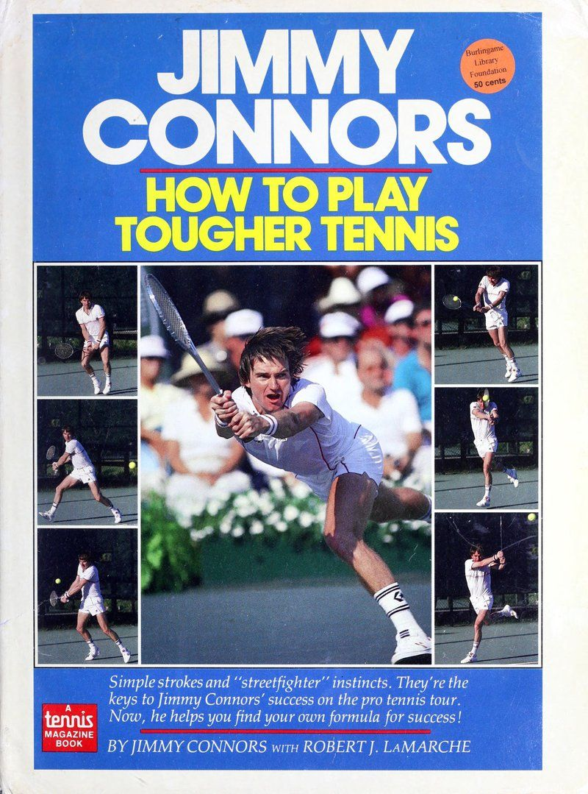
How to Play Tougher Tennis — bản dịch tiếng Việt trọn vẹn cuốn sách hướng dẫn của Jimmy Connors (1986): từ cách cầm vợt, cú đánh nền, giao bóng, volley đến lob, skyhook và cách dùng cảm xúc để thắng.
Bản dịch Việt ngữ Song ngữ: Việt · Anh
Về bản dịch này. Đây là bản dịch Việt ngữ trọn vẹn cuốn Jimmy Connors: Cách Chơi Quần Vợt Cứng Rắn Hơn (How to Play Tougher Tennis).
Tải bản in: Jimmy Connors: Cách Chơi Quần Vợt Cứng Rắn Hơn (How to Play Tougher Tennis) (PDF).
Bản dịch Việt ngữ này chỉ dùng cho mục đích học tập cá nhân, phi thương mại. Bản quyền tác phẩm gốc thuộc về tác giả và nhà xuất bản.
Bản Dịch Toàn Văn · 6 phần · 26 chương
Tác giả: Jimmy Connors Nhà xuất bản: 1986 6 phần · 26 chương · 34.000 từ
Phần I — Cái Nhìn Cá Nhân Về Quần Vợt
Jimmy Connors kể lại tuổi thơ ở East St. Louis, vì sao anh chọn quần vợt và cách giữ cho trò chơi luôn ở góc nhìn đúng mực.
Lời Giới Thiệu
GIỚI THIỆU
Tôi có cái nhìn cận cảnh và trực tiếp đầu tiên về Jimmy Connors qua một ống kính tele vào năm 1976 tại Giải vô địch sân đất nện Hoa Kỳ ở Indianapolis, Indiana. Là phóng viên của The Indianapolis Star, tôi đã có đã cố gắng giành được giấy chứng nhận giải đấu của một nhiếp ảnh gia từ bộ phận thể thao của tờ báo và đặt mình vào sân vận động bên lề tòa án để chụp một số bức ảnh hành động.
Cầu thủ mà tôi tập trung vào rất năng động. Anh ném toàn bộ cơ thể mình vào cú đánh. Anh càu nhàu, anh chiến đấu, anh cười, anh tranh cãi. Nhưng ấn tượng nhất trên hết là cách anh ấy lao vào từng quả bóng. Sự quyết tâm và kiên trì của anh thật phi thường. Nén vào khung ngắm của tôi là một hình ảnh thuần khiết năng lượng, một nguồn lực mà cho đến thời điểm đó trong sự nghiệp của Connors đã giúp ích anh ấy đã giành được 49 danh hiệu đánh đơn.
Ngày nay, với 105 danh hiệu được ghi nhận, trong đó có hai Wimbledon và năm Đăng quang US Open, Connors vẫn là một thế lực sôi nổi trong làng quần vợt. Việc buôn bán của anh ấy-mark vẫn là trò chơi hung hãn, mạnh mẽ, hối hả mà ở quy mô lớn đã giúp thúc đẩy sự bùng nổ của môn thể thao này vào đầu những năm 1970.
Và mặc dù anh ấy có thể đã chậm lại một bước và hơi dịu đi trong vài năm qua, anh ấy đã có nhiều kinh nghiệm hơn để bù đắp cho điều đó.
Suy cho cùng, bạn không được xếp hạng trong số bốn cầu thủ hàng đầu thế giới về Một nhiệm vụ hấp dẫn: Szurlej (trên ladder) nhận được ảnh chụp từ trên không của một Connors cầm (giữa) trong khi LaMarche nhìn vào.
Hơn 12 năm, như anh ấy đã làm, trừ khi bạn sẵn sàng học hỏi từ những trận đấu trước đây và thêm những khía cạnh mới vào trò chơi của mình. Connors trở thành một cầu thủ thông minh hơn.
Kiến thức và kinh nghiệm chơi quần vợt vô cùng phong phú đó là trọng tâm của Cách chơi quần vợt khó hơn. Trong suốt hai năm rưỡi, Connors, biên tập viên World Playing của tạp chí TENNIS, đã gặp tôi nhiều lần để phỏng vấn chuyên sâu nhằm đặt nền móng cho cuốn sách hướng dẫn quần vợt đầu tiên của anh ấy.
Những cuộc phỏng vấn và thảo luận tiếp theo đó đã tạo cơ sở cho các bài báo đã xuất hiện hoặc sẽ xuất hiện trên các số báo TENNIS trong tương lai dưới dòng tên của Connors. Chúng đã được chỉnh sửa và sắp xếp cẩn thận để tạo ra Cách chơi quần vợt khó hơn.
Trên các trang tiếp theo, bạn sẽ tìm thấy sự kết hợp độc đáo giữa những hiểu biết sâu sắc của siêu sao về các cú đánh và chiến lược của trò chơi, cũng như các chuỗi màu sắc đầy đủ và các bức ảnh hành động của giải đấu. Tất cả đều được thiết kế để giúp bạn cải thiện và có được nhiều niềm vui hơn khi chơi quần vợt.
Như Connors đã nói với tôi khi bắt đầu dự án, "Tôi không muốn những người đọc cuốn sách này ra sân và cảm thấy họ phải làm việc điên cuồng để giành chiến thắng trong các trận đấu. Tôi muốn họ chơi quần vợt tốt hơn nhưng cũng được tận hưởng trò chơi và nhiều lợi ích của nó. Trên hết, tôi muốn họ được vui vẻ."
Đó chính là nội dung của Cách chơi quần vợt khó hơn. Thưởng thức.
—Robert ]. LaMarche Biên tập viên cao cấp tạp chí TENNIS
Chương 1
Cách Giữ Cho Trò Chơi Ở Góc Nhìn Đúng Mực
Đừng nghĩ rằng ngày nay có quá nhiều người có thể thành thật nói rằng họ thực sự yêu thích công việc của mình. Tôi nghĩ mình là một trong những người may mắn vì quần vợt đối với tôi không chỉ là một nghề nghiệp. Đó là một lối sống, một lối sống hạnh phúc. Trò chơi đã mang lại cho tôi nhiều tiền và danh tiếng hơn những gì tôi từng mơ khi còn là một cậu bé lớn lên ở Illinois. Nó đã mang lại cho tôi rất nhiều bài tập trong suốt nhiều năm. Nó đã cho tôi một nền giáo dục về việc đi du lịch đến hầu hết mọi nơi trên thế giới và gặp gỡ những con người mới và hấp dẫn. Nó đã giúp tôi phát triển sự tự tin và quyết tâm bên trong của mình lên một tầm cao mới. Nhưng có lẽ quan trọng nhất là quần vợt mang lại rất nhiều niềm vui. Đó là điểm mấu chốt trong trò chơi đối với tôi. Nếu không có yếu tố thú vị đó, có lẽ tôi đã kiệt sức với quần vợt từ rất lâu rồi. Tôi tin rằng bất kỳ người chơi nào—dù là người mới bắt đầu hay người chơi chuyên nghiệp dày dạn kinh nghiệm—đều phải thích chơi trò chơi này để phát huy hết tiềm năng của mình. Tôi luôn nghĩ rằng những cầu thủ bị đuổi khỏi sân, những người thích cống hiến 100% sức lực cho mỗi trận đấu, là những người nguy hiểm nhất. Họ là đối thủ khó đánh bại nhất. Và đó chính là sự cứng rắn mà tôi muốn bạn phát triển trong trò chơi của mình khi đọc cuốn sách này. | Qua việc theo dõi nhiều cầu thủ trong sự nghiệp của tôi, tôi biết rằng khi môn thể thao này không còn thú vị nữa và trở thành nỗi ám ảnh, thái độ và phong độ trên sân dường như tự hủy hoại. Vì vậy, điều quan trọng là bạn phải giữ quan điểm của mình, bất kể khả năng của bạn như thế nào. Tôi đã làm điều đó như thế nào? Câu trả lời rất đơn giản: Bằng cách tận hưởng niềm vui trên sân đấu khi lớn lên. Theo những gì tôi có thể nhớ, quần vợt đã là một phần quan trọng trong cuộc đời tôi. Ngay cả trước khi tôi được sinh ra, tôi đoán bạn có thể nói rằng con đường dẫn đến sự nghiệp chơi game của tôi đã được chuẩn bị sẵn. Chuyện kể rằng, mẹ tôi, khi vẫn đang mang thai tôi, đã đi bộ đến một công trường xây dựng trong khu phố của chúng tôi và yêu cầu những người xây dựng ghé qua nhà chúng tôi để san bằng sân sau của chúng tôi làm sân tennis. Cuối cùng họ đã làm được và sân đấu đó đã trở thành sân tập đầu tiên của tôi. Sân đấu là trung tâm hoạt động xung quanh ngôi nhà của chúng tôi vì mẹ và bà tôi là những cầu thủ giỏi và những chuyên gia giảng dạy giỏi. Vì vậy
Những môn thể thao có thể tìm thấy ở bất kỳ khu dân cư nào ở Hoa Kỳ. Trên thực tế, chúng tôi đã có cơ sở hoàn hảo cho môn bóng chày và bóng đá vì có một sân rộng trước nhà chúng tôi và khoảng 20 đến 30 đứa trẻ sống trong khoảng cách đi bộ. Sau giờ học mỗi ngày, sân đấu đó tràn ngập các vận động viên tương lai.
Nhưng phải đến khi tham gia một đội bóng có tổ chức vào năm lớp 8, tôi mới quyết định treo giày vĩnh viễn. Sự nghiệp bóng đá của tôi chỉ kéo dài đúng một trận - trận đầu tiên trong mùa giải đầu tiên tôi chơi. [ tuy nhỏ nhưng tôi chạy tốt nên họ xếp tôi vào sân sau. Tôi thực hiện cú giao bóng đầu tiên và ngay lập tức bị một đứa trẻ nặng tới 180 pound san bằng. Một giờ sau, tôi thức dậy với tâm trạng hơi choáng váng, nhưng đủ tỉnh táo để đưa ra lựa chọn trút bỏ miếng đệm vai.
Tuy nhiên, tôi đã không dấn thân vào sự nghiệp quần vợt cho đến khi tôi 16 hoặc 17 tuổi. Ngày nay, các đàn em dường như đưa ra quyết định quan trọng đó ở tuổi 13 hoặc 14. Chết tiệt, ở độ tuổi đó, tôi không biết mình muốn làm gì vào ngày hôm sau, chứ đừng nói đến trong 15 năm tới, và tôi không nghĩ bọn trẻ đã thay đổi nhiều đến vậy.
Điều đã thay đổi là số tiền lớn hiện có trong trò chơi. Nó có xu hướng khiến giới trẻ, các bậc phụ huynh và huấn luyện viên rời xa những khía cạnh cạnh tranh, vui nhộn của quần vợt. Kết quả là môn thể thao này trở thành một ngành kinh doanh tạo ra áp lực đáng kinh ngạc.
Điều đó thật bi thảm đối với nhiều đứa trẻ vì chúng đã kiệt sức khi nhận ra rằng mình không thể tham gia các giải đấu lớn. Vào thời điểm đó, áp lực phải thành công trong môn quần vợt đã để lại vị chua trong miệng họ đến mức họ hoàn toàn quay lưng lại với trò chơi.
May mắn thay, tôi chưa bao giờ phải đối mặt với tình huống đó. Sau khi nhận ra thực tế khắc nghiệt của cuộc sống trên sân bóng, tôi bắt đầu đánh giá đầy đủ hơn những lợi ích của việc chơi quần vợt so với các môn thể thao đồng đội - bên cạnh việc giảm khả năng bị chấn thương nghiêm trọng. Ưu điểm đầu tiên và rõ ràng nhất là bạn không cần phải ra ngoài tìm 9, 10 chàng trai để chơi cùng mình. Tất cả những gì bạn cần là một người chơi. Bạn cũng có thể chơi theo tốc độ của riêng mình, cho dù đó là một giờ chơi quần vợt giao lưu hay ba hiệp đấu khó.
Quần vợt với nụ cười: Dù tôi tham dự Wimbledon (ngoài cùng bên trái) hay một sự kiện nhỏ hơn (trái), tôi đều tận hưởng niềm vui. Tôi không ngại mỉm cười.
Tôi cũng không thiếu người chơi để đánh. Nếu bạn muốn cải thiện trò chơi của mình, bạn thường có thể tìm một người chơi cao cấp hơn một chút, người sẽ giúp bạn vượt qua giới hạn của mình và giúp bạn cải thiện. Hoặc nếu bạn là người chơi hạng C chỉ muốn dành nửa giờ tập thể dục ngoài trời, bạn sẽ dễ dàng tìm được người chơi ở trình độ của mình và có cùng mục tiêu. Sau đó, có lợi ích là chúng ta có thể phát triển sự tự tin bên trong bằng cách chơi quần vợt. Trên sân tennis, bạn chỉ có một mình. Bạn phải đưa ra quyết định nhanh chóng và luôn phải đối mặt với áp lực. Loại trải nghiệm đó sẽ giúp ích cho bạn trong mọi khía cạnh của cuộc sống. Cuối cùng, quần vợt không có bất kỳ giới hạn độ tuổi nào. Nó đã được quảng bá như một môn thể thao suốt đời và tôi không biết ai có thể tranh cãi với khẩu hiệu đó. Một chuyến đi đến bất kỳ câu lạc bộ quần vợt địa phương nào hầu như chắc chắn sẽ có cảnh tượng những người 70 và 80 tuổi mỉm cười kiêu hãnh sau khi đánh trúng người chiến thắng, cũng như những chàng trai cô gái trẻ đang bùng nổ với nguồn năng lượng dường như vô tận. Hơn nữa, khi bạn lớn lên với tư cách là một vận động viên quần vợt, bạn sẽ thu được những kinh nghiệm quý giá. Vì vậy, không có gì lạ khi những cựu binh lớn tuổi hơn, “trên đồi” đánh bại những tay vợt trẻ vì họ thường khôn ngoan hơn trên sân. Có thể nói, họ đã tồn tại lâu hơn, kiếm được tiền và họ biết cách hoàn thành công việc trong các tình huống chơi cụ thể. Rõ ràng, quần vợt là một trò chơi thú vị, có nhiều thử thách không có hồi kết. Và trong cuốn sách của tôi, đó là điều khiến môn thể thao này trở nên thú vị đến vậy. Chắc chắn, bạn có thể áp dụng một thái độ nghiêm túc hơn, có tinh thần kinh doanh hơn đối với trò chơi và nó có thể có hiệu quả.
Phần II — Những Cú Đánh Cơ Bản & Chiến Thuật
Cầm vợt, cú đánh nền, giao bóng, đỡ giao bóng, volley, lob phòng thủ và cú đánh trên đầu — nền tảng của lối chơi Connors.
Chương 2
Cầm Vợt: Tìm Cách Phù Hợp Nhất Với Bạn
Bạn có thể ngạc nhiên khi nghe tôi nói điều này, nhưng sau ngần ấy năm chơi game, tôi không biết mình sử dụng kiểu cầm vợt nào để đánh bóng. Trên thực tế, tôi cá rằng rất nhiều chuyên gia không thể cho bạn biết tên kỹ thuật của các tay cầm của họ. Điều quan trọng là tất cả chúng ta đều cảm thấy thoải mái với chúng và có thể tìm thấy chúng trong tích tắc trong một thời điểm mà không cần phải suy nghĩ đến việc chuyển đổi. Tuy nhiên, tôi có lẽ khác với nhiều đồng nghiệp chuyên nghiệp của mình vì tôi chỉ sử dụng một cách cầm vợt cho mỗi cú đánh. Cho dù tôi đánh một cú thuận tay, một cú vô lê, một cú đánh qua đầu, một cú lốp bóng, một cú giao bóng cắt hay một cú giao bóng, tôi chỉ có một cách cầm vợt. Điều này cũng tương tự ngay cả với trái tay bằng hai tay của tôi (xem ảnh bên dưới), ngoại trừ việc tay phải của tôi cũng ở trên cán vợt. Tôi đã sử dụng tay cầm cũ, đáng tin cậy của mình trong khoảng thời gian mà tôi có thể nhớ được và điều đó đã tồn tại được một chặng đường dài. Tôi đã tìm thấy nó bằng cách đơn giản là cầm vợt lên và nắm cán vợt theo cách mà tay tôi cảm thấy thoải mái nhất. Tôi nghĩ đó cũng là cách tốt nhất để bạn tìm thấy sự kìm kẹp của mình. Tôi không tin rằng người hướng dẫn nên ép học sinh ăn một hoặc hai kiểu cầm vợt cụ thể cho mỗi lần đánh. Việc tìm ra cách cầm vợt nào thoải mái nhất cho bạn và ảnh hưởng của nó đến cú đánh cũng như phong cách chơi của bạn đòi hỏi phải có một số thử nghiệm. Sự lựa chọn cuối cùng của bạn nên là vấn đề sở thích cá nhân. Nếu phải phân loại cách cầm vợt của mình thì tôi cho rằng đó sẽ là kiểu cầm Continental (bên dưới). Cách cầm vợt này rất cơ bản và linh hoạt vì với nó, bạn không phải thay đổi cách cầm vợt thường xuyên. Bạn có thể sử dụng nó để đánh những cú thuận tay, trái tay, vô lê và giao bóng. Tôi cũng nghĩ đó là một cách tốt để bắt đầu vì nó có thể
Tôi không tin rằng người hướng dẫn nên ép ăn học sinh một hoặc hai cách cầm cụ thể cho mỗi lần đánh.
>— được sử dụng làm điểm tham chiếu để giúp bạn tìm các cách cầm thông dụng khác.
Để cầm vợt theo kiểu Continental, hãy đặt phần dài và có góc cạnh của lòng bàn tay (xem trang đối diện) phẳng với mặt sau của tay cầm. Bây giờ, hãy cầm vợt và xòe ngón trỏ ra một chút như thể bạn đã sẵn sàng bóp cò súng. Bàn tay của bạn sẽ ở vị trí tương tự như vị trí hiển thị ở trang trước.
Từ cách cầm này, chỉ cần xoay tay theo cách này hay cách khác ở các mức độ khác nhau sẽ tạo ra cách cầm được dạy phổ biến nhất. Ví dụ, hơi xoay sang phải nếu bạn thuận tay phải, hoặc sang trái nếu bạn thuận tay trái như tôi, và bạn sẽ có kiểu cầm vợt thuận tay kiểu phương Đông (phía dưới bên trái) rất tốt cho việc kiểm soát và tạo ra lượng xoáy lên vừa phải.
Xoay bàn tay của bạn xa hơn về cùng một hướng và lòng bàn tay của bạn sẽ hỗ trợ phần dưới của tay cầm nhiều hơn mặt sau. Những kiểu cầm vợt này được gọi là kiểu cầm vợt thuận tay kiểu phương Tây hoặc kiểu bán phương Tây (bên dưới) và được sử dụng tốt nhất để tạo ra những cú đánh xoáy lên mạnh. Một trong những nhược điểm của chúng là chúng đặt tay của chúng ta quá xa về một bên của cán vợt, bạn có thể khó chuyển nhanh sang cách cầm vợt trái tay.
Để có được cú đánh trái tay tốt, hãy quay trở lại cách cầm vợt kiểu Continental ban đầu và xoay tay của bạn theo hướng ngược lại. Bằng cách xoay bàn tay của bạn một chút như bạn đã làm với các cú đánh thuận tay, bạn sẽ đạt được một cú đánh trái tay kiểu Đông (phía dưới, ngoài cùng bên phải).
Hãy nhớ rằng, hãy chọn tay cầm thoải mái cho bạn. Sau đó, thực hành chúng cho đến khi bạn có thể chuyển đổi cách cầm vợt nhanh chóng mà không cần suy nghĩ. Một nơi tuyệt vời để làm điều đó là ngoài sân đấu khi bạn đang nghe đài, xem tivi hoặc chỉ nói chuyện với bạn bè. Bằng cách đó, bạn sẽ có thể tập trung tốt hơn vào việc tiếp xúc bóng chắc chắn.
Cách cầm thuận tay kiểu Đông Kiểu cầm thuận tay bán kiểu Tây lục địa Đông thuận tay Bán Tây thuận tay phương Tây thuận tay
Tìm Một Cách Cầm Vợt
Chìa khóa để tìm tay cầm là trước tiên hãy xác định vị trí phần thịt, có đường chéo của lòng bàn tay như minh họa ở trên. Sau đó, chỉ cần đặt khu vực này trên tay cầm vợt của bạn theo hình minh họa tay cầm nhìn từ bên phải. Vì mình thuận tay trái nên toàn bộ ảnh phía dưới của XN & eG Ở phía Đông, những trang này thể hiện sự hiểu biết từ góc nhìn của phe cánh tả. Công bằng mà nói, các hình minh họa Backhand ở đây được vẽ dành cho người thuận tay phải. Nếu bạn là người thuận tay trái như tôi, chỉ cần đảo ngược vị trí tay trên sơ đồ tay cầm ở góc nhìn cuối.
Chương 3
Cú Đánh Nền: Giữ Cho Đơn Giản
Mặc dù tôi là một vận động viên ném bóng nhưng tôi luôn cảm thấy mình nên tấn công, như thể tôi nên làm điều gì đó để buộc hành động, đồng thời mang đến cho mọi người những gì họ muốn xem. Thái độ đó có lẽ đã khiến tôi mất vài trận đấu trong nhiều năm, nhưng đó là cách tôi tận hưởng lối chơi. Tôi sẽ không bao giờ thay đổi. Tôi nghĩ chìa khóa cho những bước đột phá của tôi là sự đơn giản. Đối với các cú đánh thuận tay và trái tay, tôi chuẩn bị sẵn sàng sớm, tôi cầm vợt thẳng về phía sau, tôi tiếp xúc với quả bóng ở phía trước bằng một cú đánh khá ngang và tôi thực hiện theo cú đánh đầy đủ. Cú đánh của tôi không có gì phức tạp và không có chuyển động quá mức nào có thể khiến việc căn thời gian đánh trở nên khó khăn. Đó là cách tôi được dạy chơi quần vợt khi còn nhỏ và tôi đã không thay đổi cách đánh của mình trong suốt nhiều năm. Chúng luôn là sự kết hợp hoàn hảo cho lối chơi hung hãn của tôi—những cú đánh nhỏ gọn có thể tạo ra sức mạnh. Điều thực sự giúp tôi phát triển những cú đánh mặt đất đơn giản như vậy chính là mặt sân nơi tôi học cách chơi. Họ rất nhanh và độ nảy luôn ở mức thấp, o Tôi phải nhảy lên thật tốt. Tôi không thể lãng phí nhiều thời gian vào những động tác có vẻ như là không cần thiết và câu trả lời là một cú vung vợt ngắn, thẳng, được mẹ và bà tôi dạy cho tôi. Nó cũng giúp tôi tính thời gian cho những cú chạm đất của mình dễ dàng hơn nhiều. Tất nhiên, một số chuyên gia quần vợt đã chỉ trích những cú đánh chạm đất của tôi trong suốt sự nghiệp của tôi, nói rằng tôi không có nhiều khả năng mắc lỗi qua lưới với họ. Nhưng vì chúng đã là một phần trong trò chơi của tôi quá lâu nên tôi đã học cách điều chỉnh trên sân để chúng luôn ổn định. Trên thực tế, bây giờ tôi cảm thấy thoải mái với trò chơi và những cú đánh trên mặt đất của mình hơn bao giờ hết. Tôi biết mình có thể làm gì với trò chơi của mình và điều đó giúp tôi thực sự tự tin thực hiện các cú đánh của mình. Ở những trang tiếp theo, với sự trợ giúp của các bức ảnh theo trình tự, tôi sẽ cho bạn thấy những nét cơ bản của tôi và mô tả những gì tôi nghĩ là chìa khóa của chúng. Nếu bạn không cảm thấy mình đang thực hiện các cú đánh mặt đất tốt như bình thường, hãy nghĩ đến những điểm chính của tôi. Có thể họ sẽ giúp đưa bạn đến con đường chiến thắng.
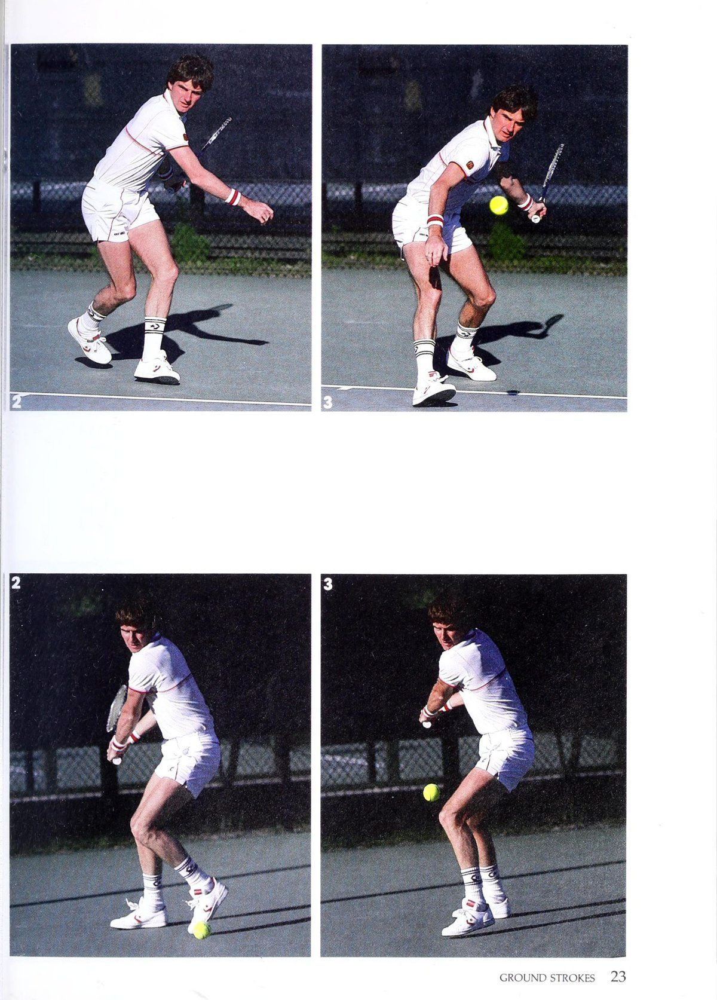
Hình 1: Chuỗi động tác mở vợt thuận tay của Jimmy Connors. Nhận diện đường bóng tức thì, xoay hông và đưa đầu vợt ra sau bằng đường chuyển động ngắn gọn nhất trước khi bước chân vào sân.
Xoay Phần Thân Trên
Tôi đã chuẩn bị cho các cú đánh tiếp đất thuận tay và trái tay của mình từ rất sớm, như bạn có thể thấy trong chuỗi ảnh ở đây. Đôi mắt, phản xạ và khả năng đoán trước các cú đánh của tôi đều phối hợp với nhau để giúp tôi có được cú nhảy nhanh trước cú trả bóng của đối thủ. Tôi đã chơi quần vợt lâu rồi, bây giờ gần như theo bản năng, nhưng ngay khi nhìn thấy bóng bay khỏi dây vợt qua lưới, tôi bắt đầu quay vai sang một bên (xem ảnh 1). Việc xoay thân trên này làm được hai việc. Đầu tiên, nó khởi động lại cây vợt của tôi một cách nhanh chóng. Và thứ hai, nó cuộn cơ thể tôi (2 và 3) để tôi thực sự có thể lao vào quả bóng trong những cú đánh của mình.
Cú Trái Tay
Một 'e
Đưa Vợt Về Sau Bằng Một Động Tác Đơn Giản
Người chơi sử dụng các kiểu vuốt ve khác nhau để phù hợp với trò chơi của họ. Ví dụ: [như đơn giản, cú xoay nhỏ gọn không có chuyển động quá mức làm sai lệch thời gian của tôi.
Điều đó là hiển nhiên khi bạn xem ảnh 4 và 5 về cú vung vợt ngược của tôi trên cả hai các bên. [chỉ cần mang vợt thẳng về. Đó là một trong những lý do tại sao tôi lại như vậy nhất quán trong nhiều năm bất chấp lối chơi hung hãn của tôi. Một cú vung vợt sau đơn giản cũng hãy để tôi ngụy trang những bức ảnh của mình. Tôi có thể đập quả bóng, đi qua một chút hoặc cắt nó ra khỏi cùng một cú đánh lùi.
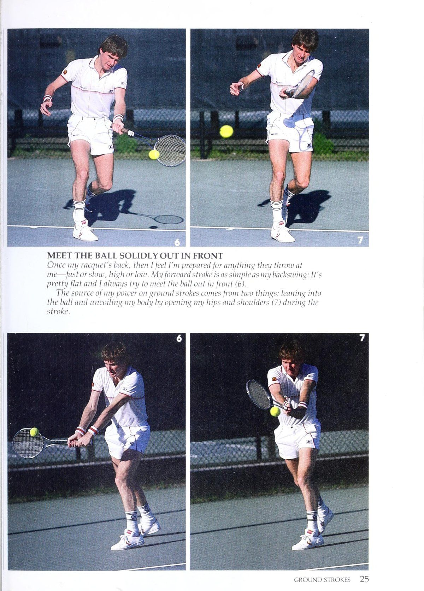
Hình 2: Pha tiếp xúc bóng ở phía trước thân người và đè toàn bộ trọng lượng cơ thể vào tâm quả bóng, giải phóng lực qua vai kết thúc hoàn chỉnh.
Tiếp Xúc Chắc Chắn Với Bóng Ở Phía Trước
Khi vợt của tôi quay trở lại, tôi cảm thấy mình đã sẵn sàng cho bất cứ điều gì họ ném vào tôi—nhanh hay chậm, cao hay thấp. Cú đánh về phía trước của tôi cũng đơn giản như cú đánh ra sau của tôi: Nó khá phẳng và tôi luôn cố gắng đánh bóng ra phía trước (6). Nguồn sức mạnh của tôi trong các cú đánh trên mặt đất đến từ hai điều: dựa vào quả bóng và thả lỏng cơ thể bằng cách mở hông và vai (7) trong khi thực hiện cú đánh.
Theo Đà Hoàn Toàn
Tôi để trọng lượng của đầu vợt tác động lên tôi rất nhiều khi tôi đánh một cú đánh xuống đất. Nó giúp tôi có sức mạnh xuyên qua quả bóng khi va chạm và thực hiện cú đánh theo hướng tự nhiên về phía trước, như bạn có thể thấy trong ảnh 8 và 9 ở bên trái.
Tôi coi bước tiếp theo như là người chỉ đạo cú thuận tay và trái tay của tôi. Nó giúp hướng dẫn hướng bắn của tôi. Và khi tôi hoàn thành cú đánh, tôi đã bắt đầu trở lại vị trí cho cú đánh tiếp theo. Bạn không thể chỉ đứng đó và ngưỡng mộ bức ảnh của mình; đó là lịch sử. Bạn phải luôn cảnh giác và sẵn sàng di chuyển nhanh chóng để có thể duy trì áp lực.
Thành phần cuối cùng: đầy đủ theo dõi (phải)
Cải thiện tốc độ và vị trí.
Hiểu Những Nguyên Tắc Cơ Bản Của Độ Xoáy
Ngay cả khi bạn đánh những cú đánh trên mặt đất tương đối bằng phẳng như tôi, điều rất quan trọng là bạn phải hiểu- _———— nắm vững những kiến thức cơ bản về tạo độ xoáy cho bóng. Tại sao? Đầu tiên, kiến thức đó
Xoáy Lên
Sẽ cho phép bạn sử dụng các cú đánh xoay bất cứ khi nào có dịp cần đến chúng. Thứ hai, và có lẽ cũng quan trọng không kém, nó sẽ giúp bạn nhận ra kiểu xoáy mà đối thủ sắp thực hiện bằng cách quan sát cú vung bóng của anh ta. Đừng bao giờ đánh giá thấp giá trị của lợi thế đó vì nó có thể là yếu tố then chốt trong việc chuẩn bị cho sự trở lại của bạn. Có hai loại cơ bản
Xoáy Xuống
Xoáy có thể được thực hiện trên một quả bóng với các cú đánh khác nhau: xoáy lên. Tác dụng của xoáy: Một quả bóng được đánh với xoáy lên (xem hình minh họa A ở trên) và xoáy xuống, hoặc cắt lát. A có khoảng sáng bóng cao qua lưới, lao xuống sân nhanh chóng và thứ ba, xoáy ngang, cũng sử dụng những cú đá cao về phía sân sau. Một cú đánh có độ xoáy nhỏ thỉnh thoảng có một chút, nhưng tôi sẽ nói nhiều hơn về cung thấp hơn (B) và nảy bình thường. Một quả bóng xoáy xuống di chuyển về điểm đó trong Chương 20. trong không khí chậm hơn và thường trượt thấp khỏi mặt sân. Topspin đã được sử dụng trên bề mặt (C). trò chơi đã diễn ra trong một thời gian rất dài, nhưng phải đến giữa những năm 1970, hình minh họa C) mới xuất hiện cao hơn và buộc người ta phải giữ vững nó. hơn là một cú đánh trên mặt đất bằng phẳng (xem đối thủ cúi thấp cho Bjorn Borg của Thụy Điển và hình minh họa B) và đá về phía trả về và đánh bóng cao cho Guillermo Vilas của Argentina ở sân sau. Nếu một người chơi không đủ khả năng để dọn lưới. Đối với hai người chơi đang mong đợi một cú đánh xoáy lên, anh ấy vì lý do đó, một quả bóng xoáy xuống chịu trách nhiệm chính cho cú đánh lớn có thể bị đẩy sâu về phía sau anh ta được sử dụng khá thường xuyên bởi những người chơi bùng nổ trong việc sử dụng xoáy lên. đường cơ sở hoặc bị bắt ngay khi thực hiện các cú đánh tiếp cận. Thành công của họ ở cấp độ chuyên nghiệp đã đến và phải thực hiện tốc độ trả bóng chậm hơn và tốc độ trả bóng thấp thậm chí ở cấp câu lạc bộ từ xung quanh đầu hoặc nảy cho phép họ di chuyển người chơi để thêm nó vào trò chơi của họ. ngang vai. Đã đối mặt gần lưới hơn và có lẽ Để truyền tải xoáy lên cho Borg và Vilas nhiều lần thực hiện cú sút cao từ một quả bóng, bạn phải thực hiện cú xoay người của mình trong sự nghiệp của tôi, tôi có thể nói với bạn rằng đối thủ đó. vợt về phía trước theo chiều thấp - bạn nên khôn ngoan tránh cả hai. Vì vậy, hãy nhớ, nếu bạn muốn đi đến đường cao, gặp các tình huống bóng và đánh bóng bằng xoáy lên, hãy đánh bóng với mặt vợt thẳng đứng. sự gia tăng sau khi nó bật lên. mặt sau của bóng với cú đánh từ thấp đến-Kiểu cú đánh này tạo ra một xoáy xuống, hay lát cắt, chỉ là cú vung cao về phía trước. Nếu bạn đánh bóng hướng lên trên sẽ có tác dụng ngược lại với xoáy lên. Nó muốn tạo ra xoáy xuống, làm cho bóng xoáy lên và được tạo ra bằng cách đánh bóng cọ dưới bóng cách xa bạn. với một cú xoay từ cao xuống thấp. Đột quỵ từ cao đến thấp. Có ba ưu điểm là bóng sẽ quay ngược về phía bạn để dự đoán điều gì sẽ sử dụng xoáy lên (xem hình minh họa-vì nó khiến mặt vợt của bạn có kiểu xoáy mà đối thủ của bạn là loại A). Đầu tiên, một cú sút trúng đích và bay qua lưới. sắp sử dụng, hãy tìm mức thấp
Cơ Chế Cú Đánh: Cú Đánh Nền Xoáy Lên & Xoáy Xuống
Để đánh với xoáy lên, hãy lấy Từ điểm xuất phát thấp đó, cú giao bóng cao sẽ đưa vợt trở lại dưới mức khi vung vợt về phía trước dọc theo dần dần để xác nhận rằng bạn đã định tiếp xúc với đường đi lên và gặp bóng được vung từ thấp đến cao và với bóng (ở trên). với mặt vợt thẳng đứng. chải lên trên quả bóng.
Nguyên Tắc Cơ Bản Của Xoáy Xuống
Chương 4
Cú Giao Bóng: Hướng Tới Sự Ổn Định
Bạn sẽ không tìm thấy tên tôi trong bất kỳ danh sách các vận động viên chuyên nghiệp nào sở hữu những cú giao bóng đầu tiên bùng nổ và lớn. Nhưng mỗi lần tôi bước đến vạch cuối sân, tôi đều cầm bóng trong tay và không ai có thể chơi cho đến khi tôi thực hiện bước đi đầu tiên. Tôi hoàn toàn kiểm soát được. Và khi tôi thực hiện cú giao bóng của mình, tôi biết mình sẽ không thường xuyên áp đảo người chơi. Tôi sẽ giao bóng đến một số điểm nhất định và thay đổi tốc độ để người nhận giao bóng phải đoán. Tôi đã học được rằng ở cấp độ chuyên nghiệp ngày nay, việc bạn giao bóng lớn đến đâu thực sự không quan trọng. Điểm mấu chốt, như tôi thấy, là bạn có thể thiết lập cú đánh thứ hai để giao bóng. Đó là chìa khóa. Điều tôi vừa nói là hiển nhiên rằng tôi tin rằng consis có sức mạnh phục vụ tốt hơn so với nguyên liệu thô.
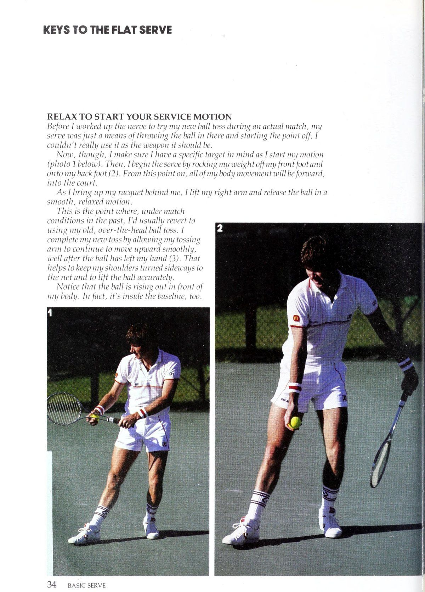
Hình 3: Tư thế chuẩn bị giao bóng của Connors. Thả lỏng toàn bộ cơ bắp cánh tay, tung bóng cao ổn định và cuộn thân trên để tích lũy thế năng.
Quyền lực. Hạn chế duy nhất của việc phát triển mức độ nhất quán như vậy là nó có thể khiến bạn tự mãn hoặc miễn cưỡng thử những cách mới để nâng cao cú giao bóng của mình. Tôi biết vì tôi đã từng ở đó. Khi lớn lên, tôi không có đủ chiều cao cũng như sức khỏe để thực hiện những cú giao bóng phẳng và mạnh mẽ. Vì vậy, tôi chỉ bắt đầu thả bóng ra sau đầu nhiều hơn trong cú ném giao bóng để giúp tôi xoay bóng vào cuộc và bắt đầu điểm. Về cơ bản, tôi đã sử dụng giao bóng tương tự cho đến sự kiện Queens trước Wimbledoni năm 1982 bởi vì nó chưa bao giờ khiến tôi gặp rắc rối và tôi có thế trận vững chắc để hỗ trợ nó. Nhưng khi lớn hơn, tôi nhận ra rằng mình có thể sử dụng thêm một vài điểm miễn phí từ cú giao bóng của mình trong mỗi trận đấu. Việc có thể thực hiện một cú giao bóng không thể trả lại hoặc thậm chí là một cú át bây giờ trở nên quan trọng hơn. Sự thay đổi cuối cùng mà tôi thực hiện là một sự thay đổi rất nhỏ—tôi chỉ đơn giản ném quả bóng ra xa hơn về phía trước và Một vũ khí chắc chắn: Cú giao bóng phẳng của tôi tạo ra những tình huống mà tôi có thể vồ lấy bóng L: thực sự không quan trọng bạn phục vụ lớn như thế nào. các
Điểm mấu chốt là có thể thiết lập cú đánh thứ hai bằng cú giao bóng của bạn.
Tôi đã sử dụng kiểu giao bóng phẳng mới trong luyện tập một thời gian nên tôi không đủ can đảm để thử nó trong một tình huống thi đấu thực tế cho đến giải Queens năm 1982. Bạn biết đấy, những thói quen cũ rất khó bỏ. Tôi nghĩ, "Chà, nếu có thời gian để làm điều đó thì bây giờ là trên sân cỏ, nơi tôi có cơ hội giành được một số điểm dễ dàng hơn.' Cú giao bóng đã thành công. Tôi đã giành chức vô địch ở giải Queens và hai tuần sau đó là vương miện Wimbledon. Cú ném mới cho phép tôi dồn trọng lượng cơ thể nhiều hơn vào các cú giao bóng, đồng thời giảm áp lực lên lưng. Nó cũng buộc tôi phải tiến một bước xa hơn vào sân, điều này giúp tôi có thể chơi quần vợt giao bóng và vô lê nhiều hơn một chút. Nói tóm lại, tôi đã sửa đổi cú ném khiến tôi thậm chí còn hung hãn hơn trên sân. Trước khi cải thiện cú giao bóng, tôi giống như một con hổ rình rập ở vạch cuối sân trong một trận đấu, lao ra và tìm kiếm quả bóng ngắn cuối cùng có thể cho phép tôi tấn công. Bây giờ, tôi không rình rập quá nhiều. Cú giao bóng phẳng của tôi đang tạo ra những tình huống mà tôi có thể vồ lấy bóng và khiến mọi việc xảy ra sớm hơn trước. đồng thời, hãy tận hưởng thành quả mà tính nhất quán trong giao bóng của tôi mang lại. Tôi thường xuyên giành được điểm miễn phí và tôi nhận được tỷ lệ giao bóng đầu tiên cao trong trận đấu, vì vậy đối thủ của tôi không thể tận dụng được nó thường xuyên. hãy tiếp tục tìm cách cải thiện. Bắt đầu với một cú giao bóng phẳng cơ bản và phát triển dựa trên vũ khí đó.
Chìa Khóa Cú Giao Bóng Phẳng — Thư Giãn Để Bắt Đầu Động Tác
Trước khi tôi lấy hết can đảm để thử ném quả bóng mới của mình trong một trận đấu thực sự, tôi giao bóng chỉ là một phương tiện để ném bóng vào đó và bắt đầu điểm. 1 thực sự không thể sử dụng nó như một vũ khí cần thiết.
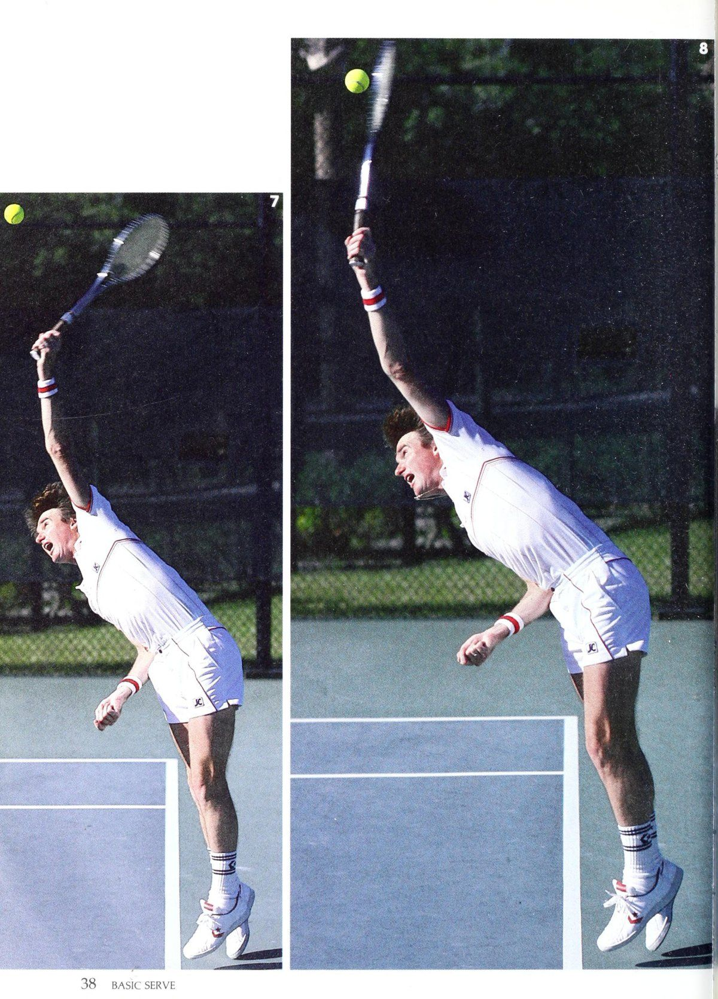
Hình 4: Đỉnh cao cú giao bóng bạt (Flat Serve). Bật người đón bóng ở điểm cao nhất và dùng quán tính cơ thể lao thẳng vào bên trong vạch cuối sân để sẵn sàng kiểm soát điểm số tiếp theo.
Tuy nhiên, bây giờ, tôi đảm bảo rằng mình đã có mục tiêu cụ thể khi bắt đầu hành động.
(ảnh 1 bên dưới). Sau đó, [bắt đầu giao bóng bằng cách chuyển trọng lượng của tôi ra khỏi bàn chân trước và tôi lên chân sau của tôi (2). Từ thời điểm này trở đi, toàn bộ chuyển động của cơ thể tôi sẽ hướng về phía trước, vào tòa án.
Khi tôi giơ vợt lên phía sau, tôi giơ tay phải lên và thả bóng vào trong.
Chuyển động nhẹ nhàng, thư thái.
Đây là điểm mà, dưới trận đấu điều kiện trong quá khứ, tôi thường quay trở lại sử dụng kỹ thuật ném bóng qua đầu cũ của tôi. tôi hoàn thành lần ném mới của tôi bằng cách cho phép tôi ném cánh tay tiếp tục di chuyển lên trên một cách trơn tru, ngay sau khi bóng đã rời khỏi tay tôi (3). Đó giúp giữ cho đôi vai của tôi quay sang một bên lưới và nhấc bóng chính xác.
Chú ý rằng quả bóng đang bay ra phía trước cơ thể của tôi. Trên thực tế, nó cũng nằm trong đường cơ sở.
Gồng & Bung Người Khi Vung Vợt
Trong sự nghiệp của mình, tôi đã nghe nhiều người phục vụ giỏi nói rằng một trong những chìa khóa cơ bản để phục vụ là khả năng cuộn và thả lỏng cơ thể bạn như một chiếc lò xo. Tôi nghĩ sự tương tự là một điều tốt.
Động tác cuộn dây bắt đầu bằng việc xoay vai và kết thúc khi bạn đưa vợt ra phía sau (4).
Tại thời điểm chuyển động này, trọng lượng cơ thể của tôi dồn lên bàn chân trước.
Hành động tháo vợt bắt đầu ngay khi bạn khởi động vợt để tiếp xúc, như tôi đang làm trong ảnh 5. Vai của tôi vẫn nghiêng về phía lưới, nhưng chúng sẽ xoay khi tôi đến gần điểm tiếp xúc và thêm sare cú đấm để giao bóng.
Tôi nghĩ đôi chân—và cách chúng hoạt động để giúp bạn đẩy ra khỏi sân và vào bóng (6)—là một phần thường bị bỏ qua của chuyển động căng dây khi giao bóng. Đó là một công việc tồi tệ; pelus nó có thể đảm bảo rằng bạn sẽ đi lên để gặp bóng chứ không phải đợi nếu đi xuống quá thấp.
Nếu chuỗi ảnh này cho thấy cú giao bóng cũ của tôi, vào thời điểm này tôi sẽ ở một vị trí khác rất nhiều so với Lam bên dưới.
Tôi sẽ không nghiêng về phía trước; trên thực tế, lưng của tôi sẽ cong về phía sau để đánh bóng qua đầu.
Như bạn có thể thấy, cú ném mới của tôi cho phép tôi dựa vào sân để có được sức mạnh và sự thoải mái.
PHỤC VỤ CƠ BẢN
Để Đà Đưa Bạn Vào Trong Sân
Khi tiếp xúc với bóng (8), tôi hoàn toàn kiểm soát được điểm. Tôi đã bẻ cẳng tay và đưa tay vào quả bóng để tạo ra sự khác biệt. Ngoài ra, không có gì xảy ra khi bóng ra phía trước ne. Nếu quả bóng mũ rơi xuống, nó sẽ rơi vào bên trong đường cuối sân khoảng 30 cm. Chính vị trí của bóng khi tiếp xúc giờ đây đã cho phép tôi giao bóng đa dạng hơn rất nhiều so với trước đây. Tôi có thể sử dụng thêm một vài đường phẳng lớn hơn cũng như cắt bóng rộng hơn về phía trái tay... Tóm lại, tôi nhận được nhiều cú đấm hơn. Cuối cùng, tôi nghĩ rằng những gì xảy ra ngay sau khi yloyu đánh bóng chỉ là điều quan trọng phải diễn ra trước đó. Việc theo dõi của bạn có ảnh hưởng lớn đến hiệu quả mà anh ấy phục vụ. Nó cũng sẽ đưa bạn bước vào tòa án. Vì vậy, bạn không thể giảm tốc độ vung vợt của mình ngay sau khi đánh bóng. Nếu làm vậy, bạn sẽ nhận được cú giao bóng mạnh mẽ và chính xác. Điều đó có nghĩa là đối thủ của bạn có thể đánh trả mạnh mẽ hơn, Đầu vợt của tôi vẫn mang nhiều tốc độ sau khi bóng đã được đánh (Q và 10). Ở giai đoạn này trong sự nghiệp của mình, tôi có thể sử dụng lực giao bóng của mình nhiều hơn một chút để giành được một vài điểm miễn phí trong một trận đấu. Có lẽ bạn cũng có thể.
Chương 5
Đỡ Giao Bóng: Giữ Thái Độ Quyết Đoán
MỘT
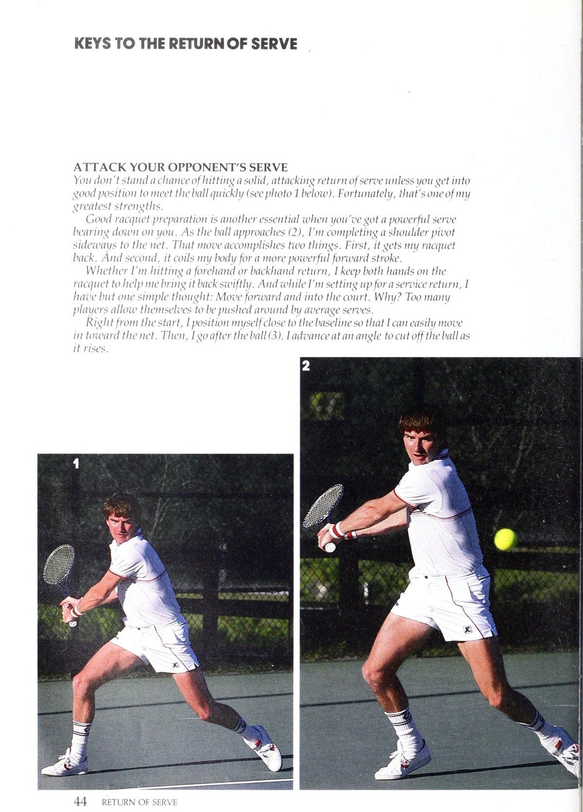
Hình 5: Tư thế đứng chờ trả giao bóng khét tiếng của Jimmy Connors. Đứng sát vạch cuối sân với trọng tâm dồn lên mũi chân, sẵn sàng bước vào sân cướp thời gian của đối thủ.
Thái Độ Quyết Đoán
Rất nhiều cầu thủ tràn đầy tự tin khi bước lên vạch cuối sân để giao bóng. Nhưng lật ngược tình thế, bạn thường sẽ tìm thấy một câu chuyện hoàn toàn khác. Đột nhiên bị đặt vào tình thế phải nhận một quả giao bóng, họ vô tình thực hiện cú giao bóng táo bạo của mình.
Bản năng hung hăng bị giữ lại và trở nên ngập ngừng hoặc có tư tưởng phòng thủ hơn. Gần như thể họ đã có điều kiện để nghĩ như vậy sau nhiều năm nghe nói rằng máy chủ là người có nhiệm vụ kiểm soát thời điểm bắt đầu của một điểm. Đó có lẽ là nơi tôi có được lợi thế lớn nhất trước đối thủ của mình trong suốt sự nghiệp của tôi. Tôi đừng bao giờ suy nghĩ phòng thủ khi tôi trả giao bóng. Tôi luôn cố gắng làm điều gì đó bổ sung khi trở lại, biến nó thành một vũ khí phản công mạnh mẽ để ngay cả những máy chủ lớn nhất cũng cảm thấy hơi khó chịu khi họ bước vào hàng. Họ biết rằng họ đang trong một cuộc chiến để giữ được cú giao bóng, và điều đó kiến thức gây áp lực nhiều hơn cho họ. Ở cấp độ câu lạc bộ, thái độ tích cực đó đối với việc trả giao bóng cũng có thể mang lại lợi ích cho bạn—và theo một cách quan trọng. Vì vậy, tôi muốn đánh vần triết lý trả giao bóng cho bạn và phác thảo các phím đánh chính sẽ giúp bạn vô hiệu hóa lợi thế tự nhiên của người giao bóng khi bắt đầu một điểm. Tất nhiên, luyện tập là con đường chắc chắn nhất để phát triển một cú trả giao bóng tấn công vững chắc. Trên thực tế, khi tôi khoảng 12 tuổi, tôi thường xuyên có một kiểu tập luyện độc đáo khiến việc phục vụ của tôi trở thành vũ khí hiệu quả như ngày nay. Vào mùa đông, tôi thường chơi trong nhà
Một quan điểm tấn công: Tôi không bao giờ nghĩ phòng thủ khi trả giao bóng (phải). Tôi luôn cố gắng gây áp lực máy chủ.
Bsn, Yiu phải luôn cảnh giác để xử lý bất cứ điều gì họ ném theo cách của bạn.
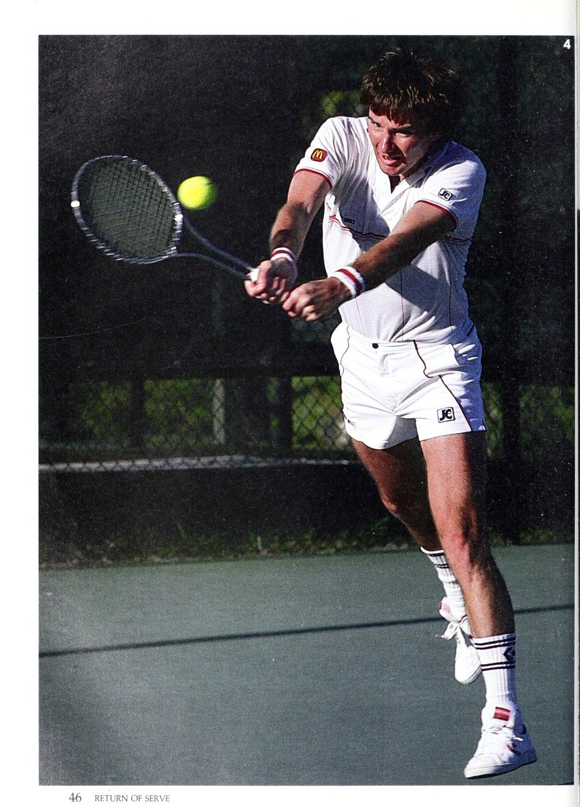
Hình 6: Đòn trừng phạt cú giao bóng hai. Thân trên bung mở xoay mạnh mẽ, mượn trọn lực bóng của đối phương để bạt bóng xuyên thủng góc sân.
Những tấm gỗ tại Kho vũ khí Vệ binh Quốc gia ở St. Louis, Mo. Nếu nói rằng các tòa án bất thường diễn ra nhanh chóng sẽ là một cách nói quá nhẹ vì duy trì- tôi người nance thường xuyên đánh bóng sàn nhà để phục vụ quân đội tôi bài tập. Kết quả? Các quả bóng sẽ trượt và tăng tốc sau khi chúng nảy lên.
Tôi nhớ rằng tay vợt chuyên nghiệp mà tôi chơi ở đó luôn giao bóng rộng vào tôi tòa án deuce. Trên thực tế, anh ấy giao bóng rộng đến mức lúc đầu anh ấy đã đuổi tôi từ Sân 3 đến Sân 1! Tôi đã đặt rất nhiều cao su để bắt được quả giao bóng của anh ấy, tôi nhanh chóng biết được rằng cách duy nhất để kiểm soát điểm là di chuyển vào và đón bóng sớm sau khi quả bóng nảy lên.
Loại hình thực hành phù hợp cũng sẽ là cơ sở cho việc trả lại dịch vụ của bạn. Ví dụ: nếu bạn chơi trên sân đất nện mềm trong 90% thời gian và bạn dự kiến thi đấu trong một giải đấu trên sân cứng, sẽ có rất ít cơ hội để bạn có thể xử lý được một máy chủ mạnh trên mặt sân nhanh trừ khi bạn chuẩn bị. Lời khuyên của tôi là hãy tìm một sân có tốc độ như nhau và có một đối tác giao bóng cho bạn cách đường biên của anh ta vài feet. Tôi đảm bảo ban đầu bạn sẽ làm việc như điên, nhưng bạn sẽ nhanh chóng học cách kiểm soát cú đánh và di chuyển chân hiệu quả hơn.
Khi bạn đã kiểm soát được những điều cơ bản, bạn nên xem xét kết hợp kinh nghiệm để nâng hiệu quả lợi nhuận của mình lên một cấp độ khác. Bằng cách đối mặt với người chơi nhiều lần, bạn sẽ có thể chọn ra các kiểu giao bóng cho phép bạn chuẩn bị tốt hơn cho cú trả giao bóng.
Tôi muốn đặc biệt chú ý đến chiến lược giao bóng của đối thủ trong một số tình huống nhất định của trận đấu. Anh ấy có thả lỏng giao bóng khi phải chịu nhiều áp lực không? Anh ấy thường giao bóng rộng hay lao thẳng vào tôi khi anh ấy đang bị dẫn 0-15 hoặc 0-30 trong ván giao bóng của mình? Câu trả lời cho những loại câu hỏi này có thể giúp tạo ra một khoảng thời gian nghỉ dịch vụ quan trọng ngay khi tôi cần.
Mặc dù tôi cẩn thận theo dõi chiến lược giao bóng của đối thủ trong một trận đấu, nhưng tôi nghĩ rằng khả năng “đọc” được cú ném giao bóng của anh ta có thể là chìa khóa lớn nhất dẫn đến thành công của tôi với việc trả giao bóng. Tôi nhận được những gợi ý quan trọng về loại, tốc độ và hướng của cú giao bóng sắp đến với tôi bằng cách xem vị trí của quả bóng so với cơ thể của người giao bóng khi tung bóng, cũng như cách vợt của anh ta đi qua bóng khi tiếp xúc. Tôi biết những quan sát đó rất hữu ích đối với các diễn đàn ở St. Louis!
Ví dụ: nếu đối thủ của bạn thả bóng ở phía trước cơ thể nhưng hướng ra bên cạnh, bạn có thể cá rằng anh ta sẽ đi xung quanh nó bằng một lát cắt. Nếu bóng ra phía trước nhiều hơn, rất có thể anh ta sẽ giao bóng cứng và phẳng. Và một cú tung ra sau đầu gần như là một cơ hội chắc chắn cho một cú đá hoặc cú giao bóng xoắn.
Đọc cú ném của đối thủ đòi hỏi bạn phải phân tích trong tích tắc và phản ứng nhanh chóng. Bạn không có nhiều thời gian để suy nghĩ trên sân, vì vậy kỹ thuật này phải được thực hiện gần như bản năng thông qua luyện tập.
Và, tất nhiên, nó không thể hoàn hảo được. Ví dụ: một số người chơi có thể C đánh được nhiều cú giao bóng khác nhau trong cùng một cú ném. Theo ý kiến của tôi, những thứ khác khó đọc hơn bởi vì chúng có cái mà tôi gọi là "nổi". Họ không kiểm soát được cú ném của mình, vì vậy bóng có xu hướng di chuyển ngẫu nhiên từ quả giao bóng này sang quả giao bóng tiếp theo. Chúng gần như không thể đọc được. Bạn chỉ cần giữ tinh thần tỉnh táo để xử lý bất cứ điều gì họ cản trở bạn.
Mặc dù kiểu luyện tập và kinh nghiệm thi đấu phù hợp cung cấp những điều cơ bản để phát triển một cú trả giao bóng hiệu quả, nhưng một thái độ tinh thần đúng đắn là yếu tố gắn kết chúng lại với nhau để tạo ra một vũ khí đáng tin cậy.
Mặc dù kinh nghiệm nhiều năm của tôi đã dạy tôi phải nỗ lực Vs. Người đánh bóng cơ bản: Rất khó để đánh trúng người thắng trận ngay từ quả giao bóng. Vì vậy, cách tốt nhất của bạn là thực hiện cú trả bóng sâu để dồn lưng đối thủ vào tường.
Vs. Người giao bóng và chuyền bóng: Những người chơi này cung cấp cho bạn các mục tiêu cụ thể để bạn nhắm tới khi trở về. Cố gắng chuyền sang trái hoặc phải (1 và 2), hoặc đánh ngay vào chân họ (3).
Những thay đổi không thường xuyên về tốc độ thu nhập của tôi, tôi vẫn muốn tìm kiếm người chiến thắng bất cứ khi nào tôi có cơ hội. Và đó không phải là một lối chơi có tỷ lệ phần trăm thấp đối với tôi »bởi vì tôi thường có thể đoán trước các cú giao bóng và điều chỉnh vị trí của mình để tôi 'dồn toàn bộ trọng lượng của mình vào cú trả bóng'. Bây giờ, tôi không gợi ý rằng bạn nên cố gắng tìm kiếm các đường chuyền trong cú giao bóng của mình, nhưng bạn nên có mục đích hoặc kế hoạch rõ ràng trong đầu khi bạn đang chờ đợi quả giao bóng được thực hiện. Ngay cả khi bạn bị vượt qua trong pha giao bóng, bạn phải ném kế hoạch của mình ra ngoài cửa sổ, điều đó thường xuyên giúp ích hơn. Tôi thấy rằng tôi đánh trả tốt nhất khi đối đầu với những người giao bóng và bắt vô lê bởi vì họ cho tôi những mục tiêu xác định để nhắm tới khi họ lao vào lưới—sang hai bên hoặc ở người thừa kế. bằng chân Khó hơn nhiều để đạt được chiến thắng trước những người chơi cơ bản.
Tấn Công Cú Giao Bóng Của Đối Thủ
Bạn không có cơ hội đánh một quả giao bóng tấn công chắc chắn trừ khi bạn vào cuộc vị trí tốt để gặp bóng nhanh (xem ảnh 1 bên dưới). May mắn thay, đó là một trong những sức mạnh lớn nhất.
Chuẩn bị vợt tốt là một điều cần thiết khác khi bạn có một cú giao bóng mạnh đè nặng lên bạn. Khi quả bóng đến gần (2), tôi đang hoàn thành động tác xoay vai nghiêng về phía lưới. Động thái đó hoàn thành được hai điều. Đầu tiên, nó lấy vợt của tôi trở lại. Và thứ hai, nó cuộn cơ thể tôi lại để thực hiện cú đánh về phía trước mạnh mẽ hơn.
Cho dù tôi đang đánh cú trả thuận tay hay trái tay, tôi giữ cả hai tay trên vợt để giúp tôi mang nó trở lại nhanh chóng. Và trong khi tôi đang thiết lập dịch vụ hoàn trả cho fora, tôi chỉ có một suy nghĩ đơn giản: Tiến về phía trước và vào sân. Tại sao? Quá nhiều người chơi cho phép mình bị đẩy đi xung quanh bởi những cú giao bóng trung bình.
Ngay từ đầu, tôi đặt mình gần đường cơ sở để có thể dễ dàng di chuyển vào lưới. Sau đó, tôi đuổi theo quả bóng (3). góc ladvanact aen để cắt bỏ babal nếu tăng lên, Ae
Bung Thân Trên Vào Cú Đánh
Phần thưởng lớn cho việc chuẩn bị vợt tốt và động tác bằng chân khi trả giao bóng sẽ đến ở điểm tiếp xúc với bóng. Khi mọi thứ đã vào đúng vị trí, bạn có thể tiếp xúc chắc chắn ở phía trước cơ thể (4) và khoan bóng trở lại để đặt người giao bóng vào gót chân của anh ấy. Phe powoef mry quay trở lại xuất phát từ hành động cởi cuộn nhanh chóng của phần thân trên của tôi. [ xoay vai vào cú đánh (5) để tạo thêm tốc độ. Theo dõi đầy đủ (6) là phần mở rộng tự nhiên của phong cách vuốt ve nhỏ gọn nhưng mạnh mẽ của tôi. [t cho phép tôi kiểm soát lợi nhuận của mình. Tôi sẽ sử dụng cú dứt điểm lâu hơn nếu tôi muốn giành chiến thắng trên sân cứng hoặc nếu tôi chơi trên sân đất nện, nơi tôi thường có nhiều điểm hơn.
Thời gian để phục hồi sau khi tôi trở về. Tuy nhiên, Ona thực sự rất nhanh, tôi sẽ rút ngắn thời gian theo dõi-thông qua một chút để chuẩn bị thêm nhanh chóng cho lần chụp tiếp theo của tôi.
Chương 6
Cú Volley: Mỗi Cú Đều Phải Có Giá Trị
Trong một trận chiến quân sự, vũ khí có sức tàn phá và hiệu quả cao nhất thường là những vũ khí bị đánh giá thấp hoặc bị bỏ qua. Từ kinh nghiệm trực tiếp, tôi có thể nói với bạn rằng điều này cũng đúng trên sân tennis. Ví dụ: các cú đánh trên mặt đất và lối chơi cơ bản nói chung là những phần nổi tiếng nhất trong trò chơi của tôi. Kết quả là những cú vô lê của tôi không bao giờ được chú ý nhiều. Nhưng tôi nghĩ lối chơi trên lưới của tôi góp phần lớn vào thành công mà tôi đạt được trong trò chơi, đặc biệt là trong vài năm qua. Đúng là tôi không phải là kiểu cầu thủ vào lưới và cảm thấy thoải mái khi đánh ba, bốn hoặc năm cú vô lê liên tiếp trong khi lao từ bên này sang bên kia. Đường tới lưới của tôi thường nằm sau một cú đánh tiếp cận chắc chắn hoặc một cú đánh chạm đất. Trên thực tế, tôi thực hiện các cách tiếp cận của mình một cách khó khăn và gần với các đường biên để khiến đối thủ của tôi khó thực hiện được một cú chuyền tốt. Kết quả? Tôi thường kết thúc điểm bằng một cú vô lê. Không có thứ gì dễ thương cả; Tôi hoàn thành công việc một cách nhanh chóng. Tôi thích nhặt bất kỳ quả bóng nào cao hơn thắt lưng và dồn mọi thứ tôi có vào đó để thực hiện cú vô lê chiến thắng. Điều đó khiến đối thủ bối rối vì họ biết tôi sẽ không vào lưới sau một cú sút tầm thường. Họ biết rằng họ sẽ phải xỏ kim bằng một cú sút chuyền qua nếu không họ sẽ gặp rắc rối. Việc thêm một khía cạnh thực tương tự vào trò chơi của bạn ở cấp câu lạc bộ cũng có thể hiệu quả và đáng sợ. Nó có thể nâng trình độ chơi của bạn lên một hoặc hai bậc so với phần còn lại của đối thủ vì hầu hết các đối thủ của bạn có thể dựa vào phong cách chơi một chiều. Dưới đây là một số ý tưởng có thể giúp bạn bắt đầu trên con đường phát triển một cuộc tấn công mạng được tôn trọng. Bước đầu tiên và có lẽ là quan trọng nhất của bạn là đánh giá trung thực về điểm mạnh và điểm yếu của trò chơi. Ví dụ: nếu bạn bám vào đường cơ sở
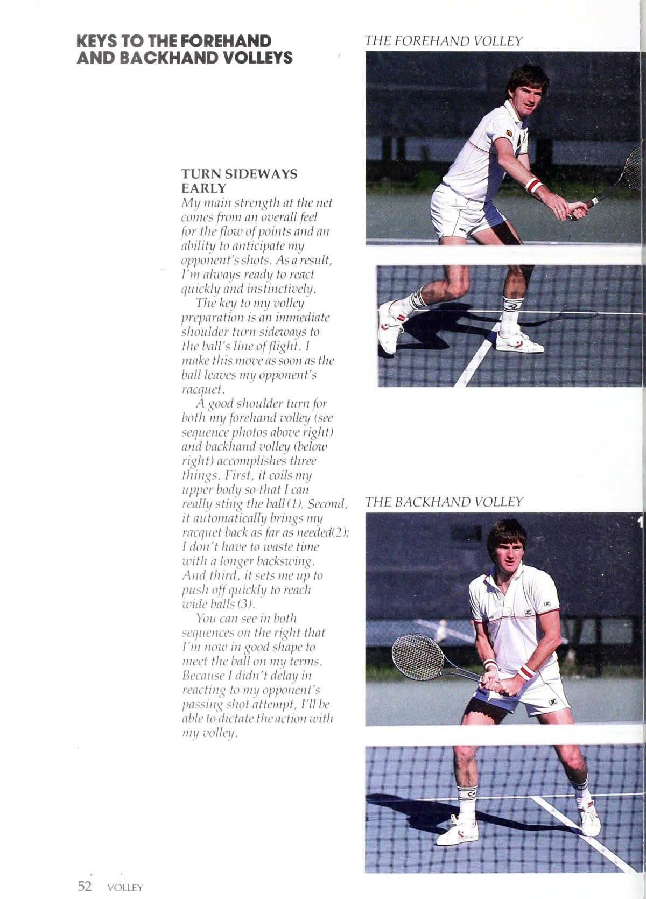
Hình 7: Cú vô-lê thuận tay. Mặt vợt mở nhẹ, bước chân chéo giữ thăng bằng và đưa vợt ngắn gọn xuyên qua bóng thay vì vung tay quá đà.
Thái độ hung hăng: Tôi thích nhặt bất kỳ quả bóng nào cao hơn thắt lưng (phải) và dồn mọi thứ tôi có vào đó để giành chiến thắng cú vô lê.
Tôi thường kết thúc điểm bằng một cú vô lê. Không có sự dễ thương thứ; tôi hoàn thành công việc một cách nhanh chóng.
Bậc thầy chuyền bóng vào lưới qua đêm. Hãy dần dần thực hiện theo phong cách chơi tích cực hơn.
Tôi thích thực hiện một số cú vô lê rắn tối thiểu bất cứ khi nào tôi chạm tới lưới vì cách tiếp cận đó rất phù hợp với phần còn lại của trận đấu của tôi. Thỉnh thoảng tôi sẽ thực hiện cú vô lê góc mềm hoặc thả vô lê, nhưng chỉ khi [ phải gặp bóng dưới mức lưới hoặc khi đối thủ của tôi ở ngoài vị trí.
Nếu trò chơi của bạn thiên về những cú đánh khéo léo hơn, bạn có các lựa chọn khác có thể giúp bạn lên lưới hiệu quả hơn. Ví dụ, Ilie Nastase không thực hiện những cú vô lê nhưng vẫn được đánh giá là một trong những cầu thủ vào lưới giỏi nhất trận đấu.
Tại sao? Anh ấy có một cú giao bóng xuất sắc, đôi tay nhanh nhẹn và phản xạ nhanh. Bởi vì anh ấy đã mở ra sân rất nhiều với những cú giao bóng của mình, anh ấy thường có đủ khả năng để chạm bóng nhiều hơn trong cú vô lê của mình.
Một chìa khóa khác để chơi trên lưới thành công là khả năng dự đoán tốt — cho dù bạn liên tục ép vấn đề từ lưới hay thỉnh thoảng lẻn vào từ đường cuối sân để khiến đối thủ phải đoán mò.
Tôi nghĩ dự đoán giống như cảm nhận về tổng điểm và tình hình trận đấu khi bạn di chuyển vào sân trước của mình. Nói cách khác, biết đối thủ của bạn có thể sẽ cố gắng làm gì (dựa trên khả năng vuốt bóng và vị trí của anh ta trên sân) và di chuyển ở đâu để cắt các góc của anh ta để có một cú chuyền thành công.
Chiến thuật chuyền bóng: Từ trước-tòa án (trái), bạn ổn hình dạng để xác định dòng chảy của điểm. Đó là vì bạn ở gần lên mạng và có kích thước lớn hơn nhiều khu vực tòa án để làm việc. sử dụng \'\) b vậy một tôi tôi tôi tôi d s v h ồ ar sẽ p e lý năm rồi ( , ồ một bạn d c một )
N , g một ồ n g cho le r e iteher Wye y ‘lf J,/ _ góc (3. và 4) hoặc đánh lại ngay dưới chân đối thủ (5).
Dự đoán các cú đánh: Công việc của bạn trên lưới (trái) sẽ đơn giản hơn nhiều nếu bạn có thể phát triển cảm giác về những gì đối thủ của bạn có thể sẽ cố gắng, dựa trên khả năng vuốt bóng và vị trí của anh ta trên sân.
Ví dụ: nếu tôi thực hiện một pha tiếp cận theo góc thực sự khiến đối thủ của tôi phải căng ra ngoài biên, tôi sẽ tìm cách anh ta đi xuống biên bằng cú chuyền của mình. Đó là lựa chọn tốt nhất của anh ấy. Anh ấy sẽ phải thực hiện một pha quay trở lại để lật bóng chéo góc để tìm người chiến thắng. Vì vậy, tôi sẽ điều chỉnh vị trí của mình về phía bên lề để dự đoán khả năng quay trở lại cao hơn. Hầu hết thời gian, tôi sẽ có rất nhiều khoảng sân rộng rãi để tôi có thể thực hiện cú vô lê của mình. Và nếu đối thủ của tôi không thực hiện được cách tiếp cận của tôi trong sân, điều đó sẽ giúp biết được xu hướng sút của anh ta và cách anh ta phản ứng dưới áp lực từ cú lao vào lưới của tôi. Anh ấy có hoảng sợ không? Hay anh ta giữ bình tĩnh, chọn mục tiêu và thực hiện cú đánh của mình? Loại kiến thức này là kết quả của kinh nghiệm thi đấu. Bạn nên nỗ lực thực sự để ghi lại từng mẩu thông tin về những người chơi khác. Cuối cùng, động tác bằng chân có thể giúp bạn thành công hoặc phá vỡ lưới. J luôn giữ
Điểm mạnh chính của tôi trên lưới đến từ cảm nhận tổng thể về dòng điểm và khả năng đoán trước các cú đánh của đối thủ. Kết quả là tôi luôn sẵn sàng phản ứng nhanh chóng và theo bản năng. Chìa khóa để chuẩn bị cho cú vô lê của tôi là ngay lập tức xoay vai sang một bên theo đường bay của bóng. Tôi thực hiện động tác này ngay khi bóng rời vợt của đối thủ. Một cú xoay vai tốt cho cả cú vô lê thuận tay của tôi (xem chuỗi ảnh phía trên bên phải) và cú vô lê trái tay (bên dưới tôi bên phải) hoàn thành được ba điều. Đầu tiên, nó cuộn tôi phần thân trên để tôi có thể tôi thực sự chích bóng(1). Thứ hai, BÓNG CHÁY TRÁI tôi nếu tự động đưa vợt của tôi về xa đến mức cần thiết(2); Tôi không phải lãng phí thời gian với một cú vung vợt sau dài hơn. Và thứ ba, nó buộc tôi phải đẩy nhanh để tiếp cận những quả bóng rộng (3). Bạn có thể thấy trong cả hai chuỗi bên phải rằng tôi hiện đang ở trạng thái tốt để đón bóng theo điều kiện của mình. Bởi vì tôi không chậm trễ trong việc phản ứng với nỗ lực chuyền bóng của đối thủ, tôi sẽ có thể điều khiển hành động bằng cú vô lê của mình.
Sẽ không có nhiều tốc độ.
LIÊN HỆ TRƯỚC KHI
Chuyển động chuyền bóng sẽ như thế nào?
CƠ THỂ CỦA BẠN
Nếu bạn chuẩn bị đúng cách và giữ cho vợt chuyển động trong điều kiện lý tưởng, đầu vợt của bạn phải nhỏ gọn, khiến cho việc tiếp xúc chắc chắn với bóng sẽ hơi di chuyển xuống dưới, theo một góc, khi tiếp xúc. Kiểu đánh này tạo ra một số xoáy xuống dễ dàng. Tôi luôn cố gắng đánh bóng ra phía trước cơ thể của mình (xem ảnh 4 và 5 ở trên và dưới), trước khi bóng và giữ bóng ở vị trí thấp so với mặt sân sau khi bật lên. vượt qua vai trước của tôi. Lý do cho điều đó là Nhưng nếu tôi ở gần lưới và bóng cao hơn thắt lưng, tôi thường sẽ vượt qua nó bằng một cách đơn giản: Khi bóng ở phía sau bạn, bạn có xu hướng mất kiểm soát với cú vô lê của chúng tôi. Chắc chắn, bạn vẫn có thể bị đột quỵ. Tốc độ của kiểu vô lê đó có thể đưa bóng trở lại lưới, nhưng cú vô lê của bạn đủ để giữ bóng ở mức thấp.
KẾT THÚC CÁC BÓNG CHUYỆN CỦA BẠN MỘT CÁCH MẠNH MẼ Mặc dù lượt theo dõi của bạn phải nhỏ gọn Mặc dù tôi không tiếp xúc với nhiều người để bạn có thời gian hồi phục cho cú vô lê tiếp theo, nhưng các cầu thủ câu lạc bộ với tư cách là một chuyên gia giảng dạy trong sự nghiệp đã làm, tôi không nên lừa dối bạn hoặc vì ehittlinfg quả bóng đã khẳng định chắc chắn rằng một vấn đề phổ biến là thiếu bằng cách bắt đầu làm chậm đầu vợt của bạn quá sớm. 1sự hung hăng. Thái độ của tôi là, nếu tôi đánh bóng vào giữa trận đấu của mình, tôi không đủ khả năng để cầm vợt đủ chắc chắn, đối thủ của tôi có thể sẽ không muốn lấy lại bóng trong cuộc chơi, và bạn cũng vậy nếu có thời gian để đánh một cú tấn công, vì vậy tôi sẽ có /bạn đang đối mặt với một đối thủ khó chơi. Vì vậy, tôi tập trung thêm một chút thời gian để hồi phục ở trạng thái sẵn sàng tốt "1 thực hiện từng quả bóng trong các cú vô lê của tôi và chọn một vị trí tốt. Hãy nghĩ như vậy và tôi đảm bảo rằng bạn sẽ làm theo chỉ dẫn đó (6 và 7). ghi được nhiều điểm hơn trên lưới.
Chương 7
Cú Lob Phòng Thủ: Dùng Nó Để Câu Giờ
'Tôi cá là bạn và [ có nhiều điểm chung hơn trong về các trò chơi quần vợt của chúng tôi hơn bạn có thể tưởng tượng. Chắc chắn, cả hai chúng tôi đều yêu thích trò chơi này với tất cả sự phấn khích và hành động, nhưng nếu bạn là một câu lạc bộ điển hình người chơi, có lẽ bạn không sử dụng cú lốp bóng phòng thủ như thường xuyên như bạn nên làm.
[hãy nhớ rằng khi tôi còn là một đứa trẻ lớn lên ở khu vực St. Louis, tôi không sử dụng nhiều diễn đàn lốp bóng phòng thủ. Thành công của tôi dựa trên trò chơi trên mặt đất mạnh mẽ như ngày nay. Và của tôi sức mạnh đủ để thắng nhiều trận đấu của tôi.
Bất cứ khi nào đối thủ đặt tôi vào thế phòng thủ với một phát súng, tôi sẽ luôn cố gắng đáp trả một cách công kích, dựa vào những cú chạm đất của tôi để cứu tôi khỏi rắc rối.
Ngay cả khi còn trẻ, sở thích chơi đùa của tôi môn quần vợt toàn diện, cứng rắn đã ăn sâu vào tâm trí của tôi. Tôi đoán là tôi quá cứng đầu để thừa nhận điều đó đối thủ của tôi đã thắng tôi với tỷ số ngang bằng loạt ảnh đặc biệt.
Nhưng tất cả đã thay đổi phần nào khi tôi chơi quần vợt tại UCLA. Trong năm tôi ở trong đội, huấn luyện viên Glenn Bassett nhấn mạnh tầm quan trọng của cú lốp bóng.
Tất nhiên, tin nhắn đó không phải là tin tức đối với tôi. tôi đã có đã nghe nó nhiều lần trước đây. Nhưng khi huấn luyện viên của bạn buộc bạn phải tập thùy vai trong ngày tập luyện hai chọi một ngày qua ngày, các kỹ năng có xu hướng ở lại với bạn bất chấp chúng ta sự bướng bỉnh.
Ảnh hưởng của huấn luyện viên Bassett, cộng với việc tôi đã chơi những người chơi lớn hơn, khó khăn hơn, nhanh hơn bao giờ hết trước đây, đã giúp tôi nhận ra rằng có những lúc Có những lúc bạn phải gác lại mong muốn chơi một cú đánh mạnh mẽ.
Đưa bóng đi: Vì bóng phải bay rất cao và sâu nên hãy đảm bảo cú đánh xuyên qua bóng hoàn toàn (phải). PA eae reek Khas bạn phải gác lại mong muốn chơi một cú đánh mạnh mẽ và thay vào đó chọn một cú lốp bóng phòng thủ. Ít nhất, với cú lốp bóng, bạn có cơ hội giữ nguyên điểm cho một cú đánh khác, một cơ hội mà bạn có thể không có được nếu cố gắng đạt tỷ lệ phần trăm hoàn vốn thấp hơn.
Mặc dù tôi vẫn thích tung ra những cú đánh quyết liệt bất cứ khi nào có thể, nhưng thông điệp mà tôi học được về cú lốp bóng phòng thủ ở UCLA vẫn còn đọng lại trong tôi. Trên thực tế, sức mạnh của trò chơi trên mặt đất của tôi khiến nhiều đối thủ thiếu kinh nghiệm bỏ qua hoặc đánh giá thấp hiệu quả của cú lốp bóng của tôi. Khi điều đó xảy ra, cú lốp bóng phòng thủ của tôi gần như trở thành một vũ khí tấn công.
Điều quan trọng nhất cần nhớ khi thực hiện một cú lốp bóng phòng thủ là đảm bảo bạn đưa bóng lên cao và sâu. Bạn chỉ đơn giản là đang cố gắng câu giờ để trở lại vị trí tử tế trên sân. Và khi bạn đang cố gắng hết sức để tiếp cận cú đánh của đối thủ, đó là tất cả những gì bạn có thời gian để nghĩ đến.
Nhưng những cầu thủ hàng đầu luôn có mục đích trong mọi cú đánh, kể cả những pha lốp bóng phòng ngự. Ví dụ, khi tôi buộc phải rời khỏi vị trí, tôi thường đánh cú lốp bóng chéo bàn vì hai lý do. Đầu tiên, nó ở trong không khí lâu hơn, Chiến thuật lốp bóng: Luôn cố gắng có mục đích rõ ràng khi bạn lốp bóng. Nếu bạn đang ở ngoài vị trí, hãy lốp bóng chéo sân (trái) để có thêm khoảng trống để đánh cũng như có thêm thời gian để hồi phục.
Cho tôi thêm thời gian để quay trở lại giữa sân sau. Tuy nhiên, khoảng cách bóng di chuyển xa hơn, vì vậy [có nhiều sân hơn để thực hiện cú đánh. Về kỹ thuật vuốt ve, tôi nghĩ rằng hai yếu tố quan trọng nhất là sự chuẩn bị tốt và thực hiện đầy đủ. Nếu bạn quan tâm đến những ưu tiên này, phần còn lại của hành trình sẽ tự động được đưa vào vị trí. Rõ ràng, một yếu tố quan trọng khác trong việc thực hiện một cú lốp bóng tốt là đạt được tốc độ nhanh trước cú đánh của đối thủ. Nếu bạn có thể tiếp cận bóng với một khoảng thời gian dự phòng, độ chính xác của cú lốp bóng của bạn sẽ được cải thiện rất nhiều vì bạn sẽ ít vội vàng hơn. Mặt khác, nếu phản ứng của bạn kém, bạn có thể phải dùng đến một cú búng tay... và một lời cầu nguyện nhanh để chiếc thùy của bạn không bị thiếu hụt. Cách tốt nhất để có được cú nhảy bắt buộc từ cú đánh cưỡng bức của đối thủ là chạy theo hướng thủ công với vợt ở bên cạnh. Nếu bạn lấy lại quá sớm, bạn sẽ giảm tốc độ của mình. Tôi chỉ lấy lại vợt khi tôi đến gần bóng. Ngay cả khi đó, đó chỉ là một cú vung vợt sau ngắn. Mặc dù có cú đánh lùi nhỏ gọn nhưng tôi vẫn có thể đánh bóng hoàn toàn bằng 0 và đưa nó lên cao và sâu. Cú xoay của tôi rất đơn giản và cú đánh của bạn cũng vậy.
Ngay khi tôi thấy cú đánh của đối thủ có vấn đề, tôi xoay người và bắt đầu chạy như một vận động viên chạy nước rút với hai cánh tay dồn dập ở hai bên (xem ảnh 1 bên dưới). Nếu| đã bắt đầu vợt của tôi trở lại quá sớm, tôi sẽ không thể chạy nhanh như vậy.
[chỉ khi tôi đi được vài bước nữa là đến được quả bóng (2) mà tôi bắt đầu vung vợt sau. Chú ý rằng Mắt tôi dán chặt vào quả bóng trong suốt quá trình chuẩn bị chuyện. Bởi vì cú đánh của đối thủ đang di chuyển ra xa từ tôi và theo một góc độ nào đó, tôi cần giữ nó trong lòng điểm tham quan.
Khi tôi đến gần nơi tôi định làm tiếp xúc, cú đánh lùi của tôi đã hoàn tất. Tôi muốn thể hiện (3)
Để việc căn thời gian đánh sẽ không thành vấn đề.
Đưa Vợt Xuyên Qua Bóng
Cú xoay về phía trước của tôi rất mượt mà, từ thấp đến cao (4 và 5). Rất nhiều người chơi đánh các đường lốp phòng thủ của họ với xoáy xuống, có xu hướng làm cho bóng treo trong không khí. Nhưng tôi thích đánh bóng gần như phẳng, ít xoáy. Quan điểm của tôi là: Giữ cú lob đơn giản nhất có thể. Từ vị trí phòng thủ của bạn ngoài sân, bạn không ở trong hình dạng đủ tốt để làm bất cứ điều gì lạ mắt với quả bóng.
Cú lốp phòng thủ lý tưởng sẽ bay cao trên không và tiếp đất ngay bên trong đối thủ của bạn.
Đường cơ sở. Hãy nghĩ xem quả bóng phải di chuyển bao xa để hoàn thành hai mục tiêu đó.
Mục tiêu. Để có được độ sâu như vậy trong cú lốp bóng của bạn, bạn phải vung bóng qua bóng hoàn toàn và không cắt ngắn cú đánh của bạn. Phần tiếp theo của tôi (6 và 7) đóng vai trò như một dấu hiệu cho thấy tôi đã chuyền bóng tốt. Tiếp theo, tôi sẽ nhanh chóng lấy lại vị trí của mình gần giữa sân sau với hy vọng có được cơ hội sút khác.
Chương 8
Cú Đánh Trên Đầu: Ưu Tiên Vị Trí Hơn Sức Mạnh
Nếu bạn giống tôi, thùy phòng thủ là một cảnh tượng đáng hoan nghênh ở bất kỳ thời điểm nào.
Điều đó có nghĩa là bạn đã thành công vượt qua đối thủ của mình bằng một một loạt cú sút đã dồn anh ta vào một góc mà từ đó có ít có cơ hội trốn thoát. Tuy nhiên, công việc của bạn vẫn chưa kết thúc. Bạn vẫn phải kết thúc điểm với chi phí chung của bạn. Chắc chắn nó có vẻ dễ dàng, và bạn có thể nghĩ rằng số tiền đó giống như tiền trong ngân hàng. Nhưng tôi đã thấy nhiều người chơi—ngay cả những người chơi chuyên nghiệp—làm hỏng cú đánh quá cao chỉ vì họ cố gắng làm quá nhiều việc với cú đánh. Trong khi quả bóng đang trên đường rơi xuống, họ có thể nghĩ rằng sẽ ấn tượng biết bao nếu đánh quả bóng ra khỏi sân để nó nảy 10 hàng sâu trên khán đài. Thái độ đó có thể tốn kém.
Tôi thích nghĩ về phần trên của mình giống như một cú đánh kiểu ngựa lao động. Nó không lạ mắt và sẽ không giành được nhiều giải thưởng về sức mạnh, nhưng nó hiếm khi làm tôi thất vọng. Nó đáng tin cậy và hiệu quả. Đó là tất cả những gì tôi cần và chi phí chung. Bạn cũng có thể có thể nâng cấp chi phí của mình bằng cách giảm bớt sự nhấn mạnh vào sức mạnh và thay vào đó tập trung vào vị trí.
Ngoài những điều cơ bản về vuốt ve mà tôi luôn cố gắng tuân theo (xem chuỗi ảnh sau đây), tôi nghĩ chìa khóa lớn nhất dẫn đến thành công cho việc cắt tóc của tôi là sự tỉnh táo và chuẩn bị nhanh chóng. Đối đầu với hầu hết người chơi, tôi có thể nhặt bóng sớm khi nó rời khỏi vợt và bắt đầu di chuyển vào vị trí một cách nhanh chóng. Tuy nhiên, những người chơi khác lại không gửi tín hiệu về cú lốp bóng của họ nhiều như vậy. Họ sẽ chỉ đưa cho bạn một cú búng tay nhẹ để đưa bóng qua người bạn. Đó là nơi mà việc luôn cảnh giác thực sự mang lại lợi ích.
Tất nhiên, biết khả năng của đối thủ và những gì anh ta thích làm trong những điều kiện nhất định cũng có thể giúp bạn có được lợi thế trong tích tắc về thời gian phản ứng. Ví dụ: nếu cú đánh tiếp cận hoặc cú vô lê của bạn đủ tốt để buộc đối thủ của bạn di chuyển theo một góc về phía sau, cách xa đường biên ngang của anh ta, bạn nên nhận ra rằng anh ta không có nhiều cú sút để chuyền bóng cho bạn. Bởi vì đà của anh ta đang ở xa lưới và bóng phải di chuyển rất xa để đến được với bạn, nên bạn có thể thực hiện được cú sút như vậy bằng cú vô lê chiến thắng. Cách đặt cược thông minh duy nhất mà đối thủ của bạn có là một cú lốp bóng, vì vậy bạn nên xem| cho nó.
Vị trí trên cao: Chọn các góc rõ ràng (1 và 2) nhưng vị trí phía sau đối thủ của bạn nếu anh ta đang tranh giành cũng có thể hiệu quả. Ann. \ ôi trên cao là kiểu xoáy mà đối thủ của bạn thực hiện khi lốp bóng. Nếu bóng có xoáy lên, nó sẽ rơi ra khỏi không khí mạnh và nhanh hơn. Vì vậy, đừng đợi đến giây cuối cùng mới mang vợt trở lại nếu không bạn sẽ phải vung vợt quá nhanh. Bạn phải chuẩn bị sớm hơn để đánh một cú từ trên cao từ một cú lốp bóng xoáy lên. Mặt khác, một cú lốp bóng xoáy xuống mang tính phòng thủ có xu hướng lơ lửng trên không, do đó, những cú đánh từ trên cao tốt đòi hỏi bạn phải kiên nhẫn hơn một chút. Tất nhiên, việc chuẩn bị sớm vẫn rất quan trọng, nhưng bạn phải cẩn thận để không bóp cò quá đầu, nếu không bóng có khả năng sẽ chạm vào mép trên của vợt. Trong sức nóng của trận chiến, tôi biết có thể khó kiểm soát được sự háo hức của bạn khi nhìn thấy cú lốp bóng yếu ớt đó bay lên không trung. Những người chơi giỏi hơn sẽ chờ đợi thời cơ của mình và thực hiện những cú lốp bóng với những người chiến thắng ở trên cao gần như thường xuyên. Bạn nên cố gắng phát triển cùng loại thái độ kiên nhẫn, thích kinh doanh. Trong khi kiên nhẫn với những cú đánh đầu của mình, tôi thích đánh bóng trước khi nó nảy lên, miễn là cú lốp bóng không quá sâu. Đó là bởi vì tôi không muốn cho Đối thủ của mình thêm thời gian để có được vị trí trả bóng tốt hơn sau đường cơ sở của anh ta. Không có bất kỳ bí mật tuyệt vời nào để đặt chi phí chung. Hầu hết thời gian, bạn sẽ đánh nó ra xa đối thủ. Ngay cả khi anh ấy có thể chạy xuống bóng, rất có thể anh ấy sẽ không thể làm được gì nhiều với cú trả bóng của mình. Nhưng điều tôi thích làm đôi khi là đánh vào phía sau đối thủ, đặc biệt là trên sân đất nện, bởi vì anh ta có thể sẽ cố gắng che chắn góc trống của sân mình. Anh ấy sẽ gặp khó khăn khi phanh gấp để lấy bóng. Vì vậy, hãy nhớ rằng có hai cách để đạt được mục tiêu. Bạn có thể đi
Chìa Khóa Cú Đánh Trên Đầu — Nâng Vợt Lên & Về Sau Thật Nhanh
Khi đối thủ thực hiện một cú lốp bóng cao mang tính phòng thủ, anh ta đang nói với bạn rằng anh ta đang ở thế lớn.
Rắc rối. Bạn phải phản ứng nhanh chóng và hiệu quả để tận dụng tình hình.
Bước đầu tiên trong việc đánh một cú từ trên cao vững chắc là quay sang một bên theo đường lốp bóng chuyến bay (xem ảnh 1 bên dưới). Sau đó, tôi cầm vợt lên và về sớm – không có thời gian cho một chuyển động kiểu giao bóng đầy đủ—và di chuyển vào vị trí chậm hơn một chút so với nơi tôi nghĩ quả bóng sẽ rơi (2).
Cuối cùng, khi bóng đi vào phạm vi đánh, tôi bắt đầu hướng lên trên đu từ phía sau lưng tôi (3).
Duỗi Người Suốt Quá Trình Tiếp Xúc
Cú đánh từ trên cao là một cú đánh mạnh mẽ, vì vậy bạn phải đuổi theo quả bóng (4) và đón nó với tư thế cơ thể duỗi thẳng hoàn toàn. Nếu bạn đợi bóng xuống quá thấp, bạn sẽ nhận được nhiều đòn bẩy cho cú đánh của mình. Lưu ý trong ảnh 5 rằng động lượng của đầu vợt của tôi khi tiếp xúc với bóng đang tiếp tục tiến về phía trước với tốc độ tốt. Chuyển động của vợt này đảm bảo một trục xoay toàn bộ phần thân trên ¥ giúp tăng thêm: lực từ trên đầu của tôi.
~ Tôi hoàn thành cú đánh đầy đủ theo hướng ngược lại bên cơ thể của tôi (6). cân nặng của tôi là chuyển tiếp vào thời điểm này và tôi sẵn sàng chuyển đến, dự đoán một sự đáp trả yếu ớt từ đối thủ của tôi.
Phần III — Thêm Những Chiều Kích Mới Cho Lối Chơi
Xử lý bóng cao thấp, thay đổi nhịp độ, nhanh hơn trên sân, lên lưới và điều chỉnh theo từng mặt sân.
Chương 9
Cách Xử Lý Những Quả Bóng Cao & Thấp Khó Chịu
Nếu các định luật vật lý đã được thay đổi sao cho mỗi cú đánh trả trong trận đấu đều dội về phía bạn ở mức ngang eo, thì bạn đã làm được, phải không? Rốt cuộc, bạn sẽ khá dễ dàng thực hiện được các cú đánh trên mặt đất nếu tất cả các cú đánh của đối thủ đều đi thẳng vào đường ống. Quả bóng sẽ ở trong vùng đánh lý tưởng và bạn sẽ ở trạng thái cân bằng hoàn hảo. Tất nhiên, đó không phải là những gì xảy ra trên sân. Đối thủ của bạn sẽ không đút thìa cho bạn. Anh ta sẽ cố gắng áp đảo bạn bằng nhiều cú đánh và xoay khác nhau, đồng thời cố gắng khiến bạn chạy điên cuồng từ góc này sang góc khác. Và bởi vì ngày nay có rất nhiều người chơi giỏi, cả chuyên nghiệp lẫn nghiệp dư, điều cần thiết là bạn phải hoàn thiện các cú đánh của mình. Nếu bạn đang tìm cách tăng cường khả năng tấn công mặt đất của mình, lời khuyên của tôi là hãy chăm chỉ thực hiện các pha trả bóng cao và bóng thấp. Tôi nghĩ rằng chỉ riêng việc thực hành trong hai lĩnh vực này có thể nâng cao kỹ năng của bạn một cách nhanh chóng. Dưới đây là những gì tôi coi là thiết yếu của. hai loại lợi nhuận. > Ra đòn thấp: Luôn chơi đòn thấp với mục đích rõ ràng. Xuống đến mức bóng (ở trên) và sau đó làm theo hoàn toàn
Trên cảnh quay.
Xử lý người đánh bóng cao: Thực hiện động tác vung vợt về phía sau cao (1), giữ tay cầm chắc chắn (2) và nghiêng người vào cú đánh (3)
Bóng Nảy Cao: Ngả Người Vào Cú Đánh
Khi tôi bắt đầu thăng cấp ở cấp cơ sở, hầu hết những người chơi cùng tôi—chẳng hạn như Dick Stockton, Roscoe Tanner, Brian Gottfried, Sandy và Gene Mayer—đều thích đánh bóng phẳng hoặc cắt lát.
Tuy nhiên, không lâu sau khi đạt đến trình độ chuyên nghiệp, tôi đã được làm quen với những cú đánh chạm đất cực đỉnh của Bjorn Borg và Guillermo Vilas. Những pha trả bóng cao của họ yêu cầu tôi phải thực hiện một số điều chỉnh trong các cú đánh của mình. Tôi cố gắng thực hiện cú đánh của họ ở độ cao ngang eo bất cứ khi nào có thể để trở nên hung hãn. Nhưng đôi khi, tôi phải trả bóng cho họ ở độ cao ngang vai.
Những điều cơ bản mà tôi đã tuân theo để biến lợi nhuận cao thành sức mạnh tấn công của tôi có thể mang lại điều tương tự cho bạn. Họ đây rồi.
Điều cần thiết đầu tiên trong việc xử lý một quả bóng có độ nảy cao là động tác vung vợt ra sau giúp đặt đầu vợt của chúng ta cao hơn một chút so với mức mà bạn dự định tiếp xúc với bóng (xem chuỗi ảnh ở trên). Nếu bạn cố gắng thực hiện xoáy lên lên quả bóng ngang tầm vai bằng cách bắt đầu với một cú vung vợt về phía sau thấp, thì bạn đang mắc sai lầm. Không đời nào bạn có thể bắn được với bất kỳ tốc độ nào.
Tiếp theo, đừng phản ứng phòng thủ với người đá. Hãy quyết liệt và đuổi theo quả bóng bằng cách nghiêng người vào cú đánh. Xoay về phía trước một góc để chạm vào quả bóng phía trước cơ thể bạn và tạo cho nó một chuyển động chắc chắn. Đường xoáy xuống mà bạn sẽ đặt vào quả bóng với cú xoay người như vậy sẽ giữ bóng ở vị trí thấp hơn phần sân của đối thủ Tôi cũng nhận thấy rằng việc giữ vợt chắc chắn khi tiếp xúc là điều đáng giá, đặc biệt là đối với những cú đánh bằng một tay, bởi vì lực xoáy mạnh của người đá có thể khiến vợt bị lỏng. Đó có lẽ là lý do tại sao những cú trả bóng trái tay bằng hai tay cao của tôi lại gây khó chịu hơn những cú thuận tay của tôi. Bàn tay phụ mà tôi cầm giúp giúp ổn định vợt khi tiếp xúc.
Về vị trí, khả năng chơi có lợi nhuận cao mang lại cho tôi một số lựa chọn mà tôi có thể dựa vào trong các tình huống áp lực. Nếu tôi ở gần đường cuối sân, tôi có thể đẩy bóng sâu để chuẩn bị cho cú trả bóng tiếp theo. Và nếu tôi ở trong sân, [ có thể hướng bóng tới góc hoặc góc ngắn.
Bạn có muốn có một vũ khí như vậy trong kho vũ khí của mình không? Thực hành và làm việc chăm chỉ là câu trả lời. Đừng để những người chơi topspinner và moonballers đánh bại bạn!
| Vì xung quanh có rất nhiều người chơi giỏi tôi ngày nay, điều cần thiết là phải hoàn thiện các nét vẽ của bạn.
Bóng Sát Sân: Hạ Thấp Người & Đánh Ra
Vài năm trước, khi xoáy lên là từ thông dụng trong quần vợt chuyên nghiệp, hiệu quả của cú đánh xoáy xuống ôm sát mặt sân sau khi nó nảy lên phần lớn bị bỏ qua, đặc biệt là bởi người hâm mộ. Nhưng với sự trở lại của phong cách chơi giao bóng và vô lê và mạnh mẽ hơn, cú đánh cắt lát đã trở nên phổ biến hơn, ngay cả ở cấp câu lạc bộ. Cách hiệu quả nhất để trả bóng thấp là gì? Tôi ước gì có thể nói với bạn rằng có một cách dễ dàng để có được bức ảnh như vậy. Nếu có, chắc chắn cuộc sống của tôi sẽ dễ dàng hơn rất nhiều trong chuyến lưu diễn. Nhưng nỗ lực chính là chìa khóa để thực hiện thành công cú đánh ở tầm thấp. Và bước đầu tiên trong nỗ lực đó là cúi xuống đón bóng bằng cách uốn cong đầu gối và thắt lưng (xem chuỗi ảnh bên dưới). Một trong những mục tiêu đầu tiên của tôi khi trả bóng thấp là cúi đầu đủ thấp để tôi có cùng quan điểm khi theo dõi quả bóng tiếp cận giống như khi tôi thực hiện một cú đánh ngang thắt lưng. Điều đó giúp tôi căn thời gian cho cú swing của mình dễ dàng hơn. Trong khi cúi người xuống để chạm bóng, tôi chuẩn bị sớm bằng cách xoay vai sang ngang lưới và thực hiện động tác vung vợt về phía sau nhỏ gọn. Nếu bạn sử dụng một cú vung vợt sau lớn, giật cho những quả bóng ngang thắt lưng, bạn có thể sẽ thấy rằng mình mắc nhiều lỗi hơn ở những cú trả bóng thấp bởi vì cú đánh ngược như vậy sẽ khó kiểm soát hơn khi bạn cúi người xuống để đánh. Điều quan trọng nữa là phải theo dõi đầy đủ sau khi bạn đã liên lạc chắc chắn để có chiều sâu và tốc độ tốt. Một cú xoay ngắn, giật thường tạo ra kiểu đánh yếu, bay bổng mà một người chơi hung hãn sẽ nhảy qua. Cuối cùng, nhanh chóng vào vị trí để thực hiện cú đánh thấp. Tôi luôn thấy rằng việc chuẩn bị sớm sẽ giúp tôi đánh bóng có mục đích. Đó là tên trò chơi của tôi. Hãy biến nó thành thương hiệu của bạn nữa.
Thay đổi tốc độ với rủi ro thấp: Tôi sử dụng các cú đánh từ ngoài vào trong (trái tay ở trên) giống như một vận động viên ném bóng chày. Kết hợp chúng với những cú đánh mạnh mẽ để khiến đối thủ mất thăng bằng.
Chương 10
Thay Đổi Nhịp Độ Để Đối Thủ Luôn Phải Cảnh Giác
Trong những năm tháng vĩ đại của mình trong môn quyền anh, Muhammad Ali từng nói: “Chỉ có kẻ ngốc mới không sợ kẻ điên”. Tôi luôn nhớ lời nhận xét đó. Trên thực tế, trên sân quần vợt, tôi đã nghĩ mình là kiểu người điên mà Ali đang nói đến - điên rồ cả về lối chơi lẫn thái độ của tôi. Trong phần lớn sự nghiệp của tôi, toàn bộ cách tiếp cận của tôi chỉ là tiến về phía trước. Đó là cách tôi thích chơi và những gì mọi người đến xem. Tóm lại là tôi chơi liều lĩnh. Vì vậy, cho đến vài năm trước, tôi chỉ chơi ở một tốc độ duy nhất. Tôi luôn đánh ra bằng sức mạnh. Mọi thứ đều nhấp chuột. Tôi còn trẻ và có nhiều tự tin vào trò chơi của mình đến mức tôi có thể đi với tốc độ này trong bốn giờ nếu [phải. Ngay khi bắt đầu trận đấu, tôi cố gắng nhảy lên trên đối thủ và liên tục tấn công anh ta. Tôi sẽ không buông xuôi. Nhưng bạn có thể nhận thấy rằng trò chơi của tôi đã thay đổi một chút trong một hoặc hai năm qua. Thỉnh thoảng tôi đã học cách kết hợp nó để thay đổi tốc độ. Tôi cảm thấy bây giờ tôi có thể chờ đợi thời gian của mình nhiều hơn trong một trận đấu, vì vậy tôi không bắt đầu trận đấu với đối thủ với tốc độ vội vã và mạnh mẽ như vậy. Thay vào đó, tôi theo diễn biến trận đấu một lúc và tìm hiểu đối thủ trước khi bật sức mạnh thực sự. Có lẽ bạn đang nghĩ rằng sự thay đổi trong triết học có thể là kết quả của tuổi già. Nhưng tôi không nhìn sự việc theo cách đó. Trò chơi của tôi vẫn dựa trên sức mạnh thô. Nếu tôi có cơ hội giành được một điểm bằng một cú chạm bóng dễ thương hoặc một cú đánh lái chắc chắn, bạn biết tôi sẽ chọn cái nào. Xét về phong cách và thái độ, tôi vẫn là một chiếc xe trẻ; Tôi vừa trải qua bốn động cơ trong sự nghiệp của mình. Vì vậy, kinh nghiệm nhiều năm tham gia chuyến lưu diễn đã dạy tôi thêm một số khía cạnh mới vào trò chơi của mình để giữ cho động cơ mà tôi hiện có hoạt động trơn tru. Bây giờ, tôi đang thay đổi tốc độ thường xuyên hơn một chút và sử dụng sự đa dạng trong các bức ảnh của mình. Tôi cũng mất nhiều thời gian hơn để ổn định giữa các điểm. Nhìn chung, tôi cho rằng đó là một cách tiếp cận tốt mà bất kỳ cầu thủ có kinh nghiệm nào cũng nên áp dụng, đặc biệt là ở cấp câu lạc bộ. Nó chỉ là một phần của quá trình học tập. Bạn nên khôn ngoan hơn khi bạn già đi. Kiên nhẫn là một trong những chìa khóa để thay đổi một trò chơi dựa quá nhiều vào
Các kích thước bổ sung: Thỉnh thoảng, tôi sẽ thực hiện một cú thả bóng (phía trên bên trái) để thiết lập một người chiến thắng và đánh một người giật bóng cao khi tôi đang ở một điểm (phải).
Quyền lực. Các con tôi, Brett và Aubree Leigh, đã góp phần rất nhiều trong việc giúp tôi phát triển tính kiên nhẫn. Họ đã dạy tôi cách tiết chế cảm xúc của mình. Và cùng với sự kiên nhẫn đó đã trở nên đa dạng hơn một chút. Tôi trộn lẫn các cú đánh của mình và không lúc nào cũng đánh bóng với cùng một tốc độ... không chỉ là bùm, bùm, bùm. Thay vào đó, đôi khi tôi tìm kiếm sự kiểm soát nhiều hơn. Tôi nghĩ đó là một trong những lý do dẫn đến thành công của tôi. Tôi đã tự tạo cho mình nhiều cơ hội hơn trong các cú đánh, đôi khi có nhiều sai sót hơn.
Ba cú đánh mà tôi sử dụng để thay đổi tốc độ trong các điểm là những cú đánh từ ngoài vào trong, những cú giật cao với một chút xoáy lên và những cú đánh thả. Hai cái đầu tiên là những cú đánh có tỷ lệ phần trăm cao đối với tôi và cái thứ ba, mặc dù nó rủi ro hơn nhưng có lẽ không nguy hiểm như thường lệ vì những tình huống mà tôi sử dụng nó.
Ee ies là một trong những chìa khóa để thay đổi trò chơi dựa trên nhiều về quyền lực.
Những cú đánh từ ngoài vào trong của tôi (Chương 20) giống như những quả bóng cong mà đôi khi tôi ném vào bằng những quả bóng nhanh hoặc những cú đánh trên mặt đất rắn. Thay vì lái thẳng qua quả bóng, tôi vung vợt sao cho đầu vợt của tôi lướt qua mặt sau của quả bóng với một chuyển động cắt ngang. Kết quả là một cú đánh xoáy chuyển động chậm hơn, uốn cong khi nó bay qua lưới và nảy theo góc. [thường thực hiện cú đánh từ khoảng giữa đường biên ngang của tôi, để tôi có thể trượt bóng vào một trong các góc của đối thủ và buộc anh ta ra khỏi sân. Thông thường, nó sẽ mang lại cho tôi một cơ hội lớn để thực hiện cú đánh tiếp theo. Cú đánh thay đổi tốc độ thứ hai mà tôi thỉnh thoảng dựa vào là một cú giật bóng cao mà tôi đánh theo cách tương tự như một cú lốp bóng tấn công (Chương 18). Tôi nghĩ rằng tôi thực sự đã bắt đầu sử dụng nó vài năm trước tại giải Pháp mở rộng trên mặt sân đất nện chậm. Trên thực tế, tôi nhớ rằng trong vài lần đầu tiên thử móc, tôi đã cảm thấy xấu hổ. Tôi tự nhủ: "Trời ạ, sao mình có thể làm được điều đó? Mình không được phép chơi như vậy! Đó không phải là trò chơi của mình." Sau đó, tôi ra ngoài và thấy Bjorn Borg, Guillermo Vilas, Ilie Nastase và một loạt người khác làm điều đó năm hoặc sáu lần một điểm. Phải mất khá nhiều thời gian để người giật bóng cảm thấy thoải mái trong trò chơi của tôi. Bây giờ, khi tôi đang trong một pha đánh bóng dài, đặc biệt là khi tôi mệt, tôi cũng sẽ sử dụng cú giật để thay đổi tốc độ một cách mạnh mẽ. Nó giúp tôi có thêm một chút thời gian để vào vị trí tốt cho cú đánh tiếp theo và nó giúp tôi lấy lại nhịp thở. Tôi không đánh bóng với chuyển động xoáy lên quá mức. Tôi chỉ nhấc bóng lên với một chút xoáy lên vì điều đó làm giảm nguy cơ đánh sai hướng. Cú đánh thả bóng (Chương 21) là cú đánh thay đổi tốc độ khác của tôi, nhưng tôi không thực sự sử dụng nó để giành điểm hoàn toàn như hầu hết người chơi. Đó là bởi vì tôi không có khả năng cảm nhận đáng kinh ngạc như John McEnroe hay Nastase. Tôi nghĩ đó là phẩm chất bẩm sinh của bạn. Bạn không thể học cách phát triển nó. Nhưng tôi cảm thấy nếu đối thủ của tôi quay lại hàng rào, tôi có thể tung ra một cú sút khá tốt và vẫn vượt qua được. Thông thường, người bên kia lưới sẽ khó có thể chạm tới bóng, vì vậy tôi sẽ theo dõi cú đánh thả bóng bằng một cú trả bóng khác mà tôi hy vọng sẽ là người chiến thắng. Tôi sử dụng cú thả bóng nhiều hơn để thiết lập một điểm hơn là giành chiến thắng ngay lập tức. Khi tôi chơi ngày càng nhiều trong giải đấu, tôi đang thử nghiệm nhiều hơn một chút với việc thay đổi tốc độ trong các cuộc biểu tình. Tất nhiên, chiến lược cơ bản của tôi vẫn đơn giản: Tôi đánh những cú đánh mạnh từ đường cuối sân. Thỉnh thoảng thay đổi tốc độ trong những cuộc biểu tình kiểu đó có thể khiến đối thủ giật mình. Rất nhiều người chơi không quen với việc nhìn thấy điều đó từ tôi, vì vậy điều đó có thể gây ra một chút do dự cho họ khi họ quay trở lại. Cách tiếp cận tương tự có thể có hiệu quả với bạn. Tôi biết mình sẽ không giành được nhiều điểm khi thực hiện cú đánh thay đổi nhịp độ
Chương 11
Cách Nhanh Hơn Trên Sân
Thỉnh thoảng, tôi nghe các nhà văn quần vợt so sánh động tác chân của tôi với Ken Rosewall. Tôi không biết sự so sánh đó có phù hợp không vì tôi chưa bao giờ thực sự theo dõi động tác của anh ấy. Bất cứ khi nào tôi chơi Rosewall, tôi quá bận đuổi theo quả bóng mà không chú ý nhiều đến cách anh ấy di chuyển trên sân. Nhưng tôi sẽ nói điều này: Anh ấy dường như luôn ở vị trí tốt. Anh ấy hiếm khi đánh bóng mất thăng bằng. Tôi thường có thể đến bóng đủ sớm để chuẩn bị cho những cú đánh của mình. Trên thực tế, tôi nghĩ động tác bằng chân là một trong những chìa khóa lớn nhất tạo nên sức mạnh trong trò chơi trên mặt đất của tôi. Không có bí mật lớn nào về cách tôi di chuyển đôi chân của mình trên sân tennis. Tôi chỉ cần nhặt chúng lên và đặt chúng xuống và đảm bảo rằng chúng không bị vướng vào quá trình này. Tôi cũng phải thừa nhận rằng tôi chưa bao giờ theo một chương trình chạy bộ hay thực hiện bất kỳ động tác nâng tạ nào để cải thiện động tác chân của mình. Đó là 100 phần trăm tự nhiên. Tôi thấy rằng vì tôi chơi nhiều trận đấu trong giải đấu nên khối lượng công việc tôi nhận được rất nhiều để giữ cho động tác chân của tôi luôn nhạy bén. Tuy nhiên, vào những ngày nghỉ, tôi đảm bảo thực hiện một số bài tập nhanh nhẹn sau mỗi ngày luyện tập để giữ vững lợi thế đó. Vì có thể bạn không chơi tennis nhiều như tôi nên bạn có thể muốn thử các bài tập động tác bằng chân mà tôi mô tả ở trang 82 và thậm chí biến chúng thành một phần thói quen tập luyện thường xuyên của bạn. Dưới đây là một số suy nghĩ khác của tôi về tầm quan trọng của động tác chân tốt trong một trận đấu quần vợt giành chiến thắng. Đầu tiên, tôi nghĩ các cầu thủ đang mắc sai lầm nếu họ cảm thấy tốc độ thô là 'chìa khóa duy nhất để có động tác chân tốt'. Chắc chắn, nó có thể hữu ích, đặc biệt khi bạn phải ‘đuổi theo một quả bóng ở góc đối diện. Nhưng bạn hiếm khi phải chạy quá 10 yard ngoài kia và hầu hết thời gian, bạn thậm chí không cần phải chạy xa đến thế. Vấn đề với tốc độ thô là nó liên quan đến việc thực hiện những bước tiến dài. Và khi bạn sải những bước dài, thật khó để thực hiện những điều chỉnh nhỏ nhưng quan trọng ở vị trí khi bạn đến gần quả bóng. Việc dừng lại nhanh chóng và đảo ngược hướng cũng rất khó khăn. Vì vậy, bạn sẽ thực sự bị tổn thương trong trận đấu nếu chỉ dựa vào những bước tiến dài để thực hiện các cú đánh. =
Khi tôi về nhà trong thời gian nghỉ giải lao để cải thiện sự nhanh nhẹn và lịch thi đấu của bạn, tôi không coi trọng sự nhanh nhẹn, hai điều bạn nên làm bằng chân. Sau khi luôn làm việc trên thực tế. luyện tập, thỉnh thoảng tôi sẽ nhảy dây. Hãy tự mình thử các bài tập. Họ sẽ giữ cho bánh xe nguyên hình dạng hoặc làm bạn kiệt sức sau khi luyện tập tốt, những bài tập mà tôi đã trình bày trước tòa nhưng bạn sẽ sớm thấy những lợi ích trong sơ đồ bên dưới. Họ đã thiết kế các trận đấu của bạn.
Bài Tập Di Chuyển Chân Chéo Sân & Chạy Nước Rút Toàn Diện
Sử dụng các đường của sân tennis, để thực sự có được máu chảy sau khi dễ dàng sắp xếp các bài tập của riêng bạn để luyện tập, một vài cơn gió chéo sân sẽ đẩy nhanh bước chân của bạn. Tôi thích sử dụng cái mà bác sĩ đã yêu cầu. được hiển thị trong sơ đồ ở trên bởi vì nó Bắt đầu từ chữ “’T” của đường dịch vụ kết hợp chạy nước rút, xáo trộn và (xem sơ đồ ở trên), tôi chạy nước rút đến bàn đạp lùi theo một mô hình đầy thử thách. đường biên đánh đơn, chạm vào nó, sau đó chạy. Đầu tiên, tôi di chuyển sang một bên từ mặt chéo sang mặt đánh đơn đối diện - tâm của đường cơ sở đến vạch đánh đơn và chạm vào tt. Tôi tiếp tục chạy nước rút từ bên lề. Sau đó, tôi chạy nhanh đến đường biên giao bóng để sang đường biên như thế này cho đến khi tôi có được đường biên và di chuyển chéo bàn về phía đối phương. trang web bên lề. Từ đó, tôi quay trở lại đường cơ sở và theo dõi điều đó bằng một Chạy nước rút thường xuyên ———————— — ————————————_ Tôi nghĩ tốt hơn là bạn nên nhanh chóng và sự nhanh nhẹn hơn là tốc độ thô.
Mặc dù thật tốt khi có một chút tốc độ, nhưng tôi nghĩ tốt hơn hết là bạn nên có sự nhanh nhẹn và linh hoạt. Và đó là lúc mà sự dự đoán xuất hiện, ít nhiều phụ thuộc vào việc quả bóng sẽ đi đến đâu ngay cả trước khi đối thủ của bạn đánh nó. Nếu bạn có thể đoán trước cú đánh của đối thủ, sau đó bạn có được bước nhảy quan trọng khi thực hiện bước đầu tiên để chạy xuống bóng. Từ kinh nghiệm của riêng tôi, tôi có thể nói với bạn rằng bước đầu tiên của bạn, nếu nhanh, thường là sự khác biệt giữa việc tiếp cận bóng đủ sớm để chuẩn bị cho một cú đánh chắc chắn hoặc cố gắng tranh giành như ‘điên cuồng chỉ để lấy vợt vào bóng. Thực hiện bước đầu tiên nhanh chóng đó đòi hỏi rất nhiều sự phối hợp và phản xạ tốt. Đầu tiên, mắt bạn phải nhặt bóng ngay từ vợt của đối thủ. Sau đó, bộ não của bạn phải ra lệnh cho cơ bắp của bạn di chuyển. Đôi mắt, tâm trí và cơ thể của bạn đều phải làm việc đồng bộ với nhau. Ngoài ra, bạn phải thư giãn để mọi thứ diễn ra tự nhiên. _ tôi nghĩ rằng khả năng nhảy bóng nhanh đã giúp ích cho tôi trong nhiều trận đấu trong sự nghiệp. Ngay cả khi thực hiện những cú đánh khó nhất, tôi thường không phải sử dụng nhiều hơn hai hoặc ba sải chân dài. Điều đó đủ để giúp tôi có thể sử dụng những "bước nhỏ, chắc chắn tạo thành nền tảng cho bước chân của tôi trên sân. Chúng nhỏ gọn, giống như phần còn lại của trận đấu của tôi. __ Nếu bạn xem tôi trong một trận đấu, bạn sẽ thấy rằng tôi luôn di chuyển chân của mình trong suốt một pha đánh bóng. Đôi khi, tôi sẽ nhấc chúng lên và đặt chúng xuống chỉ cách vị trí của chúng vài inch. Nhưng điều đó không lãng phí chuyển động và năng lượng. Chuyển động liên tục có những lợi thế nhất định. Nó giữ trọng lượng của tôi trên các quả bóng của tôi." chân nên tôi luôn chuẩn bị sẵn sàng; nó cho phép tôi thực hiện những điều chỉnh rất nhỏ nhưng quan trọng ở vị trí cơ thể ở giây cuối cùng để có những cú đánh chắc chắn hơn và nó giúp tôi dễ dàng đẩy ra và đảo ngược hướng sau khi đánh bóng _ Tôi thành thật mà nói rằng sau ngần ấy năm, đôi chân của tôi chưa bao giờ làm tôi thất bại trong một trận đấu. Họ tiếp tục di chuyển, tôi tiếp tục chiến thắng. Hãy tập luyện bằng động tác bằng chân để đôi chân của bạn không bị trượt trong các trận đấu.
| | |.euL R ee
Chương 12
Những Chìa Khóa Để Lên Lưới
Abels có thể bị đánh lừa khi mô tả phong cách của một tay vợt trong quần vợt. Ví dụ, khi đề cập đến thuật ngữ “người đánh cuối sân/”, mọi người có xu hướng nghĩ đến một cầu thủ ở lại và đánh những cú chạm đất cả ngày, hiếm khi tấn công vào lưới. Nhưng cũng giống như trò chơi ngày nay đã phát triển theo hướng thiên về phong cách chơi toàn sân, các trò chơi của hầu hết các vận động viên ném bóng thành công nhất, bao gồm cả tôi, cũng vậy. Chắc chắn, tôi đã giành chiến thắng trong các trận đấu ở sân sau trước trận đấu hay nhất trong sự nghiệp của mình. Nhưng tôi chưa bao giờ cảm thấy bị mắc kẹt ở đó. Tôi luôn tìm kiếm cơ hội để lên lưới. Trên thực tế, tôi nghĩ một số chiến thắng lớn nhất của tôi tại U.S. Open và Wimbledon là kết quả trực tiếp của triết lý này. Lấy trận chung kết US Open năm 1976 của tôi gặp Bjorn Borg làm ví dụ. Trên thực tế, tôi đã thực hiện một đường dẫn tới lưới ở những điểm quan trọng. Ở khả năng tốt nhất của mình, Borg có thể khiến đối thủ bị ghim vào hàng rào phía sau bằng những cú đánh xoáy xuống đất nặng nề của mình. Nhưng cú trả bóng xoáy lên của anh ấy bắt đầu giảm dần trong trận đấu đó, cho phép tôi di chuyển vào, nhận bóng ở độ cao ngang vai khi đi lên, đẩy chúng lùi sâu để giúp anh ấy tiếp tục chạy và giành danh hiệu. Kể từ đó, tôi nhận thấy mình đang cảm nhận được cơ hội lên lưới tốt hơn những ngày đó. Có hai lý do. Đầu tiên, tôi không còn là một thanh niên nữa. Tôi đang tìm cách rút ngắn số điểm để giúp mọi việc dễ dàng hơn một chút với tôi trong suốt một trận đấu dài. Thứ hai, các cầu thủ ngày nay to lớn hơn, khỏe hơn và nhanh hơn. Toàn bộ trò chơi đã thay đổi kể từ lần đầu tiên tôi bắt đầu chơi. Ngày nay, bạn cần một trò chơi toàn sân nhiều hơn để trở thành người chiến thắng liên tục. Ở cấp độ câu lạc bộ, tôi chắc chắn rằng tiêu chuẩn chung của các trận đấu cũng theo xu hướng cải thiện tương tự. Bạn chắc chắn đang trực tiếp khám phá ra điều đó trong chiến hào. Vì vậy, tôi khuyên bạn nên cố gắng trở nên quyết liệt hơn ngay từ đường cơ sở, vì [phải dẫn trước đối thủ một hoặc hai bước. Dưới đây là một số suy nghĩ có thể giúp bạn tấn công thành công hơn trên sân. Trừ khi bạn là người giao bóng và chuyền bóng phải vào lưới một cách tự nhiên
VÀO MẠNG
| Dic toàn bộ trò chơi đã thay đổi. Hôm nay, bạn cần giống một trò chơi toàn sân hơn để trở thành người chiến thắng liên tục.
Nhanh chóng bị chậm lại sau việc giao hàng của bạn, bạn sẽ phải làm việc chăm chỉ hơn một chút và lâu hơn một chút để tạo ra các cơ hội để bạn tiến vào từ đường cơ sở. Điều đó đòi hỏi một chút kiên nhẫn, cộng với sự tỉnh táo liên tục, để bạn không ngủ quên trong những pha bóng kéo dài ở sân sau, đặc biệt là trên sân đất nện. Có quá nhiều người chơi rơi vào cái bẫy đó. Không có bí mật lớn nào về cách tôi tiến lên mạng. Tôi chỉ đơn giản sử dụng các cú đánh mặt đất của mình để di chuyển đối thủ qua lại phía sau đường biên của anh ta và tôi hy vọng sẽ tạo ra một cú trả bóng yếu để tôi có thể nhảy lên, đánh một cú đánh tiếp cận và tiến đến khu vực sân giao bóng gần lưới. Những cú đánh mà tôi luôn chú ý là những quả bóng ngắn và những quả bóng nổi, những cơ hội kiểu sách giáo khoa để di chuyển với điều kiện bạn có tư duy tấn công. Và bất kể tôi đang chơi với ai, tôi biết những cơ hội này sẽ xảy ra trong mọi trận đấu. Nói chung, tôi sẽ ép họ bằng một loạt cú đánh chắc chắn. Nhưng tôi cũng có thể tin tưởng vào một vài cú đánh sai của đối thủ sẽ cho tôi cơ hội tấn công. Tôi chưa bao giờ là người từ chối những món quà đó, và bạn cũng vậy. Khi tôi không di chuyển với những quả bóng ngắn và đánh những cú đánh tiếp cận chúng hoặc nhặt những vật bay lơ lửng trên không bằng những cú đánh kiểu vô lê nhỏ gọn (xem Chương 17), tôi sẽ tìm một cách khác để tiếp cận lưới. Làm sao? Bằng cách lẻn vào. Vì tôi không phải là người chơi giao bóng và bắt vô lê nên yếu tố bất ngờ trong tấn công vào lưới là rất quan trọng. Tôi đảm bảo rằng đối thủ của tôi luôn đoán được những gì tôi sắp làm. Kinh nghiệm đóng vai trò quan trọng quyết định sự thành công của chiến thuật này. Bạn phải phát triển gần như giác quan thứ sáu về nó. Ví dụ: bạn có thể có cảm giác rằng đối thủ đang nới lỏng trong một thời điểm hoặc ít nhiều hít thở nếu tốc độ trao đổi của bạn ổn định. Đó là lúc tôi có thể cố gắng làm anh ấy giật mình. Sau khi đánh bóng, tôi sẽ do dự cho đến khi thấy anh ấy thực hiện cú đánh của mình rồi nhanh chóng di chuyển để cắt bóng. Nếu anh ấy không nhìn thấy tôi lao vào, tôi sẽ có cơ hội tốt để thực hiện cú vô lê chiến thắng. Và nếu anh ta nhìn thấy tôi qua khóe mắt trước khi đánh bóng, anh ta có thể cố gắng thay đổi nhanh hướng đánh và đánh sai. Tôi nghĩ cách tiếp cận này sẽ hiệu quả ở cấp câu lạc bộ bởi vì các cầu thủ có thể thực sự bối rối trước áp lực như vậy. Phải thừa nhận rằng, việc do dự ở vạch cuối sân và lẻn vào lưới sau một cú đánh không phải là cách phổ biến nhất để tấn công trong một thời điểm. Nhưng nó có hiệu quả. Vì vậy, nếu bạn muốn đi trước đối thủ cạnh tranh một hoặc hai bước, hãy nhớ theo dõi lưới bất cứ khi nào bạn có cơ hội tốt. Đừng quên thỉnh thoảng lẻn vào nhé. Bạn sẽ bỏ đi với một số điểm dễ dàng.
Chương 13
Điều Chỉnh Lối Chơi Cho Phù Hợp Từng Mặt Sân
| Kích thước của một sân tennis dành cho đấu đơn là 36 feet x 78 feet. Tuy nhiên, mặc dù những phép đo đó không bao giờ thay đổi, một sân tennis vẫn phải được xếp hạng ngay trên đó là một trong những bề mặt thi đấu dễ thay đổi nhất của thế giới thể thao. Lý do? Mặc dù bạn luôn cạnh tranh với đối thủ trên một phần lãnh thổ nhỏ, nhất quán được bao quanh bởi đường biên và đường cơ sở, nhưng thành phần của bề mặt chơi đó có thể thay đổi đáng kể. Để bắt đầu, có ba loại bề mặt sân—cỏ, đất sét hoặc đất sét nhân tạo (như Har-Tru) và cứng (nhựa đường hoặc bê tông). Tiếp theo, mỗi sân, kể cả những sân cùng loại, đều khác nhau về tốc độ. Ví dụ, đất sét đỏ chắc chắn là bề mặt chơi chậm nhất, nhưng nó có thể được làm cho chơi chậm hơn bằng cách bổ sung thêm độ ẩm cho nó. Và sân cứng có thể được làm trơn hơn cỏ hoặc chậm như đất sét bằng cách thay đổi thành phần và/hoặc kết cấu của lớp “sơn” trên cùng. Ngoài tất cả các biến số đó, thực tế là sân có thể được xây dựng trong nhà cũng như ngoài trời và bạn có thể bắt đầu đánh giá cao nhiều điều chỉnh phải được thực hiện liên tục bởi những người chơi quần vợt muốn thể hiện tốt nhất. Họ phải đủ linh hoạt để sửa đổi phong cách chơi của mình cho phù hợp với các bề mặt sân khác nhau. Trong những năm gần đây, tôi thấy ngày càng nhiều người chơi chuyên nghiệp thêm yếu tố đó vào tôi tính linh hoạt cho trò chơi của họ. Tôi tin rằng ngày này đã được đánh số cho những “chuyên gia”, những người chơi tạo dựng tên tuổi cho mình bằng cách chơi phần lớn thời gian trên các bề mặt có lợi cho trò chơi của họ. Các chuyên gia giờ đây đã được hoàn thiện hơn bao giờ hết và tôi chắc chắn rằng xu hướng này cũng sẽ lan rộng xuống cấp độ Toots cỏ của trò chơi. Bạn không nên bị bỏ lại phía sau, vì vậy đây là 'một số lời khuyên sẽ giúp bạn giữ vững lập trường trước đối thủ trên bất kỳ bề mặt sân nào. Điều chỉnh quan trọng nhất mà bạn phải thực hiện khi chuyển từ sân này sang sân khác là điều chỉnh về mặt tinh thần. Chuyến tham quan chuyên nghiệp được chia thành nhiều phân đoạn. Ví dụ: trong mùa đông, chúng tôi sẽ tổ chức nhiều giải đấu trong nhà trên sân cứng. Sau đó, có Giải Pháp mở rộng trên sân đất nện, một số sự kiện dẫn đến Wimbledon trên sân cỏ và một số “giải đấu khác trước Giải Mỹ mở rộng trên mặt sân cứng. _ Là cầu thủ của Asaclub, bạn có thể thấy mình bị ràng buộc bởi các kiểu chơi tương tự trên các loại sân cụ thể, ngoại trừ mặt sân cỏ. Bạn
Hãy chuẩn bị: Cỏ chiếm ưu thế, một kỳ nghỉ trở lại miền Đông có thể tìm thấy bạn tại một khu nghỉ dưỡng có (phía trên bên trái) và sân đất nện chỉ có đất sét. tòa án (phải) sản xuất Trong mọi trường hợp, bước đầu tiên của bạn trong quá trình chuyển đổi từ bề mặt này sang bề mặt khác là phải ghi nhớ những khác biệt trong cách chơi mà bạn chắc chắn sẽ chia sẻ về những phát hiện không thể đoán trước giữa các bề mặt sân. Tôi nhận ra rằng lời khuyên đó nghe có vẻ khá đúng đắn. rõ ràng. Tuy nhiên, thành thật mà nói, bạn chưa bao giờ đổi mặt sân và thực sự chơi một hoặc hai trò chơi trước khi sự thật đó đập thẳng vào mắt bạn? Thật dễ dàng để có điều kiện chơi trên một loại sân trong một khoảng thời gian, vấn đề này là một vấn đề phổ biến.
Tốc độ của sân và kiểu nảy có thể xảy ra sẽ là tiêu chí hàng đầu trong danh sách ghi chú của bạn.
Nhìn chung, sân đất nện có tốc độ chậm. Chất liệu bề mặt lỏng lẻo sẽ bám vào quả bóng khi nó nảy lên, làm chậm ngay cả những cú giao bóng và cú đánh khó nhất. Bóng nảy cũng có thể thất thường nếu cú đánh chạm vào một ụ đất sét nhỏ hoặc dải băng trắng nhô cao của ranh giới sân. Về động tác bằng chân, hãy nhớ rằng bạn phải thực hiện các cú đánh trên sân đất nện. Nếu bạn cố gắng sử dụng động tác bằng chân bình thường, đặc biệt là khi bạn đổi hướng, bạn sẽ thấy mình đang ngồi trên mông.
Trên sân cứng, cho dù được trải thảm hay phủ một lớp sơn bề mặt có họa tiết, bạn thường có thể mong đợi bóng sẽ đến chỗ bạn nhanh chóng sau khi nảy. Nhưng hãy nhớ lời cảnh báo của tôi về cách các sân này có thể được điều khiển để chơi nhanh hay chậm. Bạn chỉ có thể xác định tốc độ của sân cứng bằng cách đánh hoặc ra sân hoặc nói chuyện với những người chơi có kinh nghiệm đã sử dụng nó. Như bạn mong đợi, độ nảy trên hầu hết các sân cứng là đúng. Những trường hợp duy nhất xảy ra là khi bóng chạm vào đường nối của mặt sân trải thảm, đường này có xu hướng đá bóng sang bên này hay bên kia, hoặc đường sơn có xu hướng làm cho bóng trượt.
Tôi đã để lại sân rass cuối cùng vì không có nhiều người chơi có cơ hội chơi trên mặt sân này. Tuy nhiên, điều thú vị cần lưu ý là: sự khác biệt. Trước hết, không phải tất cả các sân cỏ đều có khả năng chơi giống nhau. Cỏ ở giải Úc mở rộng không giống như ở Wimbledon, và cũng không giống cỏ ở Câu lạc bộ quần vợt West Side ở Forest Hills, N.Y., địa điểm cũ của Giải Mỹ mở rộng. Ngay cả các sân riêng lẻ ở Wimbledon cũng có vẻ tc Điều chỉnh quan trọng nhất bạn phải thực hiện khi việc chuyển đổi bề mặt sân là một vấn đề về mặt tinh thần.
Nave đặc điểm chơi riêng của họ. Độ nảy trên sân cỏ có lẽ còn khó đoán hơn so với trên sân đất nện vì mặt cỏ bị mòn nhanh chóng khi thi đấu, tạo ra những vết hói. Ngoài ra, độ nảy thường khá thấp nên bạn phải có động tác chân tốt, cơ lưng và chân khỏe để có thể xuống bóng trong suốt trận đấu. Khi bạn đã nhanh chóng xem xét sự khác biệt trong cách chơi mà mỗi bề mặt sân mang lại cho trò chơi, bạn cần suy nghĩ về cách bạn có thể sửa đổi về mặt vật lý phong cách chơi của mình để tăng cơ hội chiến thắng. Bước này là điểm phân biệt các chuyên gia với những người chơi hàng đầu trên toàn sân. Nếu bạn có những cú đánh mặt đất ổn định, sâu sắc và có một chút kiên nhẫn, bạn có thể cảm thấy như đang ở nhà trên sân đất nện. Bạn có thể di chuyển đối thủ của mình ra phía sau đường biên ngang của anh ta, tương đối tự tin rằng anh ta sẽ không thể đánh được nhiều người chiến thắng từ sân sau. Tuy nhiên, khi bạn bước lên sân cứng, một đối thủ hung hãn có thể ăn sống bạn trừ khi bạn có những đường chuyền tốt. Tôi khuyên bạn nên tiếp tục tấn công đối thủ xung quanh sân bằng những cú đánh sâu. Nhưng bạn nên cảnh giác với những cơ hội di chuyển vào lưới. Bạn có thể làm điều đó từ một cú trả bóng yếu bằng cách thực hiện một cú tiếp cận hoặc lẻn vào phía sau một trong những cú đánh của chính bạn khiến đối thủ của bạn rơi vào thế phòng thủ. Nếu bạn bất ngờ bắt được đối thủ của mình, bạn có thể sẽ không cần phải tung ra một cú vô lê tuyệt vời vì sẽ có một sân rộng rãi để bạn làm việc. Mặt khác, nếu bạn là một cầu thủ tấn công trên sân cứng phải chuyển sang sân đất nện, bạn phải nhận ra rằng phần lớn sức mạnh tấn công của bạn sẽ bị bề mặt chậm hơn lấy đi. Bạn cần kiên nhẫn hơn, không phải kiểu cho phép bạn tập hợp trong các cuộc đấu tay đôi cơ bản dài, mà là kiểu cho phép bạn trụ ở đó đủ lâu để khiến đối thủ rời khỏi vị trí. Sau đó, bạn có thể tiếp tục tấn công và chốt điểm. _ Cách tốt nhất để đạt được mục tiêu đó là thực hiện cú đánh của đối thủ khi đang trên cao, điều mà tôi luôn cố gắng thực hiện và bám sát đường cuối sân. Nếu không, bạn có thể sẽ bị chèn ép phía sau đường cuối sân, đặc biệt nếu \đối thủ của bạn thực hiện cú đánh chạm đất của anh ta với xoáy lên nặng. __ Tôi cũng nên nhấn mạnh rằng những vận động viên giao bóng và vô lê không cần phải từ bỏ phong cách chơi hoàn toàn trên sân đất nện. Nếu bạn có một trò chơi như vậy, hãy tiếp tục làm những gì bạn giỏi nhất để có được nhiều điểm nhất. Điểm khác biệt chính là bạn phải tập trung hơn nữa vào việc đặt cú giao bóng của mình hiệu quả hơn bởi vì một cú giao bóng mạnh sẽ không đủ để giúp bạn vượt qua những trận đấu khó khăn trên sân đất nện. Cuối cùng, nếu bạn có cơ hội chơi trên sân cỏ, bất kể lối chơi của bạn là gì, hãy đảm bảo rằng động tác bằng chân của bạn phải nhanh chóng. Bạn sẽ không có nhiều thời gian để tiếp cận nhiều quả bóng và chúng sẽ nảy thấp. Cách tốt nhất của bạn là luôn cảnh giác và bắt bóng nhanh chóng trước khi nó nảy lên bất cứ khi nào bạn có thể.
MẶT BẰNG TÒA
Phần IV — Khía Cạnh Tâm Lý Của Quần Vợt
Chiến thắng nằm trong tâm trí, và cách dùng chính cảm xúc của bạn làm vũ khí.
Chương 14
Chiến Thắng Nằm Trọn Trong Tâm Trí
Nghĩ rằng hơn 95% quần vợt ở cấp độ chuyên nghiệp là về tinh thần. Để thành công, bạn phải phát triển và duy trì thái độ tích cực đối với trò chơi của mình, tin tôi đi, nói thì dễ hơn làm rất nhiều dưới những áp lực to lớn ngoài kia. Đó là bởi vì mọi người trong chuyến lưu diễn ngày nay đều chơi quần vợt giỏi. Nhưng khi nói đến việc giành chiến thắng trong các trận đấu, thường không phải những cú đánh tuyệt vời, những con át chủ bài hay những người thắng lưới sẽ mang lại thành công. Đó là cách tiếp cận tinh thần của bạn – biết bạn có thể làm gì, nên làm gì từ quan điểm chiến thuật và sau đó thực hiện kế hoạch của mình. Ở một mức độ lớn hơn, chiến thắng là tất cả trong tâm trí của bạn. Tất nhiên, tôi nhận ra rằng trong thi đấu câu lạc bộ, khả năng vuốt ve đóng vai trò lớn hơn nhiều trong việc quyết định kết quả trận đấu. Nhưng nếu bạn phải đối mặt với một cầu thủ có khả năng tương đương, thì 9 trên 10 chính là thái độ tinh thần của bạn sẽ khiến bạn trở thành kẻ thua cuộc đầy thất vọng hoặc kẻ đang cầm cúp sau khi quả bóng cuối cùng được chơi. Bây giờ tôi sẽ phác thảo suy nghĩ của mình về khía cạnh tinh thần của trò chơi. Có thể bạn sẽ rút ra được một số mẹo giúp bạn nâng tầm trò chơi của mình. Khi tôi già đi, cách tiếp cận tinh thần của tôi với quần vợt đã thay đổi. Tôi nhớ khi còn là một đứa trẻ, không có nhiều áp lực. Chẳng có gì để mất cả. Tôi còn trẻ và mong muốn được chơi những ngôi sao hàng đầu trong trò chơi. Trên thực tế, tôi vẫn nhớ lần đầu tiên tôi đánh bại một ‘huyền thoại’ quần vợt? Một trong những người mà tôi thực sự ngưỡng mộ là ngôi sao người Úc, Roy Emerson, và tôi đã may mắn làm anh ấy buồn khi tôi 17 tuổi ở Los Angeles, một tuần sau giải Mỹ mở rộng năm 1969. | Công bằng mà nói, có lẽ Emmo khó có thể lấy lại tinh thần cho trận đấu của chúng tôi sau một sự kiện lớn như vậy. Ở đây anh phải đóng vai một đứa trẻ... nhưng là một đứa trẻ háo hức như quỷ. Có một điểm trong bộ ba set chặt chẽ đó khi tôi tự nói với mình, '' Bạn đang làm cái quái gì ở đây vậy? Bạn chỉ là một đứa trẻ nhưng bạn đã có cơ hội đánh bại một trong những người vĩ đại. Thức dậy! Thức dậy!" Vượt qua khoảnh khắc sự thật đó là bước đệm quan trọng trong quá trình phát triển của tôi với tư cách là một cầu thủ. Có rất nhiều đối thủ đã thành danh ở ngoài kia, cả chuyên nghiệp lẫn nghiệp dư, họ thắng rất nhiều trận chỉ vì danh tiếng của họ. Đó là một kiểu đe dọa tâm lý; họ không làm bất cứ điều gì ngoại trừ việc bước ra sân và nói “Xin chào” với đối thủ của họ, những người đang
PA gặp một cầu thủ có khả năng tương đương, tinh thần của bạn Thái độ này sẽ khiến bạn trở thành kẻ thua cuộc thất vọng hoặc trở thành người đang cầm cúp.
Liều lượng để được trong! Chắc chắn, bạn phải đối mặt với sự lo lắng lúc này và thử thách khi đối mặt với một cựu chiến binh khó tính. Nhưng chỉ để có thể lao ra khỏi đó và vung gậy một cách trôi chảy và quyết liệt như vậy... những gì tôi sẽ không cho phép để được ở vị trí tương tự một lần nữa! Sau chiến thắng lớn đầu tiên đó, tôi phải điều chỉnh lại cách tiếp cận trận đấu một chút. [thắng ngày càng nhiều trận, nên tôi nhanh chóng từ kẻ yếu thế trở thành kẻ được yêu thích. Kỳ vọng của người hâm mộ và kỳ vọng của chính tôi đã thay đổi, đòi hỏi tôi phải thay đổi suy nghĩ. Phần lớn, sự thay đổi là do tôi nhận ra rằng tôi phải giữ vững vị trí của mình trên bảng xếp hạng. Tôi không thể để mình trượt dốc. Tôi [không còn là một trong những người theo đuổi trẻ tuổi nóng bỏng nữa, một người mới nổi có thể phá sản mà không gặp nhiều rủi ro trước những người chơi có uy tín hơn. Tôi chính là mục tiêu, kẻ mà lũ trẻ muốn hạ gục. _ Tôi nên nhấn mạnh rằng tôi không trở nên phòng thủ hơn trên sân. Thay vào đó, tôi đảm bảo rằng mình luôn có một thái độ tinh thần cho phép tôi chơi trò chơi của riêng mình, bao gồm việc tấn công mạnh mẽ, tấn công đối thủ và hối hả trong mỗi cú đánh. Ngoài ra, vì những người chơi xếp hạng thấp hơn đang nhắm tới tôi nên tôi đã cảnh giác trong những vòng đầu của giải đấu. Tôi biết rằng nếu tôi bắt đầu dự đoán trước trận bốc thăm với một tay vợt được xếp hạt giống, tôi có thể mở ra cánh cửa cho một cầu thủ trẻ đang đói khát bước vào và hạ gục tôi. Ngày xưa, những người chơi hàng đầu có thể vượt qua một hoặc hai hiệp trước khi gặp thử thách thực sự. Nhưng ngày nay, bạn phải chơi mọi trận đấu như thể đó là trận chung kết. Đó cũng là một triết lý thi đấu hay để bạn áp dụng ở cấp câu lạc bộ. Làm thế nào để tôi lấy lại tinh thần cho một trận đấu? À, tôi đến từ trường cũ. Tôi chỉ thích đi ra ngoài, phục vụ chúng và chơi. Tôi chắc rằng bạn đã nghe nói về những kỹ thuật rèn luyện tinh thần mới mà một số người ủng hộ—chẳng hạn như sử dụng các hình ảnh trong đầu để thấy chính mình đang chơi và thắng một trận đấu. Tôi không đăng ký vào bất kỳ lý thuyết nào trong số đó. Bởi vì tôi đã quen thuộc với lối chơi của hầu hết các tay vợt trong chuyến du đấu nên tôi không bao giờ nghĩ xa về những gì mình sẽ cố gắng làm trong một trận đấu. Tôi nhận ra rằng nếu bạn ngồi xuống hai đêm trước trận đấu và bắt đầu nghĩ về nó, bạn sẽ khiến bản thân phát điên. Vào thời điểm bạn đặt chân ra sân, bạn là một người đầy lo lắng và bồn chồn. Điều đó không giúp ích gì cho trò chơi của bạn; nếu có thì nó sẽ làm giảm hiệu suất của bạn. Trước khi tham gia một trận đấu, tôi chỉ thích đi đâu đó một mình khoảng năm phút để suy nghĩ. Đôi khi, điều đó có thể khó khăn vì thường có rất nhiều chàng trai quanh quẩn trong phòng thay đồ, nghe nhạc ầm ĩ hoặc đùa giỡn. Chìa khóa cho cách tiếp cận tinh thần của tôi là đặt ra các ưu tiên. Ví dụ: khi tôi rời sân, quần vợt chỉ đứng sau gia đình và công việc kinh doanh của tôi.
Chương 15
Cách Dùng Cảm Xúc Để Chiến Thắng
Một nhiệm vụ khó khăn: Tôi phải đối đầu với Bjorn Borg (ở trên).
Nếu bạn sử dụng đầu của mình một cách cảnh giác trong khi chơi và áp lực bên trong cực kỳ phù hợp, bạn thường có thể tìm ra những manh mối khó thực hiện, đặc biệt là ở cấp độ tinh thần hoặc cảm xúc của đối thủ. Chống lại một đối thủ tuyệt vời như vậy, điều kiện. Tuy nhiên, những quan sát này có thể hữu ích, bạn đã hoàn thành công việc và nghĩ ra một chiến lược có thể giúp ích cho bạn. Bạn chỉ cần cố gắng giữ đà của trận đấu theo hướng có lợi cho mình. hoặc thậm chí kết liễu đối thủ của bạn. Tuy nhiên, những cầu thủ tỏ ra thất vọng và tôi không nói đến việc trở nên mệt mỏi sẽ thu mình lại trên sân nhiều hơn. Bạn không thể đào sâu những điểm chung và chúng thường dễ dàng xâm nhập vào tâm trí đối thủ của bạn hơn. Nhưng bạn xử lý được. Tấn công họ giống như cách bạn có thể hiểu rõ cách một người chơi đối xử với những người chơi vô cảm bằng cách duy trì áp lực xử lý chỉ bằng cách tóm lấy phần trên của họ và không để họ thoáng thấy một biểu cảm, cử chỉ hoặc quay lại diễn biến của trận đấu. Tuy nhiên, cách anh ấy giải quyết sự khác biệt là hướng dẫn quan điểm của bạn. tấn công vào những điểm yếu cụ thể mà Đọc thái độ của đối thủ đang gây ra vấn đề cho họ. không phải là việc bạn bắt đầu làm sớm. Ví dụ: nếu bạn tìm thấy điều đó trong một trận đấu. Khi đó, mỗi cầu thủ đều có điều gì đó khiến đối thủ khó chịu, háo hức và bùng nổ. Anh ấy cảm thấy thoải mái và cho dù đó là một kiểu đánh nhất định hay anh ấy không mệt. Nhưng kiểu trận đấu càng quay lâu thì hãy cứ ném nó vào đó. kéo dài và tình huống càng khó khăn hơn, Và khi đối thủ có dấu hiệu cho thấy đối thủ càng có xu hướng bộc lộ sự mệt mỏi, đừng bỏ cuộc. Di chuyển anh ta xung quanh những suy nghĩ bên trong của anh ta bằng cách tranh luận với tòa án cho đến khi anh ta bỏ cuộc. người xếp hàng, nói chuyện với chính mình hoặc chỉ Tất nhiên, ngay cả những người chính xác nhất cũng nhún vai. đọc được tâm lý của đối thủ Trong 15 năm qua, tôi đã học được rất nhiều điều kiện không đảm bảo điều đó bằng cách quan sát đối thủ và cách họ sẽ thắng một trận đấu cụ thể. Vì vậy đừng
Đế mối quan tâm. Nhưng khi trọng tài chủ tọa nói: “Chơi!” điều ngược lại là đúng. Tôi có thể thay đổi tốc độ ngay lập tức và quần vợt trở thành một loại liệu pháp đối với tôi, giúp tôi gạt bỏ mọi phiền nhiễu bên ngoài. Kể từ thời điểm quả bóng chạm đầu tiên trong trận đấu, mọi nỗ lực của tôi đều tập trung vào việc hoàn thành công việc trên sân. Điều đó không có nghĩa là tôi đang suy nghĩ chiến lược từng giây trong một trận đấu. Kiểu căng thẳng tinh thần đó có thể rất mệt mỏi. Tôi nghĩ rằng thư giãn hợp lý là yếu tố quan trọng giúp bạn tập trung trong toàn bộ thời gian của trận đấu — cho dù đó là một trận đấu nhanh, kéo dài 45 phút hay một cuộc chạy marathon kéo dài 5 hiệp với các loạt tiebreak. _ Thời gian nghỉ ngơi giữa các điểm và khi chuyển đổi điểm. Qua nhiều năm, tôi đã học được cách sử dụng đồng hồ 30 giây giữa các điểm. Nếu tôi cần lấy lại bình tĩnh sau một thời điểm khó khăn hoặc một cuộc gọi không tốt, tôi sẽ mất 29 giây. __ Và những gì tôi đang làm trong thời gian đó là không lo lắng về điểm tiếp theo hoặc trận đấu hay cách thức có thể xoay chuyển trận đấu. Thay vào đó, tôi cố gắng đánh lạc hướng bản thân và chuyển hướng suy nghĩ của mình khỏi những áp lực của tình huống. Nói cách khác, hãy để tâm trí tôi lang thang. Tôi có thể nhìn vào đám đông để xem các con tôi và Patti có ở đó không hoặc để tìm máy quay truyền hình. Tôi sẽ đi bộ trở lại hàng rào để lau dây, tôi sẽ dùng giày lau dây, tôi sẽ nghịch dây. Tất cả những gì tôi đang làm là giúp đầu óc thoải mái để khi nhìn lên để bắt đầu điểm tiếp theo, tôi đã sẵn sàng chơi, sẵn sàng giải quyết mọi việc với thái độ tinh thần tươi mới nhất có thể. _ Mặc dù thư giãn là quan trọng nhưng bạn phải chơi với mức độ căng thẳng nhất định. Bí quyết là giữ cho sự căng thẳng có thể kiểm soát được. _ Cấp độ đó thay đổi tùy theo người chơi. Vì vậy, điều quan trọng là bạn phải biết "trò chơi và cá tính của riêng mình để để sự căng thẳng có lợi cho bạn, giữ cho bạn nhạy bén và tỉnh táo, thay vì để nó kéo trận đấu của bạn xuống. Tôi thực sự mong đợi những pha siết chặt trong các trận đấu vì cách tôi thư giãn trên sân chuẩn bị cho tôi bất cứ điều gì sắp xảy ra. Tôi nhận ra rằng một cách khác để giữ tinh thần sắc bén trên sân là tránh tích tụ sự tức giận hoặc thất vọng. Sự tức giận và cảm xúc của tôi trong một trận đấu luôn hướng vào bản thân để giúp tôi tiếp tục. Nhưng tôi không giữ nó bên trong. Tôi cố gắng để cho tất cả đều được giải quyết ngay lập tức và loại bỏ nó để tôi có thể tập trung vào tình huống tiếp theo. Đôi khi sự tức giận khiến tôi phải trả giá bằng một trận đấu là khi tôi trút giận ra từng chút một trong suốt trận đấu. Mỗi lần như vậy, tôi để nó ám ảnh tâm trí mình và nó ảnh hưởng đến lối chơi của tôi. __ Tương tác với đám đông quần vợt là một cách nữa, tôi cố gắng sử dụng năng lượng ý thức của mình trên sân. the crowdi s behind you. It just keeps you going and going. And I'll admit I like to fuel their fire through my gestures | and expressions. I’ve done it all my life. I’ve always enjoyed performing for people. I appreciate them coming out to see me play. | What should you do when nothing seems to be working in a trận đấu? _ The mark ofa true champion, they say, is his ability to win trận đấu even when he isn’t playing his best. Nothing ever runs perfectly, so you ‘shouldn’t expect to chơi quần vợt hoàn hảo Đó là lý do tại sao duy trì chúng tôi.
ĐẾN
SỬ DỤNG CẢM XÚC CỦA BẠN| ĐỂ CHIẾN THẮNG
Chuyển động. Chúng luôn là những yếu tố vô hình trong kết quả của một trận đấu quần vợt. Được kiểm soát và phân luồng hợp lý, họ có thể giữ đầu của bạn trên mặt nước ngay cả trong cuộc cạnh tranh khắc nghiệt nhất những tình huống tích cực. Nhưng cứ để chúng chạy lung tung và chúng có thể trở nên như chì tạ buộc vào mắt cá chân, kéo bạn xuống nước trong thất bại.
Hãy xem xét trò chơi của tôi chẳng hạn. Một số người có thể nhìn cách tôi nắm chặt tay, khua tay, cong lưng và mắng mỏ bản thân khi tôi nổi cơn thịnh nộ và nói rằng tôi điên, rằng tôi đã mất kiểm soát cảm xúc của bản thân. Ngược lại, đó thường là lúc tôi chơi tốt nhất.
Và những người khác, đặc biệt là đối thủ của tôi, cho rằng những biểu hiện cảm xúc của tôi trên sân là một dạng trò chơi. Tất nhiên, tôi không thể tranh cãi với thực tế rằng cử chỉ của tôi khi đang hưng phấn có thể gây ra tác động đáng lo ngại đối với một số người chơi. Tôi đeo trên tay áo những cảm xúc của mình, đặc biệt là những cảm xúc tốt đẹp. Tôi thích thể hiện sự phấn khích của mình và đám đông dường như cũng thích thú với điều đó. Vì vậy, khi tôi chơi hết mình và người hâm mộ ủng hộ tôi, tôi nhận được sự nâng đỡ tâm lý lớn và họ cũng nhận được thêm điều gì đó.
Nhưng tất cả cử chỉ của tôi đều là một phần trong cách thể hiện bản thân một cách tự nhiên của tôi. Tôi chơi trò chơi một cách cứng rắn, với bản năng của một chiến binh đường phố và cử chỉ của tôi thể hiện cảm xúc của tôi. Chúng là những phản ứng cảm xúc được tự động kích hoạt ở những thời điểm quan trọng. Đôi khi họ đi ra một cách sai lầm... nhưng không ai hoàn hảo. Tôi chịu trách nhiệm hoàn toàn về cả mặt tốt lẫn mặt xấu.
Đối với đối thủ của tôi, tôi không để những gì họ làm trên sân của họ làm phiền tôi, vì vậy những gì tôi làm về phía tôi không nên làm phiền họ.
[ phát triển dựa trên cảm xúc. Chúng được phản ánh trong trò chơi của tôi với lối chơi hung hãn, luôn tiến về phía trước thay vì lùi bước và với nhận thức cao hơn về những gì đang diễn ra xung quanh mình mà tôi có thể so sánh với ~ bản năng của một loài động vật trong việc săn lùng con mồi. Phản ứng của tôi trên sân là những phản ứng tự phát trước những tình huống trận đấu có áp lực cao, giúp giải phóng năng lượng cảm xúc và cho phép tôi nâng cao trình độ thi đấu của mình lên một hoặc hai bậc so với trước đây.
Cách [hãy nhìn vào nó, khả năng của một tay vợt sử dụng cảm xúc của mình để mang lại lợi ích cho mình, truyền tải tất cả năng lượng bổ sung đó để nâng cao chất lượng và cường độ thi đấu của anh ta, là chìa khóa quan trọng dẫn đến thành công của anh ta trong quần vợt chuyên nghiệp. Nếu không có loại đó Lợi thế chiến thắng: Tôi phát triển mạnh mẽ cảm xúc (phải). Họ thường xuyên nâng cao chất lượng chơi của tôi.
Hãy thể hiện cá tính của bạn để đạt được nhiều lợi ích nhất từ cảm xúc của bạn.
Quyền kiểm soát, tương lai của anh ta sẽ luôn bị giới hạn. Tôi nghĩ điều tương tự cũng đúng với những cầu thủ câu lạc bộ như bạn.
Bây giờ trước khi bạn chạy ra sân và bắt đầu luyện tập Jimmy | Connors nắm chặt tay, cong lưng, tôi phải cảnh báo bạn rằng kỹ thuật xử lý cảm xúc và lấy lại tinh thần của tôi có thể không hiệu quả với bạn. Ngoài ra, bạn không có khả năng giành chiến thắng trong nhiều cuộc thi về độ nổi tiếng ở câu lạc bộ của mình bằng cách tung nắm đấm vào đối thủ.
Điều quan trọng nhất trong việc học cách truyền tải năng lượng cảm xúc của bạn theo cách tích cực trên sân là xem xét tính cách của bạn. Nói cách khác, hãy nhìn thật kỹ vào bản thân và điều gì khiến bạn quan tâm. Bạn có thích đối mặt với những tình huống áp lực bằng lối chơi quyết liệt không? Hay bạn có xu hướng giảm bớt sự hung hăng và tập trung vào việc giữ hết quả bóng này đến quả bóng khác trong cuộc chơi?
Khi đã trả lời những câu hỏi như vậy, bạn phải xác định một cách khách quan xem liệu những cách tiếp cận đó có hiệu quả với bạn trong quá khứ hay không. Ví dụ: nếu bạn thực hiện tất cả các điểm dừng và chơi tích cực, nhưng không thể đưa bóng vào cuộc vì bạn quá hưng phấn, tốt hơn hết bạn nên thử nghiệm một kiểu phản ứng cảm xúc khác trong các tình huống chơi quan trọng. Điều này cũng đúng nếu bạn có xu hướng chán nản trong những tình huống khó khăn và để cho đối thủ đè bẹp bạn.
Vì vậy, đặc điểm tính cách của bạn rất quan trọng trong việc hình thành một kế hoạch trò chơi giúp bạn tận dụng tối đa cảm xúc của mình. Bạn có thể tưởng tượng Bjorn Borg hay Chris Evert Lloyd ra hiệu như tôi và hét lên, “Nào, đi thôi!” sau khi đánh một cú đánh tuyệt vời? Tính cách của họ sẽ không cho phép điều đó.
Và không phải Bjorn và Chrissie chơi thiếu cảm xúc trong một trận đấu. Đó là họ đã học được rằng họ hành động tốt nhất khi che giấu cảm xúc của mình đằng sau khuôn mặt vô cảm. Tôi đảm bảo với bạn rằng cách của họ có thể có tác động sâu sắc đến đối thủ, những người tự hỏi làm thế nào họ có thể giữ bình tĩnh như vậy trước áp lực trận đấu căng thẳng.
Tương tự như vậy, tôi không thể xử lý cảm xúc của mình giống như cách họ làm. Tôi thực sự tin rằng nếu tôi nhốt tất cả cảm xúc của mình trong đầu trong các trận đấu suốt nhiều năm, có lẽ tôi đã bị loại khỏi cuộc chơi từ lâu rồi. Tôi chỉ không thể để cảm xúc dâng trào trong lòng như vậy và mong mình sẽ thi đấu hết mình.
Trên thực tế, tôi đã phải trả giá đắt trong một vài lần kìm nén cảm xúc trong suốt sự nghiệp của mình. Trận đấu ngay lập tức hiện lên trong tâm trí tôi là trận tứ kết với Jose Luis Clerc của Argentina tại giải Pháp mở rộng năm 1981. Tôi nhớ lại một cách rõ ràng rằng tôi đang dẫn trước hai set với một và tỷ số rất sít sao ở gần cuối hiệp thứ tư khi tôi để một cuộc gọi gây tranh cãi đến với mình.
Thay vì bộc lộ tất cả cảm xúc của mình ngay lập tức và lấy lại bình tĩnh, tôi để cảm xúc của mình bộc phát từng chút một trong suốt chặng đường còn lại. Cảm xúc của tôi cứ sôi sục trong tôi và nó làm ảnh hưởng xấu đến màn trình diễn của tôi. Tôi không bao giờ có thể hồi phục và thua 0-6 ở hiệp thứ năm.
[Bài học tuyệt vời cần rút ra ở đây là bạn không nên cố gắng bắt chước những phản ứng cảm xúc của mình theo khuôn mẫu của người khác. Những gì hiệu quả với người mà bạn đang bắt chước có thể không hiệu quả với bạn.
Một trong những câu hỏi mà tôi thường được hỏi về phong cách chơi cảm xúc của mình là liệu [có thể bật và tắt cảm xúc của tôi theo ý muốn để phấn chấn vào những thời điểm quan trọng trong trận đấu hay không. ‘Ước gì tôi có thể nói việc đó dễ như vặn một cái vòi xử lý, nhưng điều đó không đúng. Nếu đúng như vậy, bạn có thể cá rằng tôi sẽ để nó chạy hết công suất trong suốt một trận đấu khó khăn. Trên thực tế, không thể chơi ở đỉnh cao cảm xúc lâu được. Tại sao? Cơ thể bạn sẽ sử dụng quá nhiều năng lượng để giữ bạn ở mức cao đó. Không ai có đủ thể lực để bắt đầu với tỷ số 1 trong set đầu tiên và duy trì mức độ chơi đó. Từ kinh nghiệm cá nhân, tôi có thể nói với bạn rằng adrenaline bùng nổ trong một tình huống thú vị chỉ kéo dài một vài điểm - có lẽ cùng lắm là một vài trò chơi. Vì vậy, điều quan trọng là phải tiết kiệm năng lượng để sử dụng trong giai đoạn sau của trận đấu. Đối với tôi, adrenaline dường như chảy đúng chỗ vào những thời điểm quan trọng nhất, thường là sau khi tôi thực hiện được một cú đánh tuyệt vời khi lưng tôi dựa vào tường trong một trận đấu. Tôi chắc chắn rằng bạn có thể đã cảm thấy làn sóng hài lòng tương tự tràn xuống bạn khi mọi thứ—động tác chân, cú đánh, vị trí của bạn—dường như đều chịu áp lực. Bạn nhận được một sự nâng cao cảm xúc to lớn. Nhưng ngay cả một cuộc gọi không tốt cũng có thể mang lại cho bạn một cú hích rất cần thiết nếu bạn nhìn nó dưới ánh sáng thích hợp. Ví dụ, việc tránh cảm giác thất vọng là vô cùng quan trọng. Bạn không thể đủ khả năng để treo đầu của bạn. Nếu bạn làm vậy, bạn chỉ đang tự đào hố sâu hơn cho chính mình mà thôi. Thay vì bị đè nặng bởi sự thất vọng, bạn nên tìm cách hướng cảm xúc giận dữ mạnh mẽ theo hướng tích cực. Khi tôi tức giận về một cuộc gọi, tôi sẽ hướng sự tức giận của mình ảnh hưởng đến lối chơi của mình. Tôi sẽ sử dụng nó để nâng cao trò chơi của tôi. Tôi rất buồn, nhưng tôi đang lợi dụng nó. Thái độ đó đã giúp tôi thắng rất nhiều trận. Cho dù tôi vừa đánh một cú tuyệt vời hay trở nên phấn khích sau một cuộc gọi tồi, tôi tâm trí dường như tự động hoạt động khi cảm xúc của tôi dâng trào. Nếu tôi thực sự bị kích thích, năng lượng dư thừa sẽ dồn vào cơ thể tôi và thậm chí tôi sẽ cảm thấy hơi choáng váng. Nghe có vẻ ngô nghê nhưng nó thực sự là một cảm xúc dâng trào. _ Một khi bạn đạt đến điểm đó trong một trận đấu, điều quan trọng là phải đề phòng thất bại. Bạn biết ý tôi là gì nếu bạn đã từng rút ra một điều đặc biệt tôi tiebreak chặt chẽ và sau đó phải tranh giành như điên để lấy lại nhịp độ thi đấu trong vài game đầu tiên của set sau. Bạn chỉ có thể nhận được _ hai hoặc ba đợt adrenaline lớn trong một trận đấu, vì vậy bạn phải tính đến chúng. Tôi cố gắng bù đắp cho sự sụt giảm năng lượng không thể tránh khỏi bằng cách tập trung hết mức có thể. Tôi tập trung vào bóng và tấn công với cường độ giúp tôi chơi gần đến đỉnh cao, thay vì quay trở lại phong độ chơi trước đó. Ý tưởng là để duy trì động lực của bạn. Bạn có thể làm điều đó càng lâu thì đối thủ của bạn càng có nhiều khả năng bị bẻ gãy dưới áp lực. _ Bạn cũng phải đủ thực tế để nhận ra rằng sẽ có những ngày bạn khó có thể kiểm soát và truyền tải năng lượng cảm xúc của mình một cách hiệu quả. | Đôi khi, người hâm mộ quần vợt không hiểu được điều đó. Họ có thể có những kỳ vọng không thực tế đối với các tuyển thủ chuyên nghiệp. Tất cả chúng ta bước ra sân đều là con người tôi chúng sinh, chứ không phải những ngôi sao không thể sai lầm. Chúng ta có cuộc sống riêng tư, cuộc sống kinh doanh, / cuộc sống gia đình. Và cùng với những cam kết khác đó là vô số cảm xúc khó có thể xóa bỏ hoàn toàn. Không phải lúc nào cũng có thể
Giải phóng nhanh (ở trên): Tôi không thể để cảm xúc của mình xáo trộn bên trong và mong muốn chơi hết mình.
Phần V — Những Cú Đánh & Chiến Thuật Nâng Cao
Giao bóng cắt và nảy xoáy, cú tiếp cận, lob tấn công, half-volley, cú đánh từ ngoài vào trong, bỏ nhỏ, đánh chéo sân và skyhook.
Chương 16
Giao Bóng Cắt & Nảy Xoáy: Đa Dạng Hóa Bằng Độ Xoáy
Người chơi có vũ khí phục vụ duy nhất là một khẩu súng thần công phẳng như thế nào giao hàng và tôi sẽ cho bạn thấy một cầu thủ thua rất nhiều trận vì sự không nhất quán.
Tôi chưa bao giờ bị đe dọa bởi một máy chủ lớn bởi vì tôi thường biết rằng nếu tôi có thể quay trở lại đàng hoàng để bắt đầu một cuộc biểu tình, thì anh ấy có lẽ sẽ ở trên mặt đất rung chuyển. Vào thời điểm đó, tôi đã đưa anh ấy đến đúng nơi tôi muốn. Anh ấy phải chơi trò chơi của tôi.
Đội chiếc mũ khác của mình và nói từ quan điểm của một người giao bóng, tôi cảm thấy may mắn vì tôi chưa bao giờ phải phụ thuộc vào việc tung ra những cú giao bóng mạnh, phẳng qua đối thủ để giành chiến thắng trong các trận đấu. Chắc chắn, sẽ rất tốt nếu thỉnh thoảng ghi được một vài điểm dễ dàng theo cách đó, đặc biệt là khi tôi đang già đi. Nhưng những cú giao bóng xoáy, đặc biệt là những cú giao bóng cắt và đá, tạo ra những vũ khí hiệu quả và đáng tin cậy hơn nhiều. Chúng là thứ tôi sử dụng thường xuyên nhất để ghi điểm và chuẩn bị cho cú đánh thứ hai của mình.
Việc đánh một cú giao bóng cắt hoặc giao bóng đá khác với việc đánh một cú giao bóng phẳng như thế nào? | Sự khác biệt lớn nhất là cách vợt của bạn tiếp xúc với bóng. Đối với giao bóng phẳng, cách học đơn giản nhất là mặt vợt của bạn đánh bóng vuông góc. Tất cả động lượng bạn tạo ra khi xoay vai, đẩy chân và cánh tay tôi cú xoay được truyền trực tiếp tới quả bóng khi va chạm. Kết quả là một cú giao bóng trong đó bóng bay theo hướng gần như thẳng qua lưới. Quả bóng có rất ít độ xoáy để ảnh hưởng đến đường bay của nó.
Nhưng tất nhiên, độ xoáy là yếu tố then chốt trong các cú giao bóng cắt và đá hiệu quả. Nếu làm cho quả bóng bị cong khi nó di chuyển trong không khí và nảy lên| theo những cách khác nhau có thể gây ra vấn đề cho người nhận.
Ví dụ: với một cú giao bóng tốt, sẽ có một cú xoay ngang trên bóng khiến nó cong về phía góc đối phương nếu bạn là người thuận tay phải và về phía góc quảng cáo nếu bạn là người thuận tay trái. Khi nảy lên, bóng có xu hướng ở vị trí thấp và lệch về phía đường biên.
Để thực hiện một cú giao bóng cắt, bạn không chạm thẳng vào mặt sau của quả bóng với vợt như khi bạn thực hiện một cú giao bóng phẳng. Thay vào đó, bạn nên vung vợt của chúng tôi sao cho nó đi vòng ra phía ngoài quả bóng một chút. Trong | Nói cách khác, nó phải lướt qua mặt sau của quả bóng với chuyển động sang một bên để tạo ra độ gai mà bạn mong muốn. Đối với người thuận tay phải, chuyển động chải là từ trái sang phải; đối với người thuận tay trái, nó từ phải sang trái.
Đối với một quả giao bóng, bạn cũng cần dùng | ‘ | Giao bóng với một số vòng quay (phải)
Các cú giao bóng cắt hoặc đá có thể tạo ra nhiều 6 vấn đề đối với người nhận Quỹ đạo khó khăn: Một cú giao bóng cắt lát phải của người thuận tay sẽ cong sang trái và nảy thấp (A phải). Cú giao bóng của anh ta phải nảy lên nhanh chóng (B) và chạm tới người nhận cao hơn vai.
Mặt vợt nhưng ở một góc độ khác. Thay vì đánh bóng theo chuyển động ngang, bạn phải đánh bóng hướng lên trên. Kiểu xoay người đó sẽ tạo ra một lượng xoáy lên nhất định, kèm theo một chút xoáy ngang.
Hiệu ứng này có thể đáng sợ đối với người nhận thiếu kinh nghiệm. Bởi vì _ bạn đang chạm bóng nên cú giao bóng của bạn sẽ không đạt được nhiều tốc độ tôi giống như cú giao bóng phẳng của bạn, nhưng nó sẽ nảy lên nhanh chóng khi nảy lên và giữ ở vị trí cao với nhiều độ xoáy khi chạm đến đường cuối sân. Nếu người nhận bóng lùi lại, anh ta sẽ phải đối mặt với một nhiệm vụ khó khăn là trả bóng cao hơn vai. Anh ta sẽ không thể tận dụng được nhiều đòn bẩy trong cú đánh của mình.
Ngoài khía cạnh bổ sung của những cú nảy bất thường mà các cú giao bóng xoáy mang lại cho trò chơi của bạn, chúng còn mang lại tỷ lệ phân phối cao hơn. Trong mỗi trường hợp, độ xoáy tăng thêm mà bạn đặt vào quả bóng sẽ giúp quả bóng đi vào lưới một cách an toàn hơn. Vì vậy, những cú giao bóng xoáy cho phép bạn duy trì tư duy tấn công, đồng thời, thực hiện nhiều cú giao bóng đầu tiên hơn. Đó là một sự kết hợp chiến thắng trong cuốn sách của tôi.
Bạn có thể làm cho cú giao bóng xoáy của mình hiệu quả hơn nữa nếu bạn có thể hoàn thiện một cú ném bóng đơn giản. Tôi nhận ra rằng sự khôn ngoan trong giảng dạy được chấp nhận rộng rãi nhất là khuyên bạn nên ném bóng ra xa hơn về phía mình để thực hiện một quả giao bóng cắt và gần như cao hơn đầu của bạn đối với một quả giao bóng. Nhưng nếu bạn có thể học cách đánh cả hai quả giao bóng trong cùng một cú ném, chẳng hạn như quả giao bóng nằm giữa hai điểm đó, bạn sẽ thực sự giữ được tôi đối thủ của bạn đoán khi chờ đợi để trả giao bóng.
Trong suốt sự nghiệp của mình, tôi luôn nhận thấy rằng những vận động viên chuyên nghiệp có khả năng ngụy trang những cú giao bóng của mình tốt nhất bằng những cú tung bóng của họ là những người sẽ gây cho tôi nhiều rắc rối nhất trong các ván giao bóng của họ. May mắn thay, hầu hết người chơi đều làm như vậy. có những cú ném hơi khác nhau cho các cú giao bóng phẳng, cắt và đá mang lại tôi y Những cú giao bóng tội lỗi cho phép bạn duy trì thái độ xúc phạm đồng thời, thực hiện nhiều cú giao bóng đầu tiên hơn.
Ne với manh mối về loại giao hàng dự kiến. | [đã học cách chỉ sử dụng một kiểu ném khi còn trẻ, chủ yếu là vì tôi còn rất cứng đầu trong việc thử nghiệm rất nhiều. Về lâu dài, nó đã được đền đáp. Tôi có thể không đánh bại nhiều quả giao bóng đầu tiên của đối thủ, nhưng họ phải để ý đến độ xoáy và vị trí của tôi. Những cú giao bóng của tôi thiết lập cú đánh thứ hai của tôi khá tốt. 'Sau đó, tôi sẽ đi và chạy. _ Được rồi, giả sử bạn đã nắm vững các nguyên tắc cơ bản về cú đánh của ba kiểu giao bóng. Bây giờ, để trở thành một người giao bóng đáng tin cậy, bạn phải học chiến lược giao bóng—nghĩa là khi nào nên sử dụng mỗi lần giao bóng và đặt nó ở đâu. _ Đối với một số người chơi, chiến lược giao bóng có nghĩa là đạt được một kế hoạch cụ thể ngay cả »trước khi trận đấu bắt đầu. Lối suy nghĩ đó đối với tôi thật phản tác dụng. Nếu tôi dốc sức thi đấu và cố gắng bám sát một kế hoạch, tôi sẽ lo ngại rằng mình sẽ rơi vào một kiểu giao bóng mà đối thủ của tôi có thể tìm ra trong một trận đấu kéo dài. Chìa khóa cho chiến lược phân phát của tôi luôn là tính linh hoạt. Tôi từ chối ràng buộc bản thân vào việc sử dụng những cú giao bóng cụ thể trong những tình huống cụ thể. Tôi chọn cú giao bóng của mình, cho dù đó là một cú giao bóng phẳng, cứng ở giữa hay một cú đá xoáy vào góc, dựa trên bản năng của tôi, điều mà tôi cảm thấy là tốt nhất vào thời điểm đó. Tôi nhận cú giao bóng khi chúng đến và trộn lẫn các cú giao bóng của mình. Bằng cách đó, tôi không cảm thấy bị ràng buộc vào một chiến lược giao bóng khó thoát khỏi. Tuy nhiên, có một số nguyên tắc chung mà tôi luôn ghi nhớ khi giao bóng. Họ cũng có thể giúp bạn. Họ đây:
| 1. Đối đầu với một cầu thủ chậm chạp, hãy cố gắng cản phá anh ta ở bên ngoài sân bằng một cú giao bóng cắt hoặc một cú đá về phía trái tay. Nếu bạn có thể khiến anh ta vươn tới để trả bóng, bạn nên mở rộng sân cho anh ta để thực hiện cú đánh thứ hai. 2. Một cú giao bóng có thể có hiệu quả đối với một cầu thủ thích trả bóng tôi giao bóng với nhiều xoáy lên. Nếu bạn có thể đá bóng lên trên tôi vai của anh ta, đặc biệt là ở phía bên trái tay của anh ta, bạn có thể sẽ buộc phải thực hiện một cú cắt hoặc đẩy bóng yếu. 3. Khi bạn giao bóng cho một người chơi nhanh, bạn nên nhận ra rằng anh ta sẽ thực hiện được hầu hết mọi cú giao bóng mà bạn đánh. Vì vậy, thay vì thực sự dồn sức và đánh bóng quá mạnh, hãy tập trung vào việc di chuyển bóng xung quanh ở những vị trí tốt. Ngoài ra, một cú giao bóng vào cơ thể đôi khi có thể còng tay anh ta khi anh ta quay trở lại. 4. Đừng bỏ qua lợi ích của việc giao bóng ở giữa. Vị trí đó sẽ lấy đi một số góc trả bóng của đối thủ và có thể sẽ giúp bạn vào vị trí tốt để thực hiện một số cú đánh vững chắc.
Những Cú Giao Bóng Xoáy
Giữ Động Tác Trôi Chảy & Tự Nhiên
Không có một cú đánh cá nhân nào trong quần vợt hơn là một cú giao bóng. Mọi người chơi, dù là người chuyên nghiệp hay người mới bắt đầu, đều đặt thương hiệu của mình vào chuyển động giao bóng ngay từ đầu. Điều đó không sao cả miễn là chuyển động trôi chảy và tự nhiên.
Tôi bắt đầu nhịp điệu tự nhiên của mình với các cú giao bóng cắt lát (xem chuỗi ảnh phía trên bên phải) và các cú giao bóng (bên phải bên dưới) tôi bằng cách đá chân sau về phía sau và thả cánh tay ném bóng của tôi cùng lúc THE KICK SERVE (xem ảnh 1 và 2). Tiếp theo, tôi đưa cả hai cánh tay lên cùng lúc (3) 11a tiếp tục chuyển động giao bóng.
Tung Bóng Chính Xác
Đối với cú giao bóng phẳng, việc tung bóng chính xác giúp đảm bảo tính đúng thời điểm và tiếp xúc chắc chắn. Điều này đặc biệt đúng đối với những cú giao bóng xoáy vì mặt vợt tiếp xúc với bóng bằng chuyển động quét thay vì đánh thẳng vào bóng. Vì vậy, vị trí đặt bóng khi tung bóng càng trở nên quan trọng hơn.
Tôi gần như giữ nguyên cú ném của mình cho tất cả các cú giao bóng của mình, (4) trong cả hai chuỗi ảnh. Trong mỗi trường hợp, cú ném của tôi đều ở phía trước và ngay bên cạnh cơ thể. Khi quả bóng đang bay lên, tôi thả cây vợt của mình ra phía sau (số 5 và 6) để nâng vợt lên cho cú vung vợt lên.
Miết Bóng Để Tạo Độ Xoáy
Cho đến thời điểm này trong cú giao bóng của tôi, tôi vẫn chưa thực sự cho đối thủ của mình bất kỳ manh mối nào về chất lượng giao bóng mong đợi. Bây giờ, khi tôi bắt đầu thả lỏng phần thân trên của mình và bắt đầu bật ra khỏi sân bằng hai chân, tôi sẽ vung vợt lên từ vị trí gãi lưng (7 và 8) để đón bóng theo một trong hai cách để tạo độ xoáy, Đối với cú giao bóng cắt, tôi sẽ gặp bóng khi tôi duỗi người hoàn toàn, lướt qua mặt sau của quả bóng với chuyển động sang ngang (8 và 9, phía trên bên phải). Chuyển động vuốt ve này làm cho quả bóng quay sang một bên.
Để thực hiện cú giao bóng, tôi sẽ cố gắng tiếp xúc với bóng thấp hơn một chút. Điều đó cho phép tôi vuốt lên phía sau quả bóng để tạo xoáy lên trên tt chỉ với một chút xoáy ngang (8 và 9 bên dưới bên phải).
Theo Đà Để Có Nhịp Độ Tốt
Việc thực hiện theo kịp tốt cũng quan trọng đối với một cú giao bóng xoáy cũng như quan trọng đối với một cú giao bóng cứng và phẳng. Nhiều người chơi nghĩ rằng vì những cú giao bóng xoáy không di chuyển nhanh như những cú giao bóng mạnh nên họ cần giảm tốc độ của mình.
Đu quay.
Đó là một sai lầm lớn. Tôi cũng thực hiện một cú xoay hoàn toàn trên cú giao bóng và cú đá của mình. Nếu tôi không làm vậy, tôi sẽ không thể tạo ra nhiều xoáy vào bóng và những cú giao bóng của tôi sẽ không hiệu quả. Kết quả là một cú giao bóng được thực hiện đầy đủ cho cả hai cú giao bóng (phải). Sự khác biệt là chuyển động quét lên trên của cú giao bóng buộc vợt của tôi hướng ra xa hơn về phía cơ thể (10 và 11, bên dưới bên phải) so với cú giao bóng cắt ở trên. Trong cả hai trường hợp, đầu vợt của tôi tiếp tục xuyên qua và vượt ra ngoài vùng tiếp xúc một cách trơn tru với toàn bộ động lượng mà cơ thể tôi đã tạo ra (12).
Chương 17
Cú Tiếp Cận: Đánh Thật Quyết Đoán
Có cái mà bạn có thể gọi là sự thiếu tôn trọng lành mạnh đối với những quả bóng tennis. Tôi không thích chúng đến mức bất cứ khi nào một quả bóng chạm đất ngắn hoặc trôi vào nửa sân của tôi, tôi không muốn thấy nó quay trở lại vào thời điểm đó. Vì vậy, tôi sẽ di chuyển vào mọi cơ hội, dồn toàn bộ cơ thể vào cú đánh tiếp cận và cố gắng đánh bóng chắc chắn đến mức nó bay đi. Theo cách đó, tôi đi ngược lại với sự hiểu biết đã được chấp nhận, đó là cú đánh tiếp cận phải là một cú đánh theo vị trí chứ không phải là cú đánh thắng, đánh bằng xoáy xuống để giữ bóng thấp xuống sân sau khi nảy. Tôi thích đánh bóng một cách chắc chắn và chắc chắn, giống như cách tôi thực hiện các cú đánh mặt đất thông thường. Tôi thậm chí sẽ tìm kiếm khá nhiều người chiến thắng theo cách tiếp cận của mình. Nếu tôi có thể tiếp xúc với một quả bóng ngắn cao hơn thắt lưng, tôi thường sẽ đánh bóng với ít hoặc không xoáy vào khoảng trống trên phần sân đối phương. Quả bóng được đánh phẳng và có lực đủ mạnh để khiến nó nằm ở vị trí thấp so với mặt sân. Tất nhiên, tôi sẽ sử dụng những cú đánh tiếp cận theo lát cắt trong một số tình huống. Ví dụ: với những quả bóng thấp, cú cắt giúp bạn kiểm soát nhiều hơn để đưa bóng sâu với độ chính xác. Tôi cũng có thể sử dụng nó ở trên mức thắt lưng, nhưng tôi cảm thấy thaitt gây quá nhiều khó khăn cho những cú đánh tiếp cận của tôi. Tôi không khuyên bạn nên ra sân và bắt đầu thực hiện tất cả các cú đánh tiếp cận của mình, nhắm vào đường biên. Phong cách tiếp cận lưới mạnh mẽ của tôi phù hợp với tôi, nhưng có lẽ nó sẽ không phù hợp với các cầu thủ câu lạc bộ. Tuy nhiên, bạn vẫn có thể đạt được những cách tiếp cận hiệu quả với vị trí bắn tốt. Có ba chìa khóa để giúp bạn thực hiện điều đó và làm cho các cách tiếp cận của bạn trở nên khó xử lý: tập trung thích hợp, vung vợt về phía sau ngắn và đánh bóng theo chiều cao. Vì lợi nhuận yếu có thể xuất hiện bất cứ lúc nào trong một thời điểm nên bạn phải tỉnh táo. Sự tập trung tốt là câu trả lời. Ví dụ, khi tôi chơi hết mình, tôi chỉ tập trung vào một thứ – quả bóng tennis. Cho dù tôi đang đóng vai John McEnroe, Ivan Lend] hay Ilie Nastase, điều đó không thành vấn đề. Anh ấy chỉ là một bóng mờ ở phía bên kia của mạng. Bạn phải
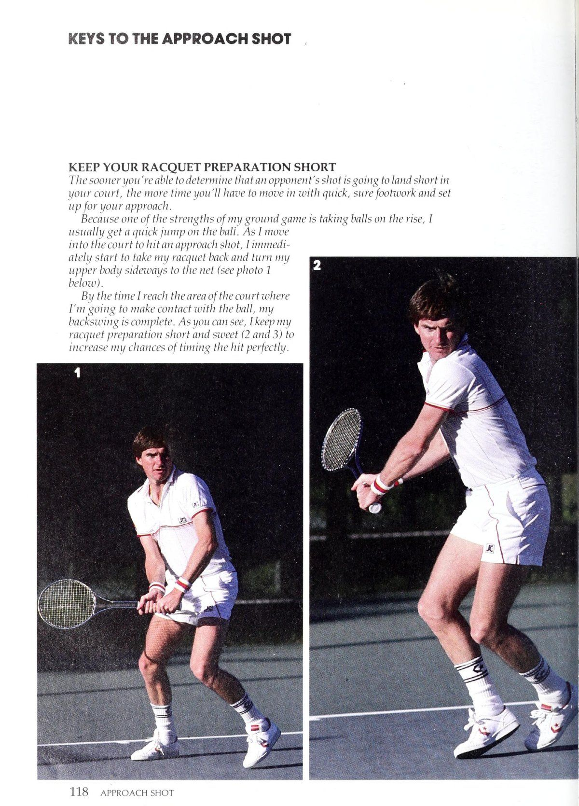
Hình 8: Cú đánh tiếp cận sân (Approach Shot). Di chuyển tiến lên có kiểm soát, hãm đà chuẩn xác để đánh bóng trong trạng thái thăng bằng trước khi áp sát lưới.
Nhặt quả bóng bay: Nếu đủ tỉnh táo, bạn nên đánh một quả bóng đang lơ lửng trước khi nó nảy lên theo kiểu chuyển động chuyền bóng (phải).
Học cách chỉ chơi bóng và không lo lắng về những gì đối thủ của bạn đang làm.
Chìa khóa thứ hai cho một cú đánh tiếp cận tốt là một động tác vung vợt về phía sau gọn gàng. Mặc dù Borg và một số cầu thủ khác có thể thực hiện các cách tiếp cận hiệu quả với các cú giật sau lớn, nhưng nó có thể giúp nhiều cầu thủ trong câu lạc bộ cắt giảm số lần vung vợt sau của họ. Tất cả các cú đánh của tôi đều nhỏ gọn và tôi nghĩ nó giúp ích cho việc tiếp cận lưới. Làm sao? Với một cú vung vợt sau ngắn, bạn sẽ giảm thiểu khả năng đánh sai thời điểm, đặc biệt nếu bạn đánh giá sai hướng đánh của đối thủ hoặc một cơn gió nhỏ khiến bóng nảy lên bất ngờ.
Nhận bóng sớm, khi đang dâng cao, mang lại cho bạn một chút lợi thế khác trong việc kiểm soát một điểm. Tôi luôn cố gắng đón bóng trước khi nó đạt đến đỉnh điểm sau khi bật lên. Bằng cách đó, tôi tiếp xúc được trên mặt lưới và có thể đánh bóng phẳng. Nếu bạn có thể biến việc đánh bóng thành thói quen, bạn cũng sẽ thấy mình tiến một bước gần hơn đến lưới khi bạn quyết định di chuyển vào trong một thời điểm. Nó khiến đối thủ mất thăng bằng và khiến họ kiệt sức vì họ luôn phải phản ứng nhanh với những cú đánh của bạn chứ không phải ngược lại.
Bao quát các góc: Sau khi thực hiện một cú đánh tiếp cận, hãy cố gắng định vị bản thân trong mớ hỗn độn các phương án trả bóng của đối thủ (trái).
Bạn nên nhắm những cú đánh tiếp cận của mình vào đâu? Nó phụ thuộc rất nhiều vào khả năng của bạn và điểm yếu của đối thủ. Nhưng một nguyên tắc chung là giữ bóng ở phía trước khi bạn vào lưới. Nói cách khác, hãy đi xuống dòng thường xuyên nhất để giảm bớt các góc quay trở lại có thể có. Cơ hội thành công của bạn cũng sẽ tăng lên nếu bạn khai thác được ‘điểm yếu’ của đối thủ. _ Bề mặt sân cũng là một điều cần cân nhắc khi đặt các phương pháp tiếp cận của bạn. Trên sân cứng, tôi đánh chéo bàn thay vì đi dọc biên nếu đối thủ của tôi ở ngoài vị trí. Sự kết hợp giữa bề mặt nhanh và sức mạnh cú đánh của tôi thường sẽ tạo nên một quả bóng không thể trả lại. Và trên mặt sân đất nện mềm, bạn không nên bỏ qua cách tiếp cận phía sau một cầu thủ đang cố gắng trở lại vị trí. Một khi anh ta khiến trọng lượng của mình di chuyển nhanh chóng theo một hướng thì việc thay đổi hướng đi một cách đột ngột là cực kỳ khó khăn. Lời khuyên cuối cùng: Hãy thực hiện các cú đánh tiếp cận của bạn khi đang di chuyển và theo sát chúng vào lưới. Điều duy nhất bạn không muốn làm là đánh quả bóng và đứng đó nhìn nó, hy vọng nó sẽ tốt. Toàn bộ mục tiêu của việc di chuyển vào là kết thúc điểm một cách nhanh chóng, vì vậy bạn phải áp sát lưới ngay cả khi bạn đánh sai bóng. Bạn không bao giờ biết; một cơn gió mạnh hoặc ‘một cú đánh sai vẫn có thể khiến bạn có phong độ tốt trên lưới. Trong golf có câu nói về việc gạt bóng: “Không bao giờ lên, không bao giờ vào”. Nó có nghĩa là 'bạn phải' đánh quả bóng đủ mạnh để nó chạm tới lỗ hoặc nó sẽ không bao giờ có cơ hội rơi. Theo một cách nào đó, suy nghĩ tương tự cũng được áp dụng cho việc di chuyển lên lưới trong môn quần vợt. Nếu bạn đánh một cú đánh tiếp cận và không theo kịp
Chuẩn Bị Vợt Ngắn Gọn
Bạn càng sớm có thể xác định rằng cú đánh của đối thủ sẽ hạ cánh ngắn sân của bạn, thì bạn sẽ càng có nhiều thời gian để di chuyển vào sân với động tác nhanh, chắc chắn và chuẩn bị sẵn sàng.
Ủng hộ cách tiếp cận của bạn.
Bởi vì một trong những điểm mạnh của trò chơi trên mặt đất của tôi là việc bắt bóng ngày càng tăng, tôi thường nhảy nhanh lên Bali. Khi tôi di chuyển vào sân để thực hiện cú đánh tiếp cận, tôi ngay lập tức dần dần bắt đầu lấy lại cây vợt của tôi và xoay thân trên nghiêng về phía lưới (xem ảnh 1 bên dưới).
Khi tôi đến khu vực của tòa án nơi Tôi sắp tiếp xúc với quả bóng, tôi ơi quay lại hoàn tất. Như bạn có thể thấy, tôi giữ chuẩn bị vợt ngắn và ngọt ngào (2 và 3) để tăng cơ hội căn thời gian đánh một cách hoàn hảo.
Đánh Bóng Bằng Một Cú Có Kiểm Soát
[nếu bước chân của bạn tốt, bạn sẽ không bao giờ phải thực hiện một cú đánh tiếp cận trong đường chạy chết chóc. Thay vào đó, bạn nên kiểm soát hoàn toàn động lượng về phía trước khi thực hiện cú đánh của mình. Tại thời điểm tôi bắt đầu cú vung về phía trước (4), tôi đã cam kết với một vị trí cụ thể. Không có thời gian để thay đổi quyết định của tôi vào thời điểm này. [đánh bóng bằng một cú đánh mượt mà, phẳng (5 và 6), nhắm vào điểm số 5 sâu gần đường biên ngang của đối thủ. Khi bạn thực hiện một cú tiếp cận với quả bóng thấp hơn, hãy nhớ uốn cong đầu gối và thắt lưng và vung từ cao xuống thấp để tạo lực xoáy cho cú đánh của bạn. Kiểu đánh bóng đó giúp bóng đi qua lưới một cách an toàn và đặt sâu, nơi bóng sẽ nảy thấp do độ xoáy của nó.
Kết Thúc Bằng Một Cú Theo Đà Trọn Vẹn
Tôi nghĩ một trong những sai lầm lớn nhất mà bạn có thể mắc phải khi thực hiện một cú đánh tiếp cận là vuốt bóng một cách ngập ngừng. Nếu bạn giữ lại cú đánh của mình để đảm bảo bóng vẫn ở trong cuộc, cách tiếp cận của bạn có thể sẽ rất yếu. Bạn cũng có thể mong đợi được chứng kiến một cú chuyền bóng chiến thắng bay qua bạn. Để đảm bảo điều đó không xảy ra, bạn nên kết thúc cú đánh của mình với một cú đánh tiếp theo đầy đủ, như tôi đang minh họa trong các ảnh từ 7 đến 9. Đó là điểm kiểm tra cho biết bạn đã sử dụng cú đánh mượt mà và ổn định. Việc thực hiện theo dõi của bạn cũng sẽ tự động mở vai của bạn về phía lưới. Với đà vẫn đưa bạn về phía trước, bạn sẽ có thể di chuyển vào lưới dễ dàng sau cách tiếp cận của mình và chuẩn bị cho một cú vô lê chắc chắn.
Chương 18
Cú Lob Tấn Công: Gây Bất Ngờ Cho Người Bám Lưới
Từ “đe dọa” gần như đã mang một ý nghĩa mới trong những năm gần đây với sự phát triển của phong cách quần vợt toàn sân, hung hãn hơn. Đã qua rồi cái thời trò chơi bị thống trị bởi các chuyên gia cơ bản như Bjorn Borg hay Guillermo Vilas. Tầm ảnh hưởng to lớn của họ, lan tới tận cấp câu lạc bộ, đã được thay thế bằng một kẻ táo bạo, có đầu óc phản cảm. Ngày nay, ngày càng có nhiều cầu thủ thường xuyên tiến lên lưới và thực hiện một vị trí bắt vô lê đáng sợ chỉ cách lưới vài feet. 'Ồ, họ thực tế đã thách thức bạn thực hiện một cú sút của họ. Khi làm vậy, bạn thường cố gắng thực hiện cú đánh quá xa, sút xa hoặc đi vào lưới. Làm thế nào bạn có thể đánh bại những kẻ ôm lưới này... hoặc ít nhất là làm cho họ nghĩ xấu về việc chen chúc trên mạng quá chặt chẽ? Phát triển một cú lốp bóng tấn công tốt. [đừng nghĩ rằng có một cú đánh khác có thể cản phá cú lốp bóng tấn công để ngăn chặn những kẻ lao vào lưới chết ngay trên đường đi của họ và buộc họ phải quay đuôi để chạy xuống bóng. Tôi có thể nói với bạn rằng thật sự rất thú vị và rất thú vị khi chứng kiến những biểu hiện tự tin trên bàn thắng của họ chuyển sang ngạc nhiên và đôi khi hoảng sợ khi họ nhìn thấy quả 10t mà họ biết rằng sẽ quá cao để có thể đạt được từ vị trí lưới của họ. Cú lốp bóng tấn công đã là một phần trong trò chơi của tôi trong nhiều năm. Trên thực tế, đã đánh tốt, tấn công hiệu quả các trận đấu đàn em từ lâu tôi ver cảm thấy thoải mái với cú lốp bóng phòng thủ (xem Chương 7) ở trường đại học. Đó là bởi vì những cú chạm đất và những cú chuyền bóng của tôi đã thiết lập nên cú đánh. Những người ủng hộ tôi thường quan tâm đến việc dừng trận đấu trên sân của tôi đến mức khả năng tôi có thể nhấc bóng qua đầu họ và lao vào sân sau đã hiện lên trong đầu họ một cách khó chịu. Yếu tố đa dạng đó trong trò chơi của tôi giờ đây thậm chí còn quan trọng hơn vì người chơi ngày nay lớn hơn, mạnh hơn và thông minh hơn bao giờ hết. 2 [muốn khiến họ phải suy nghĩ nhiều nhất có thể khi họ vào lưới. Mọi nghi ngờ, tôi có thể ghi nhớ trong đầu họ về việc tôi sẽ thử cú đánh tiếp theo nào có lợi cho tôi. Đối với tôi, những cú lốp bóng tấn công là những cú đánh tự nhiên, mang tính ngẫu hứng. Tôi coi tem như con át chủ bài, tôi luôn giữ vững tinh thần trong một trận đấu. Tôi sẽ không thực hiện bốn hoặc năm cú lốp bóng tấn công trong các điểm liên tiếp hoặc thậm chí trong các trận đấu,
Các lựa chọn lốp bóng tấn công: Một cú lốp bóng chéo sân (A phải) mang lại cho bạn nhiều diện tích sân hơn để thực hiện. Chỉ đánh xuống vạch (B) nếu bạn kiểm soát tốt.
Cú đánh hoặc cú vô lê mà tôi có thể thực hiện một cách thoải mái, ở gần hoặc bên trong đường cuối sân. Thông thường, tôi sẽ thực hiện cú đánh cơ bản, cú sút chuyền bóng, nhưng nếu anh ấy gây nhiễu lưới nhiều, tôi sẽ cố gắng bắt anh ấy nghiêng người về phía trước.
Làm sao? Bằng cách ngụy trang cú đánh của tôi và giữ lại cú đánh cho đến khi đối thủ của tôi quyết tâm di chuyển theo cách này hay cách khác.
Cách chắc chắn nhất để che giấu ý định của bạn là thực hiện một cú vung vợt sau bình thường trên mặt đất. Sau đó, thay vì lái bóng qua quả bóng ở cú đánh về phía trước, hãy sử dụng vợt của bạn để lướt lên trên quả bóng và đưa nó bay nhanh lên trời với một lượng xoáy lên vừa phải.
Tôi chắc rằng bạn đã từng thấy những chuyên gia khác thực hiện cú lốp bóng tấn công của họ với rất nhiều cú xoáy lên. Ví dụ, Ivan Lendland Ilie Nastase sử dụng một cú búng tay nhanh khi tiếp xúc với quả bóng để đưa nó bay qua đầu đối phương. Kỹ thuật đó sẽ phù hợp nếu bạn có cổ tay khỏe và khả năng xác định thời điểm tốt để đón bóng sạch khi va chạm.
Tuy nhiên, tôi luôn rút gọn các nét thành mẫu số chung đơn giản nhất của chúng. Đó là, tôi giữ mọi thứ càng đơn giản càng tốt để giảm thiểu số lỗi mà tôi có thể mắc phải. Với một cú lốp bóng tấn công xoáy lên cực mạnh, bạn luôn có nguy cơ đánh nhầm cú đánh và tệ hơn nữa là đánh bóng lên trên quá mạnh khiến nó lao thẳng xuống không trung quá sớm. Với lượng xoáy lên vừa phải hơn, cú vung từ thấp đến cao của bạn sẽ được kiểm soát nhiều hơn và bạn có thể sử dụng cú đánh tiếp theo mượt mà để đặt bóng sâu và chính xác vào phần sân sau của đối thủ.
Khu vực mục tiêu mà tôi chọn cho một cú lốp bóng tấn công thường phụ thuộc vào việc tôi đánh bóng từ phía thuận tay hay phía trái tay của mình. Về phía thuận tay, tôi thường đặt bóng chéo bàn vì làm như vậy tôi sẽ có nhiều mặt sân để đánh vào.
Tuy nhiên, tôi tự tin hơn khi thực hiện một cú lốp bóng tấn công trái tay. của tôi Tôi coi những cú lốp bóng tấn công là con át chủ bài. Tôi luôn giữ vững tay áo của mình namat. Chúng có hiệu quả nhất khi được sử dụng một cách tiết kiệm.
Cách cầm vợt bằng tay giúp tôi kiểm soát cú đánh nhiều hơn, vì vậy tôi có thể giữ đầu vợt lại cho đến giây cuối cùng, buộc đối thủ của tôi phải bỏ cuộc. Ở bên trái tay, tôi có thể đi dọc biên hoặc rosscourt. Tôi nghĩ một trong những vị trí có tỷ lệ phần trăm tốt nhất cho cú lốp bóng tấn công là phía bên trái tay của cầu thủ lưới. Bằng cách đó, ngay cả khi cú lốp bóng đi xuống hơi ngắn, anh ta sẽ phải đánh bóng bằng một cú trái tay qua đầu, một cú đánh khó để loại bỏ ngay cả đối với những cầu thủ chuyên nghiệp. Sau khi đưa bóng đi, bạn nên cảnh giác để chuyển sang hiệp 1 và bắt quả trả bóng của đối thủ. Nếu bạn chưa đủ kinh nghiệm hoặc không biết cú lốp bóng của mình sẽ tốt như thế nào ngay khi nó rời khỏi dây, hãy quan sát phản ứng của đối thủ. Anh ấy sẽ xoay người và lao đi sau khi chuyền bóng như điên nếu đó là một cú lốp bóng tốt. Đó là gợi ý của bạn để tiến tới sân quặng và chờ đợi những gì có thể là một cú trả bóng yếu hoặc một cú lốp bóng phòng thủ. Vì vậy, hãy nhớ, đừng để một đối thủ quá hung hãn đe dọa bạn. Hãy lốp bóng tấn công một cách khôn ngoan và bạn sẽ là người thực hiện cú lốp bóng đáng sợ. Anh ấy sẽ giữ một khoảng cách tôn trọng với lưới.
Lấy lại hơi thở: Nếu bạn cần bắt kịp nhịp thở tại một thời điểm và đối thủ của bạn đang lùi lại, hãy ném một cú giật cao từ sân sau (phải) bằng động tác đánh lốp bóng tấn công của bạn.
Cú Lob Tấn Công
Một cú lốp bóng tấn công là một vũ khí tuyệt vời nên có trong trò chơi của bạn nếu bạn đang đối mặt với một đối thủ thích thò đầu qua lưới. Nhưng bạn phải chống lại sự cám dỗ đi đến giếng quá thường xuyên.
Bạn nên sử dụng cú lốp bóng tấn công một cách tiết kiệm và chỉ khi bạn ở vị trí tốt, ở gần hoặc bên trong đường cơ sở (xem ảnh 1 và 2). Bằng cách đó, bạn sẽ có thời gian để thiết lập đúng cách cho cảnh quay và thực hiện một cú đánh mượt mà, có kiểm soát.
Để chuẩn bị, hãy lấy vợt về theo cách tương tự bạn sẽ thực hiện một cú đánh chạm đất xoáy lên như tôi minh họa dưới đây, với đầu vợt của bạn kết thúc hơi thấp hơn điểm mà bạn mong muốn tiếp xúc với quả bóng (3).
E Ya om aa)Zp, > fu bạn )
Ồ
Nâng Bóng Lên & Sẵn Sàng Tiến Vào
Từ điểm xuất phát tương đối thấp, hãy vung đầu vợt về phía trước và hướng lên trên (4) để nó gặp bóng cao hơn thắt lưng một chút và ở phía trước cơ thể bạn (5). Cú xoay từ thấp đến cao đó cho phép tôi tạo ra một lượng xoáy lên vừa phải vào quả bóng, điều này sẽ giúp đưa nó xuống phần sân sau của đối thủ. Cú đánh tiếp theo (6 và 7) của bạn phải là một phần mở rộng tự nhiên, mượt mà của cú xoay về phía trước để có vị trí chính xác. Nếu bạn tiếp cận đối thủ của mình, anh ta sẽ chạy như điên để lao xuống lốp bóng của bạn. Vì vậy, bạn nên chuẩn bị di chuyển ở phía sau cú đánh của mình.
Cú Lob Tấn Công
Chương 19
Cú Half-Volley: Kiên Trì Để Tiếp Xúc Chắc Chắn
Hãy hỏi bất kỳ người bạn nào của bạn đang chơi quần vợt xem họ thấy cú đánh nào khó đánh nhất và họ gần như chắc chắn sẽ nói với bạn rằng đó là cú vô lê một nửa. Đó không phải là cú đánh trái tay qua đầu, cú giao bóng xoắn hay thậm chí là cú vô lê phản xạ của một cú công bóng mạnh mẽ hướng thẳng vào phần giữa. Không, cú vô lê một nửa thường giành chiến thắng trong cuộc thi ít phổ biến này. Tôi sẵn sàng cá rằng bạn cũng sẽ bỏ phiếu ủng hộ cú vô lê một nửa. Thường xuyên hơn những gì bạn có thể muốn thừa nhận, bạn cảm thấy làn sóng lo lắng không mong muốn dâng trào trong bạn khi đối thủ có thể tung ra một đòn trả đũa khó khăn ngay dưới chân bạn. Trên thực tế, sức mạnh từ sự trở lại của anh ấy có thể khiến bạn bất ngờ đến mức gần như đánh bật bạn lùi lại. Bạn đã nhấn nút hoảng sợ và điều đó cho thấy phản ứng rụt rè của bạn khi quay lại. Bây giờ, tôi sẽ không nói với bạn rằng cú vô lê một nửa là một cú đánh dễ dàng. Chắc chắn là không. Nếu được lựa chọn, tôi muốn không phải đánh thêm nửa cú vô lê nữa trong suốt quãng đời còn lại của mình. Tôi nghĩ rằng hầu hết các chuyên gia đồng nghiệp của tôi sẽ đứng về phía tôi về điều đó—ngay cả một cầu thủ như John McEnroe, người đôi khi có thể đánh trúng những người chiến thắng bằng một cú đánh. Tuy nhiên, điều quan trọng là bạn phải học cách kiềm chế khi đối thủ tung cú sút nóng bỏng dưới chân bạn và phản ứng một cách tự tin để đưa bóng trở lại lưới, với 'thứ gì đó trên đó, bạn hy vọng'. Tôi thậm chí còn biết được rằng cú vô lê một nửa có thể là vũ khí tấn công trong trò chơi của tôi khi tôi sử dụng nó đúng cách từ cơ sở. Nếu bạn có thể thực hiện những điều chỉnh tương tự trong thái độ của mình, bạn sẽ không phải thường xuyên nhấn nút hoảng sợ trong các trận đấu của mình. Bất cứ khi nào tôi buộc phải thực hiện một nửa cú vô lê từ vùng đất không có người, tôi biết đó là do tôi đến sau một cú giao bóng hoặc cú tiếp cận yếu, tôi lười di chuyển bằng chân hoặc đối thủ của tôi đã đánh trả rất tốt. Trong trường hợp cuối cùng, tôi đã học cách ghi công khi đến hạn và chuyển sang điểm tiếp theo. Nhưng nếu tình huống nửa chuyền là kết quả của một trong hai vấn đề đầu tiên, thì tôi nhận ra mình phải quay lại và thực sự tập trung vào cú đánh mà mình đánh không tốt. Về mặt kỹ thuật, cú đánh rất ngắn và ngọt ngào. Không có gì lạ mắt về cú vô lê một nửa vì thời gian rất quan trọng. Công việc của bạn là chặn lại cú trả bóng nảy đến chân bạn trong tích tắc sau khi nó chạm mặt sân.
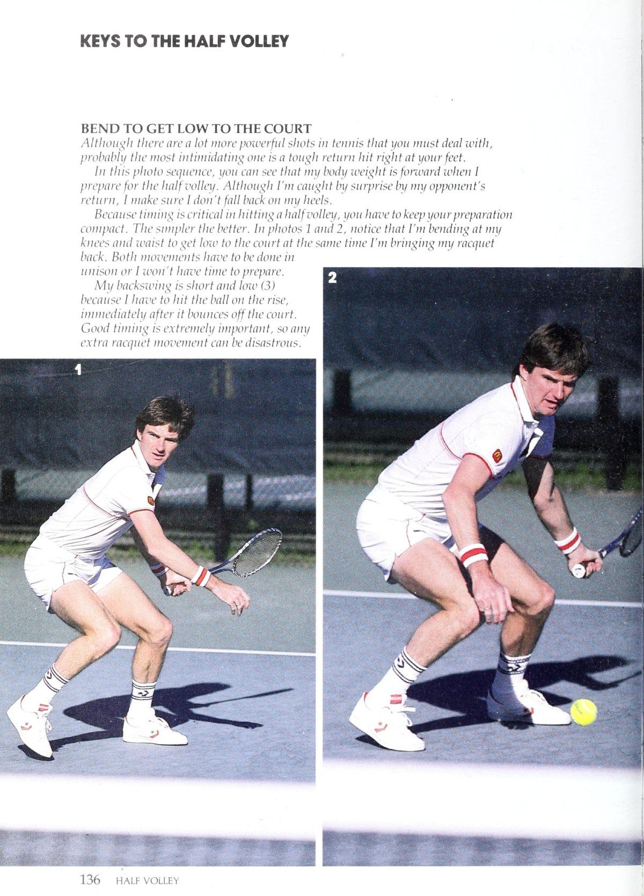
Hình 9: Cú bắt nửa nảy (Half Volley). Hạ sâu hai đầu gối xuống ngang mặt cỏ, dựng mặt vợt vững như bức tường thép để chặn đứng đường bóng thấp hiểm hóc.
Kỹ thuật vững chắc: Hãy tưởng tượng cây vợt của bạn là một bức tường.
Giữ bóng chắc chắn (phải) và chặn bóng sâu.
Wi: một cú vô lê nửa chắc chắn, bạn sẽ thử thách khả năng của mình đối thủ phải xâu chuỗi một vài cú sút đẹp mắt để ghi bàn.
Sớm hơn rất nhiều so với việc bạn có thể thực hiện cú đánh trở lại mặt đất bình thường. Để hoàn thành tốt công việc đó, bạn nên đặt ra hai ưu tiên chính cho mình. Đầu tiên, bạn cần giữ trọng lượng của mình về phía trước. Nếu bạn nao núng khi nhận thấy mình sắp phải đánh một nửa cú vô lê, trọng lượng cơ thể của bạn sẽ có xu hướng lùi về phía sau khi va chạm và điều đó hầu như sẽ loại bỏ mọi cơ hội bạn có để đánh trả hiệu quả.
Thứ hai, bạn phải hạ vợt và cơ thể xuống thấp mặt sân để đảm bảo tiếp xúc chắc chắn. Đó là nơi hầu hết các cầu thủ mắc sai lầm lớn nhất trong cú vô lê nửa chừng. Họ đứng quá thẳng, một phần là do bị bất ngờ trước cú trả bóng mạnh và phải vung tay to mới đón được bóng. Tất nhiên, không có cơ hội nào trên thế giới mà họ có thể đạt được bất kỳ độ chính xác nào với một cú đánh như vậy.
Một vấn đề phổ biến khác xảy ra khi bạn hạ thấp cơ thể để đánh nhưng lại để đầu vợt quá cao khi thực hiện cú đánh về phía sau. Trong trường hợp này, kết quả là một sự dao động ngang bằng hoặc từ cao đến thấp. Cả hai đều có khả năng đưa bóng vào lưới. Nếu những triệu chứng này nghe có vẻ quen thuộc thì tôi khuyên bạn nên hạ đầu vợt xuống thấp trong các buổi tập bằng cách thực sự chạm vào bề mặt sân trước khi bắt đầu cú đánh về phía trước. Bạn sẽ sớm thấy những cú vô lê của mình phá lưới ở mức an toàn hơn.
Bản thân nét vẽ này rất đơn giản, như bạn có thể thấy trong chuỗi ảnh ở vài trang tiếp theo. Tôi giữ cho cú vung sau của mình ngắn để có thể căn thời gian cho cú đánh chính xác hơn. Từ vị trí xuất phát đó, tôi di chuyển vợt về phía trước với một tay cầm chắc chắn và chặn bóng chắc chắn ra phía trước người, ngay sau khi nó chạm sân. Âm thanh của quả bóng nảy ra khỏi sân và sau đó là những sợi dây của tôi chỉ cách nhau một phần giây.
Bạn có thể sẽ dễ dàng hơn với cú đánh ngắn nếu bạn coi cây vợt của mình như một bức tường vững chắc. Tôi nhớ khi còn nhỏ, chúng tôi thường ném những quả bóng để chúng nảy lên khỏi mặt đất chỉ cách bức tường gạch vài inch. Các quả bóng sẽ bật lên nhanh chóng và đập vào tường, bật trở lại tôi với chúng tôi với một tốc độ đáng kinh ngạc. Đó chính xác là loại chuyển động chặn chắc chắn mà bạn đang theo đuổi. Vì vậy, hãy giữ cho cú đánh của bạn ngắn và độ bám của bạn chắc chắn.
Cú đánh tiếp theo của tôi, giống như cú đánh lùi của tôi, cũng tương đối ngắn. Đó là vì tôi không phải cung cấp nhiều lực cho cú đánh. Tôi sử dụng tốc độ trả bóng của đối thủ và cú đánh kiểu chặn của tôi để đưa bóng trở lại lưới.
Khi đặt bóng, tôi chủ yếu nghĩ đến việc đạt được độ sâu tốt trong nửa cú vô lê của mình để đối thủ của tôi không thể di chuyển quá tự tin và thực hiện một cú trả bóng quá căng thẳng. Nếu | Tất nhiên, có đủ thời gian để chuẩn bị cho cú đánh, tôi sẽ cố gắng đặt nó vào bên yếu hơn của anh ta. Nhưng đó thường là điều xa xỉ trong những tình huống nửa chuyền. Nhiều khi, bạn thật may mắn khi lấy lại được bóng.
:
Sau khi thực hiện cú vô lê một nửa, bạn nên cố gắng di chuyển nhanh về phía lưới. Tại sao? Nếu bóng của bạn ngắn và bạn giữ mặt đất gần vạch giao bóng hoặc bắt đầu lùi lại, đối thủ sẽ có thể đánh bại bạn một cách dễ dàng. Tuy nhiên, trên lưới, ít nhất bạn sẽ buộc anh ta phải thực hiện một cú sút khá tốt.
Mặc dù đánh một nửa quả vô lê từ khu vực lân cận đường giao bóng thường khiến bạn rơi vào thế phòng thủ, nhưng việc đánh một quả vô lê từ đường cuối sân có thể giúp bạn có phong độ tốt trong một thời điểm. Không có quá nhiều cầu thủ khai thác tiềm năng của cú đánh từ sân sau, nhưng tôi sử dụng nó thường xuyên hơn ở đó. Chiến thuật có Một chiến thuật khác thường: Đánh một nửa cú vô lê từ căn cứ-đường (trái) là một động thái tích cực vì bạn đã chọn để đưa bóng đi lên.
Đã được đền đáp cho tôi nhiều lần trong sự nghiệp của tôi. Đây là cách nó thường hoạt động. Đối thủ của tôi và [đang ở giữa một pha giao bóng, trong đó chúng tôi di chuyển lẫn nhau, cố gắng giành được lợi thế về vị trí. Anh ấy đánh một cú đánh đất sâu, tốt và anh ấy nghĩ rằng anh ấy đã khiến tôi bị mắc kẹt phía sau đường cuối sân. Nhưng thay vì lùi lại để đánh bóng ở ngang eo thoải mái, đôi khi tôi bước một hoặc hai bước vào sân và tung cú vô lê một nửa. Lý do của tôi cho động thái hung hăng đó là để lật ngược thế cờ đối thủ của tôi. Nếu! Có thể đón bóng sớm sau cú nảy và đặt nó sâu vào góc xa anh ta, tôi sẽ để anh ta chạy trốn. Anh ấy sẽ không có nhiều thời gian để hồi phục sau cú đánh lùi sâu và theo dõi cú sút của tôi. Giống như cú đánh nửa cú vô lê từ bên trong sân, cú vô lê nửa cú từ đường cuối sân là một cú đánh ngắn, nhưng cú đánh tiếp theo sẽ dài hơn một chút vì bạn phải đưa bóng đi hết chiều dài của sân. Một cái nắm chắc là một điều cần thiết khác. Hãy thử đánh một vài cú vô lê tấn công từ đường cuối sân vào lần thi đấu tiếp theo. Tuy nhiên, hãy chắc chắn giữ vững lập trường của bạn. Thỉnh thoảng bạn có thể lẻn vào lưới sau cú đánh. Một khi bạn thấy rằng bạn có thể
Mặc dù có rất nhiều cú đánh mạnh mẽ hơn trong quần vợt mà bạn phải đối phó, nhưng có lẽ cú đánh đáng sợ nhất là một cú trả đòn mạnh ngay dưới chân bạn. Trong chuỗi ảnh này, bạn có thể thấy trọng lượng cơ thể của tôi tăng lên khi tôi chuẩn bị cho nửa cú vô lê. Mặc dù tôi rất bất ngờ trước sự trở lại của đối thủ, tôi đảm bảo tôi đừng có vấp ngã vào gót chân của tôi. Bởi vì việc căn thời gian rất quan trọng trong việc đánh một nửa cú vô lê nên bạn phải chuẩn bị thật gọn gàng. Càng đơn giản càng tốt. Trong ảnh 1 và 2, hãy chú ý rằng tôi đang cúi đầu gối và thắt lưng xuống sân cùng lúc tôi đưa vợt về phía sau. Cả hai chuyển động phải được thực hiện đồng thời hoặc tôi sẽ không có thời gian để chuẩn bị. 2 Động tác vung vợt sau của tôi ngắn và thấp (3) vì tôi phải đánh bóng khi nó đang bay lên, ngay sau khi nó bật ra khỏi sân. Việc chọn thời điểm tốt là cực kỳ quan trọng, vì vậy bất kỳ chuyển động vợt quá mức nào cũng có thể là thảm họa.
Chặn Bóng Chắc Chắn Như Một Bức Tường
Bạn nên thionf cây vợt yokur như một bức tường trong nửa cú vô lê. Suy nghĩ đó sẽ giúp bạn giữ cú đánh ngắn và tăng cơ hội tiếp xúc chắc chắn. Từ điểm xuất phát thấp của vợt, tôi di chuyển đầu vợt về phía trước và hướng lên trên một chút để tiếp xúc với quả bóng ở phía trước cơ thể, nếu có thể (4). Tay cầm của tôi chắc chắn khi tiếp xúc và đó là điều mang lại cho tôi hiệu ứng chặn chắc chắn như một bức tường. Nếu bạn giữ cú đánh về phía trước ngắn, bạn sẽ không phải lo lắng về việc thực hiện cú đánh theo hướng của mình vì đầu vợt của bạn sẽ ít chuyển động về phía trước. Trong ảnh 5 đến ảnh 7, bạn sẽ nhận thấy rằng phần tiếp theo của tôi ở nửa cú vô lê rất nhỏ gọn. [Mục đích thực sự duy nhất của tôi là kết thúc cú đánh và giúp dẫn bóng đến mục tiêu mà tôi đã chọn—sâu và tới phía yếu hơn của đối thủ, nếu có thể. Hy vọng rằng, nếu cú vô lê của tôi đủ tốt, tôi sẽ trở lại với mọi thứ.
Một
Chương 20
Cú Đánh Nền Từ Ngoài Vào Trong: Ném Cho Đối Thủ Một Đường Cong
Trong bóng chày, một vận động viên ném bóng trẻ tuổi có thể nhanh chóng tham gia các giải đấu lớn nếu anh ta có một quả bóng nhanh rực lửa có thể ném qua những tay đánh bóng giỏi nhất. Thông thường, cú ném thành công đó có thể đủ để đưa anh ấy trở thành ngôi sao trong vài năm đầu sự nghiệp. Nhưng khi anh ta có nhiều kinh nghiệm hơn, người ném bóng thông minh sẽ học cách @@@ thêm một cú ném khác vào trận đấu của mình, có thể là một đường bóng cong hoặc thay đổi tốc độ, điều này khiến những người đánh bóng đối phương khó tìm thấy sự 'kết hợp của họ trên đĩa' hơn đáng kể. Họ không thể cứ ngồi chờ bóng nhanh mãi được. Trên thực tế, cú ném không đúng tốc độ khiến quả bóng nhanh của anh ấy thậm chí còn khó đánh hơn. Nói cách khác, tôi rất giống một vận động viên ném bóng chày trên sân tennis. Cú ném tấn công của tôi, cú ném mà tôi luôn dựa vào, là một cú đánh chạm đất mạnh mẽ, đi sâu vào phần sân của đối thủ. Và đường cong của tôi là cái mà tôi muốn gọi là cú đánh từ ngoài vào trong. Nó là gì? Cú đánh từ ngoài vào trong của tôi là cú đánh mà tôi thường đánh từ giữa sân và một hoặc hai bước bên trong đường cuối sân. Lúc đầu, nó có vẻ 'di chuyển trên một đường thẳng, nhưng sau đó uốn cong vào một trong các góc của sân. Đó là một quả bóng có nhịp độ trung bình mà tôi sẽ ném vào trong các cuộc biểu tình để giữ cho đối thủ trung thực. Nó kết hợp hiệu quả tốc độ các cú đánh trên mặt đất của tôi. Đây không phải là một cú đánh nhận được nhiều sự chú ý, đặc biệt là từ người hâm mộ, bởi vì nó không có nhiều sự tinh tế trong đó. Không giống như cú nhảy cú skyhook trên cao của tôi, đối với 2xample, vốn đòi hỏi nhiều nỗ lực thể chất và dễ dàng nhận ra từ khán đài, những cú đánh từ ngoài vào trong của tôi không ngoạn mục. Tôi không cần phải dùng nhiều sức để đánh bóng và những cú đánh thường không rơi trúng người thắng sạch. Vì vậy, mặc dù tôi đã sử dụng ảnh này thường xuyên hơn bao giờ hết trong vài năm qua nhưng bạn thậm chí có thể không nhận thấy nó.
Ciro! là tên của trò chơi với cú đánh bởi vì đó là kiểu bắn không tốc độ.
Cả những cú đánh thuận tay và trái tay từ trong ra ngoài đều đến với tôi một cách tự nhiên khi tôi còn là một học sinh. Tôi chưa bao giờ được dạy cách đánh. Tôi đoán chúng là kết quả sự sáng tạo của chính tôi trên sân, cùng loại tôi thử nghiệm tạo ra các yếu tố đặc biệt trong phong cách vuốt ve của mỗi lớp.
Tất nhiên, tôi không tự nhận mình là người chơi duy nhất sử dụng cú đánh từ ngoài vào trong. Nhiều người chơi đã làm như vậy, bao gồm cả Chris Evert Lloyd, người đôi khi thực hiện cú sút trong các pha tập trung ở đường cơ sở để di chuyển đối thủ của mình xung quanh hiệu quả hơn. Và tôi nghĩ đó là kiểu đánh dễ dàng phù hợp nhất. các trò chơi của người chơi câu lạc bộ cũng vậy.
Để thực hiện một cú đánh từ ngoài vào trong, bạn cần giữ cho cú vung vợt ra sau ngắn. Điều đó chưa bao giờ là vấn đề đối với tôi vì toàn bộ tôi phong cách vuốt ve dựa trên những cú xoay nhỏ gọn. Nếu động tác vung vợt sau thông thường của bạn dài và phức tạp, bạn có thể gặp chút khó khăn trong việc kiểm soát cú đánh này.
Kiểm soát thực sự là tên của trò chơi với cú đánh vì đây là kiểu đánh không tốc độ. Bạn không cố gắng ném bóng qua đối thủ. Nếu đó là mục tiêu của bạn trong một tình huống chơi nhất định thì có một số vũ khí khác phù hợp hơn mà bạn nên cân nhắc sử dụng.
Đường đi của đầu vợt trong quá trình vung vợt về phía trước qua vùng tiếp xúc là từ ngoài vào trong. Đó là lý do đặt tên cho nét vẽ này. Với cú vung vợt như vậy, dây vợt sẽ lướt qua mặt sau của quả bóng, tạo ra độ xoáy ngang. Tôi thấy mình có thể kiểm soát chuyển động đánh răng nhiều hơn tôi hiệu quả nếu tôi tiếp xúc ở xa hơn về phía trước cơ thể so với tôi một cú chạm đất bình thường.
Khi bạn thực hiện cú đánh từ ngoài vào trong, bạn nên cẩn thận không làm mất tốc độ quá nhanh của bóng bằng cách làm chậm cú vung của bạn hoặc cố gắng đánh nó với nhiều xoáy xuống. Đúng là cú đánh có tốc độ thấp, nhưng tốc độ giảm của nó là kết quả của chuyển động lướt nhẹ trong cú vung của bạn.
Việc thực hiện theo dõi đầy đủ đóng vai trò là dấu hiệu cho thấy bạn đã hoàn thành cú đánh đúng cách. Ví dụ, tôi có thể nói rằng tôi đã đánh bóng tốt khi đầu vợt của tôi kết thúc tốt ở phía trước cơ thể tôi, nhưng hướng vào bên trong nhiều hơn so với cách đánh theo thông thường. Bạn cũng có thể sử dụng quá trình theo dõi của mình làm điểm kiểm tra.
Đường đi của quả bóng sau khi nó rời khỏi vợt của bạn chỉ là sự đảo ngược của cú vung vợt từ ngoài vào trong của bạn. Nó sẽ di chuyển từ trong ra ngoài từ giữa sân tới một góc (xem trang tiếp theo). Chuyển động cong là kết quả của xoáy ngang mà bạn truyền cho bóng bằng cú đánh của mình. Bạn phải luôn cân nhắc chuyển động này khi đánh bóng. Nhắm mục tiêu dọc theo đường biên cách góc nơi bạn muốn bóng vài feet. hạ cánh để bù đắp cho chuyến bay cong của nó.
Sau khi nảy lên, bóng có xu hướng đi thấp và kéo đối thủ vào ngõ. Một trong những pha chơi yêu thích của tôi với cú đánh thuận tay là tôi đưa bóng sâu vào góc hẹp và tránh xa cú thuận tay của người thuận tay phải. Cú sút từ ngoài vào buộc anh ta vào con hẻm và mở ra rất nhiều sân cho lần quay lại tiếp theo của tôi. Nếu anh ta đang cố gắng dự đoán một cú trả bóng chéo sân, tôi sẽ tung một cú trái tay về phía sau anh ta. Đó là một tỷ lệ phần trăm tốt đối với tôi. Nhưng nếu anh ấy ở lại, việc mở tỷ số chéo sân là một mục tiêu lớn khó có thể bỏ lỡ.
Chơi theo đường cong: Đảm bảo tính đến quỹ đạo cong của các cú đánh từ ngoài vào trong khi đặt bóng. Các bức ảnh sẽ cong về phía các góc (ở trên).
Như bạn có thể đoán, cú trả bóng từ ngoài vào trong có thể được sử dụng một cách hiệu quả như một cú đánh tiếp cận cũng như một cú đánh lệch tốc độ để phá vỡ nhịp độ của đối thủ. Trên thực tế, tôi thường cố gắng lẻn vào sau một trong những cú đánh này nếu tôi thấy rằng đối thủ của mình sẽ gặp khó khăn trong việc đánh trả mạnh mẽ. Tôi khuyên bạn nên thử chiến thuật tương tự trong các trận đấu của mình. Có thể bạn sẽ khiến nhiều người chơi phải bất ngờ. Đó là sự suy giảm về mặt từ bên ngoài đến bên trong. Đó không phải là một cảnh quay ngoạn mục, Định vị là chìa khóa quan trọng để thực hiện một cú đánh từ ngoài vào trong hiệu quả. tôi thích đánh cú trả bóng của đối thủ mà tôi có thể gặp ở giữa sân, một bước hoặc hai bên trong đường cơ sở (xem ảnh 1 bên dưới).
Bởi vì đây không phải là một cú đánh tấn công nên tôi phải giữ vững đôi chân của mình khá tốt khi tấn công.
Bắt đầu hành trình (2). Nếu Fran xuyên qua bóng trong khi nó đang bay lên, Tôi sẽ mất kiểm soát rất nhiều. Một cú vung vợt sau nhỏ gọn giúp giảm thiểu khả năng chọn sai thời điểm cú đánh của bạn (3).
Miết Ngang Mặt Sau Quả Bóng
Cú đánh về phía trước của tôi qua vùng tiếp xúc là một chuyển động từ trong ra ngoài cho phép đầu vợt lướt qua mặt sau của quả bóng và tạo ra xoáy ngang (4). Nếu tôi có thể tiếp bóng ở độ cao thoải mái, tôi cũng sẽ vung nhẹ từ cao xuống thấp để tạo thêm độ xoáy cho bóng. Bởi vì cú đánh từ ngoài vào trong sẽ di chuyển dọc theo chiều dài sân và tiếp đất sâu gần đường biên cuối sân của đối thủ, nên bạn phải đảm bảo hoàn thành cú đánh tiếp theo của mình. Nó khác với cú đánh tiếp đất thông thường ở chỗ vợt của bạn phải kết thúc tốt ở phía trước nhưng nhiều hơn vào bên trong cơ thể chúng ta, như tôi đang minh họa trong ảnh 5 và 6.
Chương 21
Cú Bỏ Nhỏ: Bắt Chân Đối Thủ Đứng Yên
Hãy đi vào giày của đối thủ chỉ trong một phút. Chúng ta đang ở giữa một trận đấu khó khăn và tôi đã liên tục giữ vững vị trí phía sau đường biên ngang của mình với tốc độ tốt trong các cú chạm đất của mình. Cú đánh mà bạn ít mong đợi nhất từ tôi trong một cuộc biểu tình là gì? Đúng, một cú đánh rơi. Rất có thể bạn sẽ ngạc nhiên trước lựa chọn cú đánh của tôi đến mức bạn không thể di chuyển chân kịp thời để tiếp cận bóng. Nhưng ngay cả khi bạn làm vậy, rất có thể bạn sẽ bị căng thẳng và chạy trốn đến mức bạn sẽ không thể kiếm được nhiều lợi nhuận. Bây giờ, tôi không đánh được nhiều cú drop trong một trận đấu. Trên thực tế, bạn có thể không thấy tôi đánh một vài trận cùng một lúc. Nhưng đó chính là chìa khóa mang lại hiệu quả cho cú đánh rơi của tôi. Tôi không giả vờ mình có tài năng tuyệt vời như John McEnroe, Chris Evert Lloyd hay Ilie Nastase. Tôi phụ thuộc nhiều hơn vào việc chọn đúng thời điểm để thử cú đánh thả bóng để nó không cần phải đánh một cách hoàn hảo. Cách tiếp cận đó đã có tác dụng tốt với tôi. Tôi nghĩ nhiều cầu thủ trong câu lạc bộ đặt quá nhiều tầm quan trọng vào cú đánh khó này. Có lẽ bạn đã từng cảm thấy muốn tự đá mình nhiều lần trong các trận đấu vì cố gắng thả bóng qua lưới trong những tình huống đòi hỏi một vị trí gần như không thể. Trong một pha giao bóng có nhịp độ nhanh, người ta dễ quên rằng cú thả bóng là một lựa chọn rủi ro, tỷ lệ phần trăm thấp. Tôi tự coi mình là người may mắn vì tôi đã học được cách tăng cơ hội thành công với cú đánh bằng cách sử dụng nó một cách tiết kiệm, chỉ khi tôi kiểm soát được dòng chảy của một điểm. Vì vậy, hãy để tôi chia sẻ một số suy nghĩ của tôi về cú đánh rơi với bạn. Có lẽ bạn sẽ đi đến kết luận tương tự. Một trong những yếu tố quan trọng nhất mà nỗ lực bắn rơi phải có là ngụy trang. Nói cách khác, bạn phải làm cho đối thủ nghĩ rằng anh ta sắp chứng kiến một cú đánh tiếp đất khác trở lại trong một pha đánh bóng. Một trong những cách bạn có thể làm là điều chỉnh đối thủ của mình theo một nhịp điệu hoặc kiểu đánh cụ thể. Công việc đó khá dễ dàng đối với tôi vì tính chất công việc của tôi. Đối thủ của tôi nhìn thấy rất nhiều cú đánh sâu đến mức anh ta luôn đoán trước được một cú đánh khác. Khi tôi dẫn trước trong một trận đấu, ví dụ như 30-0 hay 40-15, và tôi ít nhất
Tôi Tăng cơ hội thành công bằng cách bắn sử dụng nó một cách tiết kiệm, chỉ khi tôi kiểm soát được dòng chảy của một điểm.
Hiệu quả. [ thường có biên độ lớn hơn một chút để có thể xảy ra lỗi trong phạm vi n điều khoản tôi của vị trí.
Trên thực tế, tôi sẽ thường xuyên thực hiện cú đánh thường được coi là có tỷ lệ rơi thấp nhất bằng cách đánh bóng qua phần cao nhất của lưới và xuống đường biên. Lý do tôi có thể làm được điều đó là vì nỗ lực thả bóng của tôi thường theo một cú trái tay chéo sân mà tôi đã đánh sâu vào góc deuce. Trong tình huống đó, trái tay của tôi mở ra toàn bộ mặt sân đối phương để đánh vào. Sân trống là lời mời gọi tôi không thể cưỡng lại.
Ngoài việc tạo điều kiện cho đối thủ của bạn mong đợi một cú đánh đất sâu khác, bạn còn phải ngụy trang cú đánh thả bóng của mình theo quan điểm kỹ thuật. Điều quan trọng là cú vung vợt sau của bạn. Bạn phải đưa vợt về vị trí cao hơn vị trí mà bạn dự định tiếp xúc với bóng. Từ phía bên kia của lưới, động tác vung ra sau của bạn sẽ trông giống như động tác bạn thực hiện để thực hiện một cú đánh cắt đất (xem chuỗi ảnh sau đây).
Sau đó, bạn vung vợt về phía trước và hơi hướng xuống dưới một cách nhịp nhàng, thả lỏng tay cầm và mở mặt vợt ra một chút khi tiếp xúc... vừa đủ để làm giảm tốc độ cú đánh của đối thủ. Bóng phải rời khỏi mặt vợt của bạn một cách nhẹ nhàng và có một chút xoáy xuống để nó chết ở phần sân trước sau khi đã qua lưới.
Tôi không có ý làm cho cú đánh nghe dễ dàng vì thực sự không phải vậy. Cú đánh rơi đòi hỏi một cú chạm tinh tế mà nhiều cầu thủ quyền lực không có được. Đó là lý do tại sao tôi sẽ chọn thời điểm để sử dụng nó một cách cẩn thận. Chín trong số 10 lần khi một quả bóng ngắn chạm sân của tôi, tôi sẽ nhanh chóng di chuyển vào trong đường cuối sân, đưa bóng sâu vào góc và theo cú sút vào lưới. Khi tôi quyết định thực hiện cú đánh thả bóng, nó thường lệch về phía trái tay của tôi vì cách cầm bằng hai tay giúp tôi kiểm soát đầu vợt nhiều hơn một chút.
Một lý do khác khiến tôi đạt được một số thành công với cú đánh là vì tôi chưa bao giờ coi đó là cú đánh thắng điểm. Nói cách khác, tôi chưa bao giờ thực hiện cú thả bóng nào và tự nhủ: "Đó chính là vấn đề. Mình hiểu rồi/'
Đó là cái bẫy mà nhiều người chơi rơi vào. Họ thực hiện cú sút và đứng đó nhìn đối thủ tranh giành bóng. Họ không chuẩn bị cho việc quay trở lại và kết quả là thường bị bất ngờ.
Tôi coi cú thả bóng chỉ là một công cụ khác để thiết lập một điểm. Nó không phải là một điểm thần kỳ khi nó bật ra khỏi cây vợt của tôi. Trên thực tế, vì tôi không phải là một cầu thủ chạm bóng giỏi nên tôi luôn cho rằng đối thủ của mình sẽ chạm bóng. Vì vậy, một khi [ đánh bóng, tôi luôn cảnh giác.
Tôi có hai lựa chọn cơ bản vào thời điểm này. Đầu tiên, tôi có thể di chuyển đến gần lưới, dự đoán một cú trả bóng yếu, lơ lửng mà tôi có thể thực hiện giữa không trung trước khi bóng nảy lên. Đó là chiến lược được rất nhiều người chơi chuyên nghiệp sử dụng.
Lựa chọn thứ hai, và cũng là lựa chọn mà tôi thường dựa vào nhất, là chơi 3/4 sân và cố gắng hết sức để ghi điểm. [có đủ kinh nghiệm để biết cú thả bóng của tôi sẽ tốt như thế nào ngay khi bóng rời khỏi dây. Vì lý do đó, tôi không tin rằng việc ở lại vùng đất không người là cực kỳ nguy hiểm.
Nếu tôi biết rằng cú đánh của tôi đủ tốt để buộc đối thủ phải căng ra, tôi ở vị trí thuận lợi để di chuyển theo bất kỳ hướng nào khá thoải mái, về phía trước hoặc sang ngang, để thực hiện một cú trả đòn mạnh có thể sẽ kết thúc điểm.
Chiến thuật thả bóng: Sau khi dồn bóng vào sâu trong góc khuất, tôi thích thả bóng dọc biên (trái).
Dự đoán tốt về khả năng đối thủ sẽ quay trở lại cũng mang lại cho tôi lợi thế từ vị trí 3/4 sân của mình. Ví dụ: nếu tôi thực hiện cú đánh qua lưới và dọc theo đường biên ngang, tôi thường có thể chắc chắn rằng đối thủ của tôi sẽ cố gắng đánh trả bóng chéo sân. Tại sao? Nếu anh ta thực sự bị căng ra, một cú trả bóng ở cuối đường biên sẽ phải được đánh lên trên để phá lưới. Quả bóng có xu hướng nổi và có thể trở thành vật dễ dàng trông giữ. Bằng cách đi chéo sân, anh ta có thể đưa bóng qua phần giữa hoặc phần thấp nhất của lưới. Đó chính là cảnh tôi đang tìm kiếm.
Thành công của bạn với cú đánh rơi phụ thuộc vào việc bạn có thể ngụy trang nó tốt đến mức nào. Nếu bạn tip tay của bạn, đối thủ của bạn có thể sẽ chạm được bóng và thực hiện cú trả bóng.
Để che giấu ý định đánh cú thả bóng của bạn, hãy khởi động lại cây vợt của bạn như cũ cách bạn thực hiện để đánh một cú đánh mặt đất, như [đang minh họa tn ảnh 1 bên dưới. Tôi gầy gò khả năng ngụy trang cú đánh đặc biệt hiệu quả bởi vì cú vung sau của tôi cho mỗi cú đánh là nhỏ gọn. Từ vị trí này, tôi có thể lái xe bóng sâu hoặc thả nó qua lưới.
Hành trình về phía trước của bạn phải trơn tru, từ cao đến thấp (2 và 3). Bắt đầu với cây vợt của tôi ở ngang vai, tôi vung nhẹ nhàng về phía trước và xuống dưới một góc.
EteB ờ tức làF Ss
Giảm Nhịp Độ Của Bóng
Với cách cầm vợt thoải mái, tôi giảm được rất nhiều tốc độ khi trả bóng của đối thủ (4). Chú ý rằng tôi mở mặt vợt của tôi một chút tại tiếp xúc để giúp tạo xoáy xuống cho bóng và đánh nó theo một vòng cung nhẹ nhàng để xóa mạng lưới.
Đây là nơi có rất nhiều người chơi câu lạc bộ mắc sai lầm trong cú đánh rơi.
Thay vì đánh xuyên qua quả bóng, họ dừng vợt nhanh chóng sau đó bóng đã được đánh. Chuyển động giật cục này có xu hướng đánh bóng quá sâu.
Việc tiếp theo cho sự sụt giảm cú đánh không dài bằng cú chạm đất đột quỵ, nhưng nó cũng quan trọng đối với điều khiển, Bạn có thể thấy trong ảnh 5 qua 7 mà đầu vợt của tôi tiếp tục tiến về phía trước một cách suôn sẻ sau khi liên lạc được thực hiện trong một thời gian ngắn theo dõi.
Chương 22
Cú Đánh Chéo Sân: Dùng Vũ Khí Mạo Hiểm Này Cho Khôn Ngoan
Không còn nghi ngờ gì nữa về điều đó. Quần vợt là một trò chơi gây xao lãng. Mỗi khi bạn bước ra sân thi đấu, bạn sẽ bị bao vây bởi họ. Đầu tiên, có những phiền nhiễu của môi trường tòa án. Ví dụ, mỗi năm tại giải Mỹ mở rộng ở Flushing Meadow, NY., người chơi không chỉ phải đối mặt với những phiền nhiễu của thiên nhiên như mặt trời, sức nóng và gió, mà còn với tiếng ồn máy bay và tàu hỏa, đám đông không ngừng nghỉ và tất cả những ưu điểm và nhược điểm của cuộc sống ở thành phố lớn. Tôi đã học cách phát triển nhờ những điều phiền nhiễu đó, nhưng chúng khiến một số người chơi phát điên. Và sau đó, tất nhiên, có những yếu tố gây xao nhãng khi chơi—chiến thuật, lựa chọn cú đánh, thậm chí cả tinh thần thi đấu—có thể xảy ra trên sân trong một trận đấu. Người chơi có thể vượt qua tất cả những phiền nhiễu này một cách dễ dàng và lần lượt cho đối thủ thêm một chút để xử lý sẽ là người chiến thắng. Điều đó áp dụng cho các cầu thủ câu lạc bộ cũng như các cầu thủ chuyên nghiệp. Một cách để đánh lạc hướng sự tập trung của đối thủ trên sân mà không đi theo con đường tinh thần trò chơi là cố gắng thực hiện một cú đánh bất ngờ. Chiến thuật gây bất ngờ của bạn có thể khiến anh ấy suy nghĩ về những gì bạn sẽ làm tiếp theo trong tình huống tương tự. Và tất cả chúng ta đều biết rằng suy nghĩ quá nhiều trên sân có nhiều khả năng gây tổn hại cho trận đấu của người chơi hơn là giúp ích cho nó. Một trong những cú đánh mà tôi thỉnh thoảng sử dụng - và tôi thỉnh thoảng nhấn mạnh từ này - để cố gắng làm mất tập trung của đối thủ là một cú sút có góc nhọn, tốc độ thấp. Đó là một cú đánh khó đánh và cực kỳ rủi ro, nhưng nó có thể mang lại kết quả trong tình huống thích hợp. Rất có thể tôi sẽ thực hiện được đường chuyền có góc nhọn từ một cú đánh tiếp cận yếu về phía trái tay của mình. Có hai lý do cho sự ưu tiên đó. Đầu tiên, cách cầm vợt bằng hai tay giúp tôi kiểm soát tốt hơn một chút so với cách cầm vợt thuận tay. Thứ hai, cú đánh tiếp cận yếu của đối thủ cho phép tôi bước vào sân và đón bóng ra phía trước cơ thể, một yếu tố quan trọng trong cú đánh. _ Điều làm cho cú đánh thành công là tôi thường khiến đối thủ của mình hoàn toàn bất ngờ. Đôi khi, tôi thậm chí còn ngạc nhiên với quyết định thử nó. Nghiêm túc mà nói, các đối thủ của tôi trong nhiều năm qua đã
O...w ay để đánh lạc hướng sự tập trung của đối phương trên sân là cố gắng thực hiện một cú đánh bất ngờ.
Tiếp xúc sớm: Để kéo bóng mạnh, tôi phải đón bóng xa hơn về phía trước cơ thể (phải) so với khi thực hiện một cú đánh ngang sân thông thường. điều đó đã mang lại cho tôi thành công trong trò chơi. Họ đã là bánh mì và bơ của tôi.
Vì vậy, khi [bắt bóng hoàn hảo trong một nỗ lực chuyền bóng theo góc, tốc độ và vị trí tương đối chậm ở gần đường biên đánh đơn sẽ buộc đối thủ đang lao vào lưới của tôi phải lao sang một bên để lấy bóng. Có khả năng là anh ấy sẽ đạt được mục tiêu đó, nhưng khả năng trở lại của anh ấy có thể sẽ yếu. Tôi đảm bảo rằng tôi sẽ ở đó chờ bóng nếu nó bay qua lưới Một lần nữa, tôi phải nhấn mạnh rằng tôi sẽ chỉ thử chụp ảnh này trong những trường hợp hiếm hoi. Chín trong số 10 lần, tôi sẽ thực hiện một cú sút chắc chắn. Một cú lốp bóng tấn công là lựa chọn tốt thứ hai của tôi và đường chuyền có góc nhọn đứng thứ ba trong danh sách ưu tiên của tôi. Trên thực tế, cứ ba trận tôi có thể chỉ đánh được một trong những cú đánh này Hoặc VẬY.
Vì lý do đó, tôi không khuyên người chơi câu lạc bộ trình độ trung cấp nên đánh. Đường chuyền có góc nhọn là một cú đánh nâng cao. Ngay cả khi bạn có nhiều tài năng, bạn chỉ nên thử khi thấy mình dẫn trước khá xa và cảm thấy mình có đủ khả năng để mất điểm.
Cú đánh đòi hỏi phải có thời gian và cảm giác chạm tuyệt vời. Mục tiêu đầu tiên của cú đánh là lấy bóng thật nhanh sau khi nó nảy lên để nó không bay lên quá cao. Trong đầu tôi luôn nghĩ mình phải chơi bóng quyết liệt và không để bóng chơi theo ý mình. Nếu tôi để nó bay lên quá cao và quá sâu trước khi tiếp xúc, tôi hoàn toàn không có cơ hội thực hiện được cú đánh với sự kiểm soát cần thiết.
Đi theo góc: Nhắm vào mục tiêu cách đường biên vài feet (trái) để tạo cho mình một chút sai sót. — Bản thân xích đu là một xích đu ngắn. Tôi sử dụng động tác vung vợt sau tương tự như khi thực hiện các cú đánh mặt đất thông thường của mình và điều đó thuyết phục đối thủ rằng anh ta phải sẵn sàng cho một cú đánh lái, chuyên môn của tôi. Nhưng từ đó, nét thay đổi mạnh mẽ. Thay vì truyền lực cho đầu vợt xuyên qua vùng tiếp xúc và kết thúc theo một cú đánh hoàn chỉnh, tôi sẽ giảm tốc độ vung vợt và cắt ngắn. Tôi giữ vợt thật chặt và chỉ lăn bóng chéo sân với tốc độ vừa phải. Bạn có thể đã thấy những chuyên gia khác sử dụng những cú chuyền bóng có góc nhọn thường xuyên hơn tôi. Bjorn Borg, Ivan Lendl, John McEnroe và Tlie Nastase chỉ là một số ít đã biến nó thành vũ khí hợp pháp trong các cuộc tấn công của họ. Nhưng mỗi người trong số họ thực hiện cú đánh khác với tôi, phụ thuộc nhiều hơn vào độ xoáy. ae và Lendl, chẳng hạn, đánh bóng bằng xoáy lên, giúp đưa bóng xuống sân trong đường biên rất nhanh. McEnroe và Nastase sử dụng nhiều xoáy xuống hơn xoáy lên để đưa bóng qua lưới, nhưng họ cũng đã thành công với cú sút này. Tôi đề nghị bạn nên sử dụng một lượng xoáy lên vừa phải, ít nhất là lúc đầu, để giảm nguy cơ đánh nhầm cú đánh. Cuối cùng, hãy nhớ áp sát lưới sau khi bạn thực hiện đường chuyền chéo sân có góc cạnh. Cơ hội đánh trúng người chiến thắng hoàn toàn của bạn là rất nhỏ trừ khi bạn đánh bóng hoàn hảo. Tôi luôn tin tưởng đối thủ của mình sẽ chạm được bóng mặc dù anh ta có thể phải lao xuống để giành lấy nó vì tôi không đi theo đường thẳng với cú đánh. Triết lý của tôi là tôi thà cho anh ta cơ hội trả bóng bằng
Đường chuyền chéo góc sắc nét là một trong những cú đánh mạo hiểm nhất trong trò chơi. Ở đó không có nhiều sai sót xét về số lượng tòa án mà bạn phải làm việc cùng, Do đó, thời gian trở nên quan trọng. Chuyển động đầu tiên của tôi trở lại ts để chuyển vào một Tư thế đánh cân bằng với động tác chân tốt (xem ảnh 1 và 2). | Lưu ý rằng cú vung vợt sau của tôi tại thời điểm này (3) không làm mất đi ý định đánh tôi cú sút quá tốc độ. Theo như đối thủ của tôi có thể biết, tôi sắp bắn loại cú sút mạnh mẽ đã trở thành thương hiệu trong trò chơi của tôi. Bạn nên cố gắng tôi cũng ngụy trang cảnh quay, | < Zje) | jaa)Q [ay< Wn7) Zz O ip = O= oa \O'ae, )
Miết Lên Bóng Để Lăn Nó Chéo Sân
Không giống như Borogr L endl, những người đều sử dụng xoáy lên nặng khi đánh, tôi vung vợt về phía bóng với một cú đánh phẳng hơn, trực tiếp hơn (4). Giữ vợt chắc chắn, tôi tiếp xúc với bóng xa hơn ở phía trước cơ thể của tôi (5) so với khi tôi thực hiện cú đánh mặt đất chéo sân thông thường vì tôi phải kéo bóng mạnh hơn về phía đường biên. Sau đó, tôi nhẹ nhàng lăn bóng ngang sân với chuyển động vuốt hướng lên trên (6), nhắm vào khu vực mục tiêu ở khoảng giữa ô giao bóng của đối thủ và gần đường biên đánh đơn. Cú đánh tiếp theo của đường chuyền có góc nhọn ngắn hơn 1 giây và thẳng đứng hơn so với cú đánh tiếp đất thông thường (7). Nó cho thấy rằng tôi đã giảm tốc độ của quả bóng và thực hiện một cú đánh mượt mà.
Một trong số
Chương 23
Cú Skyhook: Bắt Chặn Cú Lob Tấn Công Trên Không
Trong nhiều năm qua, tôi có thể nói rằng cú nhảy cú skyhook đã trở thành cú đánh nổi tiếng nhất của tôi vì đây là một cú đánh độc đáo, kịch tính mà người hâm mộ thích thú khi được xem. Nhưng đừng nhầm lẫn, tôi không sử dụng loại đầu cứng chỉ để trưng bày. Tôi sử dụng cú skyhook vì nó hoàn thành công việc cho tôi. Khi [đánh nó, tôi thường có thể lật ngược thế cờ đối với một đối thủ đang đánh một cú lốp bóng tấn công tốt và thay vào đó, đặt anh ta vào thế phòng thủ. Trên thực tế, cú skyhook đã có tác dụng với tôi từ rất lâu, thậm chí từ những ngày tôi còn trẻ. Này nhóc, tôi không cao hay khỏe lắm nên tôi không có nhiều chi phí. Tôi chỉ trang bị rất nhiều phao sâu và tinh chỉnh cú bắn đủ để biến nó thành một vũ khí có giá trị. Nó vẫn là một cú đánh quan trọng trong trò chơi của tôi—đặc biệt là những ngày này, bởi vì tôi vào lưới thường xuyên hơn tôi có trong quá khứ. Điều đó giúp đối thủ của tôi có thêm một vài cơ hội để lốp bóng qua tôi. Cơ chế của cú nhảy cú skyhook của tôi thực ra khá đơn giản, nhưng đó không phải là kiểu đánh mà bạn thấy các chuyên gia câu lạc bộ đang cố gắng dạy học trò của họ. Đó là một cú đánh đòi hỏi sự phối hợp nhiều và thời gian tuyệt vời để thực hiện một cách nhất quán. Đó phải là một cú đánh theo bản năng. Ngay khi bóng rời khỏi vợt của đối thủ, [biết liệu tôi có thể đánh một cú đánh qua đầu thông thường hay phải dựa vào cú cú skyhook. Tất nhiên, nếu có cơ hội, tôi sẽ sử dụng đòn tấn công đơn giản vì tôi có thể đánh nó với nhiều sức mạnh và khả năng kiểm soát hơn. Nhưng nếu bóng quá sâu, đặc biệt là ở phía bên trái tay của tôi, tôi sẽ tự động chuẩn bị cho cú cú skyhook. Tên của trò chơi ở thời điểm trao đổi vuốt ve này chỉ là đưa cơ thể của tôi vào vị trí đủ tốt để tiếp cận bóng. Như bạn có thể thấy trong chuỗi ảnh tiếp theo, tôi lùi lại một hoặc hai bước nhanh để đưa mình vào phạm vi. Trong khi đó, tôi dang vợt ra phía sau và thấp hơn đầu gối sau của tôi. Tôi nhảy khỏi chân sau bằng một cú đá cắt kéo và bắt đầu cú đánh hướng lên trên. Tôi gọi nó là cú xoay kiểu cối xay gió vì cánh tay và vợt của tôi được giữ thẳng và cứng ngay khi tiếp xúc với bóng. Hành động cối xay gió này rất quan trọng. Đầu tiên, nó mang lại cho tôi phạm vi tiếp cận tối đa. >
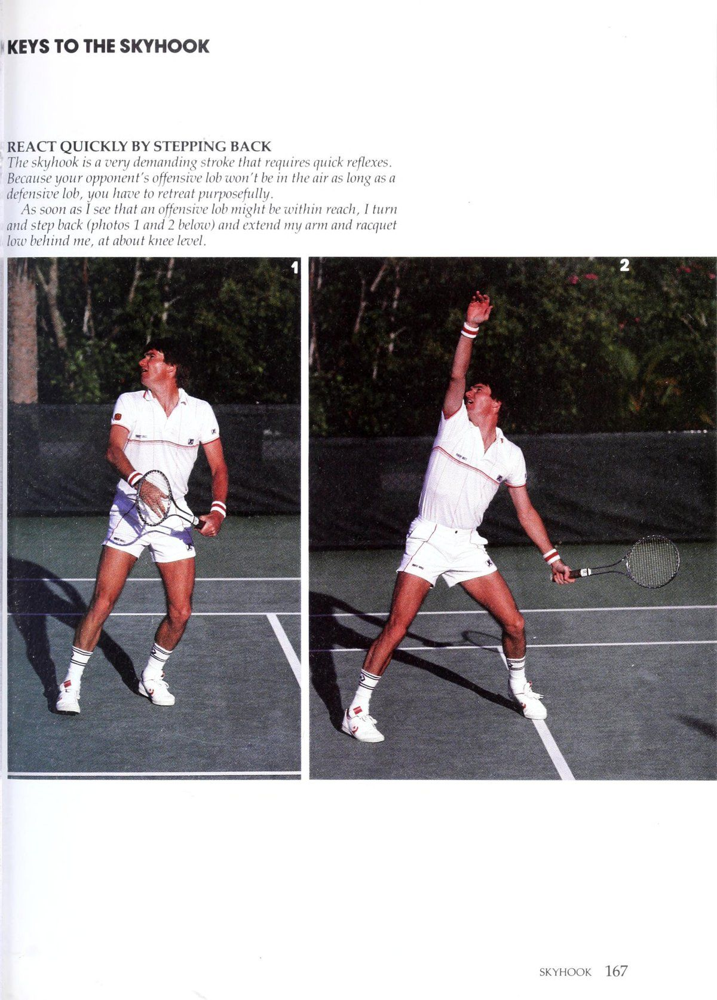
Hình 10: Tuyệt kỹ Skyhook độc quyền của Connors. Bước giật lùi thần tốc, bật nhảy bằng chân sau và vươn hết tầm với để móc quả bóng lốp trên không.
Skyhook là một cú đánh đòi hỏi nhiều sức lực sự phối hợp và ante xuất sắc để thành công một cách nhất quán.
Lật ngược tình thế: Nếu tôi có thể tiếp xúc tốt với chiếc móc câu của mình, Tôi sẽ đưa bóng đi sâu (ở trên). Với một chút may mắn, nó sẽ làm tôi ngạc nhiên đối thủ.
Thứ hai, nó mang lại cho đầu vợt nhiều động lượng hơn so với khi tôi bắt đầu cú đánh từ phía sau lưng như khi tôi thực hiện cú đánh từ trên cao thông thường. Và bởi vì tôi đang ngã về phía sau khi tiếp xúc và vai của tôi hướng vào lưới, động lượng đó, cùng với một cổ tay mạnh mẽ bắt được khi tiếp xúc, sẽ chuyển thành một cú đánh mạnh hơn.
Phần khó nhất của cú skyhook là tiếp bóng chắc chắn. Đó là bởi vì tôi không thể nhìn thấy bóng khi tiếp xúc. Cây vợt của tôi thực sự tiếp xúc bóng tốt phía sau đầu tôi và không có cách nào tôi có thể quay lại để xem nó mà vẫn giữ được thăng bằng. Cần có một lượng bản năng hoặc khả năng phỏng đoán nhất định để biết quả bóng ở đâu khi bạn không thể nhìn thấy nó.
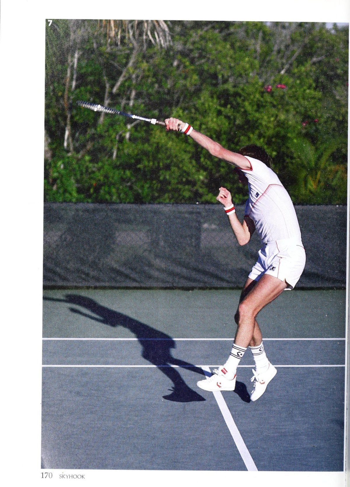
Hình 11: Tiếp đất và hoàn tất cú Skyhook. Chuyển động vung vợt chém xuống tự nhiên, tiếp đất an toàn và lập tức quay người hướng về sân đấu.
Thực sự không có nhiều thông tin tiếp theo về cú skyhook. Tôi quan tâm nhiều hơn đến việc tiếp đất trên sân bằng đôi chân của mình chứ không phải bằng mông, lo lắng nhiều về việc cây vợt của tôi sẽ ở đâu. Tôi chỉ tập trung vào việc để đầu vợt di chuyển nhẹ nhàng khi va chạm và không làm nó chậm lại.
Tôi đã nhiều lần được những người trên khán đài nói rằng có vẻ như phải mất rất nhiều công sức mới có thể thực hiện được cú nhảy cú skyhook. Có lẽ đó là lý do tại sao nó lại làm hài lòng đám đông như vậy. Đó là một cú đánh khó, nhưng tôi sẽ nói với bạn một điều: Cú nhảy cú skyhook giúp tôi tiết kiệm rất nhiều công sức khi cố gắng đuổi theo những cú lốp bóng tấn công đang bật ra khỏi tôi!
Chìa Khóa Cú Skyhook — Phản Ứng Nhanh Bằng Cách Lùi Lại
Skyhook là một cú đánh rất khắt khe, đòi hỏi phản xạ nhanh. Bởi vì cú lốp bóng tấn công của đối thủ sẽ không ở trên không lâu như cú lốp bóng phòng thủ, nên bạn phải rút lui có mục đích. Ngay khi tôi thấy một cú lốp bóng tấn công có thể nằm trong tầm tay, tôi quay lại và lùi lại (ảnh 1 và 2 bên dưới) đồng thời đưa tay và vợt xuống thấp phía sau, ngang tầm đầu gối.
Dùng Cánh Tay Cứng Để Tiếp Xúc
Khi tôi biết mình đang ở trong phạm vi, hãy cẩn thận tính thời gian nhảy bằng chân sau (3 và 4) và khởi động vợt của tôi bằng cánh tay cứng, kiểu cánh cối xay gió (5). Chuyển động này mang lại cho tôi khả năng vươn lên tối đa và vợt của tôi có thêm động lượng. Việc tiếp xúc tốt với bóng hoàn toàn là một vấn đề thường xuyên xảy ra và kinh nghiệm vì tác động thường xảy ra phía sau đầu tôi và ngoài tầm nhìn (6).
Việc tiếp tục thực hiện cú skyhook là điều đương nhiên. Đơn giản là không có cách nào bạn có thể đánh bóng theo chuyển động mà tôi vừa mô tả mà không có cánh tay và vợt của bạn tiếp tục đưa ra trước mặt bạn một cách tự nhiên (7). Trên thực tế, tôi chưa bao giờ phải suy nghĩ hoặc kiểm tra khả năng tiếp theo của mình vì tôi luôn quan tâm nhiều hơn đến việc hạ cánh. Đây thường là một pha khó khăn, nhưng nếu bạn giữ thăng bằng (8 và 9), bạn có thể đang ở trạng thái tốt để lấy lại vị trí tấn công trên lưới.
Phần VI — Những Con Đường Chiến Thắng
Tận dụng buổi tập, đánh giá đối thủ chưa biết, và tinh thần nỗ lực hết mình trên sân.
Chương 24
Cách Tận Dụng Tối Đa Các Buổi Tập
Bất cứ khi nào tôi đang khởi động cho một trận đấu, bất kể cho dù tôi đang ở US Open, Wimbledon hay bất kỳ giải nào những sự kiện Grand Prix nhỏ hơn, tôi tin chắc rằng bằng cách thời điểm phát súng cuối cùng được thực hiện trong cuộc thi, tôi sẽ người ra đi là người chiến thắng. Đối với một số người, điều đó nghe có vẻ giống như sự tự phụ. Tôi nghĩ đó là kết quả của sự tự tin trong lối chơi của mình.
Tôi tin chắc rằng nếu mục tiêu của bạn là trở thành một đối thủ cạnh tranh cứng rắn và kiên định thì đó chính là thái độ bạn cần phát triển. Tất nhiên, quần vợt xã hội không đòi hỏi mức độ tự tin tương tự. Tuy nhiên, [ nghĩ rằng bạn sẽ phải thừa nhận rằng ngay cả trong các trận đấu chỉ để giải trí, thật tuyệt khi đứng đầu.
Tôi không nói về việc bước vào một trận đấu chỉ đơn giản là nói với bản thân, thuyết phục bản thân rằng bạn sẽ thắng. Nếu bạn làm điều đó, tất cả những gì bạn đang xây dựng chỉ là sự tự tin giả tạo. Đối thủ của bạn có thể sẽ bắn hạ nó nhanh hơn tốc độ anh ta có thể thực hiện một cú lốp bóng phòng thủ ngắn. Vì vậy, cách tiếp cận đó dẫn đến một con đường cụt dẫn đến rất nhiều thất vọng.
Những gì bạn nên làm sau đó là sự thật. Và chỉ có một cách để xây dựng sự tự tin đó đến mức bạn cảm thấy tuyệt vời khi khởi động trước trận đấu. Đó là phải luyện tập thường xuyên, đủ lâu để phù hợp với trò chơi, tài năng và tính cách của bạn. Sâu thẳm bên trong bạn, bạn phải biết mình có khả năng làm gì trên sân và những hạn chế của bạn là gì.
Tôi không viết một toa thuốc trống để bạn luyện tập hàng giờ liền mỗi ngày. Nhu cầu tập luyện của mỗi người chơi đều khác nhau. Ví dụ, bạn có thể được hưởng lợi và thậm chí thích thú với chế độ tập luyện khắc nghiệt như vậy. Mặt khác, người hàng xóm bên cạnh bạn có thể chỉ luyện tập bằng một phần ba bạn, nhưng Tập luyện thi đấu: Trong ngày:
Trận đấu, tôi sẽ chơi một hoặc hai hiệp tập luyện (phải) với một người chơi khác, :
Rồi bỏ cuộc. } w = N <x fo) <x = 2) -z2 = iw = aS, Ww z = a = _— = a w x re thấy nhiều sự cải thiện trong trò chơi của anh ấy.
Đó là lý do tại sao nhiều trẻ em ngày nay không học được nhiều từ các học viện đào tạo quần vợt cường độ cao rải rác khắp đất nước ngày nay. Nếu họ không phải là kiểu cầu thủ cần được rèn luyện và rèn luyện trên sân theo thói quen luyện tập nghiêm ngặt, họ thường mất hứng thú với trận đấu. Nó không còn vui nữa. Kết quả là, họ có thể chuyển sang một môn thể thao hoặc hoạt động khác trước khi phát huy hết tiềm năng của mình trên sân tennis.
Tôi là một trong những người chơi không thích luyện tập thường xuyên và có hệ thống. Tôi chưa bao giờ là người ra ngoài hàng ngày và đánh các cú thuận tay chéo sân trong 10 phút, các cú trái tay chéo sân thêm 10 phút nữa, v.v. trong tất cả các cú đánh. Tôi thà ra ngoài, đánh vài quả bóng để thả lỏng và sau đó nói với bạn tập của mình, 'Hãy giao bóng cho họ'. Hãy chơi nào!”
Tất nhiên, hoàn cảnh của tôi không bình thường. Trong suốt sự nghiệp của mình, tôi đã lọt vào vòng cuối của hầu hết các sự kiện mà tôi tham gia. Điều đó có nghĩa là phải chơi rất nhiều trong một tuần thi đấu. Vì vậy, nếu tôi luyện tập vài giờ mỗi ngày trong các giải đấu, có lẽ tôi sẽ để trận đấu của mình trên sân tập. Tôi sẽ kiệt sức vào thời điểm trận đấu thực sự bắt đầu.
Vào ngày thi đấu, tôi sẽ ra ngoài vào buổi sáng và tập luyện khoảng 40 phút. Thế thôi. Tôi sẽ chơi một hoặc hai hiệp tập luyện với một người chơi khác rồi bỏ cuộc. Tiếp theo, tôi sẽ trở về khách sạn, ăn trưa và thư giãn. Tôi sẽ không quay lại địa điểm thi đấu cho đến khoảng một giờ trước trận đấu để có thể quên đi trận đấu. Khoảng thời gian kéo dài một giờ cho phép tôi tôi chuẩn bị cho trận đấu theo tốc độ của riêng tôi để không cảm thấy vội vã.
Trong những tuần nghỉ, tôi thường chơi vài giờ mỗi ngày. Nếu tôi không thể tìm được một chuyên gia du lịch khác để luyện tập cùng, thì đó là lúc tôi sẽ cố gắng tranh đấu với một chuyên gia giảng dạy. Ví dụ, khi tôi sống ở North Miami Beach, Fla., tôi thỉnh thoảng tập thể dục với Fred Stolle, cựu ngôi sao quần vợt người Úc.
Để tận dụng tối đa thời gian mà anh ấy có, tôi sẽ thực hiện tất cả các động tác trong các buổi tập của chúng tôi trong khi anh ấy đưa bóng chính xác. Một buổi tập luyện điển hình có thể diễn ra như thế này. Đầu tiên, tôi phải thực hiện mọi cú sút vào một góc. Fred sẽ đứng ở góc khuất và tôi sẽ phải thực hiện mọi cú đánh của mình về phía đó. Sau khoảng 10 phút, anh ấy sẽ chuyển sang phía quảng cáo. Đó sẽ trở thành khu vực mục tiêu mới của tôi.
Cuối cùng, anh ấy vào lưới và tôi thực hiện những cú chuyền bóng cho mỗi bên. Trong suốt thời gian này, anh ấy sẽ đưa tôi đi khắp sân. Sau khoảng 40 phút tập luyện, tôi sẽ giao một vài quả bóng để lấy lại hơi thở. Sau đó, tôi sẽ lặp lại toàn bộ quy trình.
Khi kết thúc hiệp thứ hai, chân tôi như tê cứng. Bất kỳ thời gian bổ sung nào tôi luyện tập ngoài thời điểm này, tôi đều coi đó là phần thưởng gấp đôi. Nói cách khác, chơi thêm 15 phút cũng giống như chơi thêm nửa giờ nữa. Rõ ràng, kiểu tập luyện đó rất căng thẳng và mệt mỏi. Và nó giúp tôi thay đổi nhịp độ trong những tuần nghỉ, nhưng nó hoàn toàn không thực tế trong suốt giải đấu.
Các buổi học có cấu trúc: Vào những ngày nghỉ, thỉnh thoảng tôi sẽ tranh thủ sự giúp đỡ của chuyên gia gpood tốt bụng như Fred Stolle (phía trên bên phải) để giúp tôi tập luyện hiệu quả.
Một thói quen như vậy có thể không thực tế đối với lối sống của bạn. Giả sử bạn có sân trong mùa giải và bạn đã trải qua một ngày vất vả ở văn phòng hoặc ở nhà. Có lẽ điều cuối cùng bạn muốn làm là sử dụng thời gian trên sân để luyện tập. Bạn muốn ra sân và chạy, chơi và giao lưu một chút, giải tỏa tâm trí khỏi tất cả các vấn đề và chi tiết mà bạn phải giải quyết trước đó trong ngày.
Không có công thức thực hành phép thuật nào cả. Bạn nên điều chỉnh kế hoạch luyện tập cá nhân cho phù hợp với trò chơi và tính cách của bạn.
Kết hợp một số thực hành vào thời gian chơi của bạn mà không cần dùng đến các bài tập có cấu trúc.
Làm sao? Bằng cách chọn ra một điểm yếu trong trò chơi của bạn và khắc phục nó khi bạn chơi. Ví dụ: nếu bạn luôn chơi một trận đấu cơ bản nhưng muốn trở nên hung hãn hơn, thì một tình huống giao bóng xã hội là cơ hội hoàn hảo để bạn thử nghiệm việc tiến lên lưới sau những cú đánh tiếp cận hoặc giao bóng của mình. Tương tự như vậy, nếu bạn nhận thấy các cú chạm đất của mình ngày càng ngắn hơn khi chạm sân đối thủ trong những tuần gần đây, bạn có thể cố gắng tập trung đánh bóng với độ sâu tốt.
Nói tóm lại, hãy đặt ra mục tiêu cụ thể cho bản thân trước khi bước ra sân. Bạn không có nhiều áp lực phải giành chiến thắng và thử thách được thêm vào có thể sẽ khiến trò chơi trở nên thú vị hơn. Tôi chắc chắn rằng bạn cũng sẽ nâng cao trình độ chơi của mình chỉ bằng cách nỗ lực hướng tới mục tiêu.
Lời khuyên tương tự cũng đúng nếu bạn chơi trò chơi một cách nghiêm túc hơn và bạn có thời gian dành cho các buổi luyện tập thường xuyên. Bạn nên tập luyện có mục đích. Cá nhân tôi thực sự cảm thấy nản lòng khi tập luyện trong ba hoặc bốn giờ vào buổi sáng, bỏ đi và hai giờ sau lại tự nhủ: “Trời ơi, [ước gì mình đã làm việc chăm chỉ hơn một chút về việc này hay việc kia”. Chất lượng thời gian bạn dành cho việc luyện tập mới là điều quan trọng chứ không phải độ dài thời gian.
Một cách để giúp đảm bảo rằng bạn tuân thủ nguyên tắc đó là tìm một đối tác luyện tập cũng mong muốn cải thiện khả năng chơi quần vợt của anh ấy như bạn, một người không ngại đứng đó và cho bạn ăn bóng trong 15 đến 20 phút mỗi lần, miễn là bạn đáp lại sự ưu ái đó. Hãy nhớ rằng thực hành là con đường hai chiều. Đừng độc chiếm các buổi tập của bạn, nếu không bạn sẽ không giữ được đối tác của mình lâu.
Một lựa chọn khác là tranh thủ sự phục vụ của một chuyên gia giảng dạy, người luôn quan tâm tích cực đến học sinh của mình. Sẽ rất hữu ích nếu có ai đó theo dõi quá trình tập luyện của bạn, đặc biệt là khi bạn còn trẻ, vì bằng cách đó, bạn sẽ ít lãng phí thời gian hơn. Mẹ tôi luôn giám sát việc tập luyện của tôi khi tôi còn nhỏ. Nếu tôi đã làm việc chăm chỉ trong khoảng 45 phút, cô ấy sẽ đến và nói những điều như, ““O.K., thế là đủ rồi. Sao con không đi cưỡi ngựa hoặc chơi với anh trai con đi,”
Lúc đó, tôi sẽ cảm thấy tuyệt vời vì nó có hai ý nghĩa. Đầu tiên, [đã có một ngày thi đấu vui vẻ và làm việc chăm chỉ trong trận đấu của mình. Và thứ hai, tôi có thể tôi cất cánh và làm bất cứ điều gì khác tôi muốn.
Khá hiếm khi một cầu thủ hiểu rõ bản thân đến mức có thể tự mình làm việc hiệu quả trong luyện tập. Vì vậy, nếu bạn nghiêm túc muốn cải thiện, hãy tìm một chuyên gia biết giới hạn và mục tiêu của bạn trong trò chơi. Bạn sẽ thấy phần thưởng gần như ngay lập tức trên sân.
Tất nhiên, không có công thức luyện tập kỳ diệu nào phù hợp với mọi người chơi quần vợt. Tôi ước tôi có thể cho bạn một cái. Điều quan trọng nhất là bạn điều chỉnh kế hoạch luyện tập của riêng mình phù hợp với trò chơi và tính cách của bạn. Một khi bạn tìm thấy những gì hiệu quả nhất, bạn sẽ có thể khởi động tự tin hơn cho các trận đấu của mình với thái độ của người chiến thắng.
R\N|\ với tôi Một thói quen tập trung: Khi tôi không thể chơi các hiệp luyện tập, tôi thường làm theo một thói quen có cấu trúc như trên. Tôi bắt đầu bằng cách đặt tất cả các bức ảnh của mình vào góc deuce (A ở trên) trong khoảng 10 phút, sau đó đến góc quảng cáo (B). Tiếp theo, bạn tập của tôi sẽ lên lưới và tôi sẽ phải thực hiện các cú chuyền bóng cho mỗi bên (C và D) trong 10 phút nữa. Sau khi giao vài quả bóng để lấy lại nhịp thở, tôi sẽ lặp lại bài tập. Cuối cùng
Chương 25
Những Cách Chắc Chắn Để Đánh Giá Đối Thủ Chưa Biết
Dù tôi được hưởng lợi nhiều từ quần vợt về mặt vật chất, không gì có thể so sánh được với niềm vui mà tôi nhận được khi đối mặt với những thử thách liên tục mà nó mang lại. Mỗi lần bước ra sân trong một trận đấu, tôi phải đối mặt với một loạt các biến số mới - điều kiện thi đấu, độ sắc nét trong trận đấu của tôi, cách đối thủ của tôi chơi. Sau ngần ấy năm, quần vợt trước hết vẫn là một trò chơi đối với tôi theo đúng nghĩa của từ này. Vì vậy, mỗi thử thách mới xuất hiện đều giúp trò chơi trở nên thú vị hơn. Đối thủ không quen thuộc thuộc loại đó. Họ thường là những cầu thủ trẻ đã nhanh chóng thăng hạng ở cấp độ cơ sở hoặc đủ điều kiện và đang khao khát chiến thắng lớn đầu tiên. Thử thách của tôi là đảm bảo rằng bước đột phá lớn của họ không khiến tôi phải trả giá. Đó là mục tiêu mà bất kỳ người chơi nào dù nghiệp dư hay chuyên nghiệp đều nên đặt ra cho mình. Và đó có thể là một điều khó khăn để tuân theo, đặc biệt nếu bạn là một người chơi giỏi, bởi vì trẻ nhỏ ngày nay hung hãn hơn, không sợ hãi hơn bao giờ hết và cảm thấy chúng chẳng có gì để mất. Tôi đã từng là một trong những thiếu niên đó. Trên thực tế, chiến thắng lớn đầu tiên của tôi là trước vận động viên giao bóng và vô lê vĩ đại người Úc Roy Emerson, tại Los Angeles vào năm 1969. Tôi nhớ mình đã tham gia trận đấu đó với một người họ hàng không rõ và khi nào| ra về với tư cách là người chiến thắng, tôi được biết mình đã được tặng một tủ đựng đồ ở cùng phòng với các anh lớn. Đó là một sự hồi hộp lớn. Tất nhiên, những cầu thủ trẻ chạy tự do không phải là những cầu thủ xa lạ duy nhất mà bạn có thể gặp ở cấp câu lạc bộ. Tôi đã tham gia trò chơi này quá lâu, khá hiếm khi tôi đối đầu với một người mà tôi chưa từng thấy chơi trước đây hoặc ít nhất là nghe nói đến. Nhưng bạn đang ở trên một chiếc thuyền khác. Bạn có nhiều khả năng gặp phải nhiều đối thủ hơn và có thể không có bất kỳ thông tin nào về họ trong tin đồn của câu lạc bộ của bạn. Cho dù bạn là nhà vô địch đã được chứng minh hay người chơi ở trình độ trung bình chỉ thích chơi quần vợt trên mạng xã hội, làm thế nào bạn có thể chinh phục đối thủ vô danh trên mạng một cách nhất quán hơn? Dưới đây là một số lời khuyên mà tôi nghĩ có thể hữu ích. Trước trận đấu, trước tiên bạn phải thực hiện một sự điều chỉnh quan trọng về mặt tinh thần.
L., rất cảnh giác với những người chơi xa lạ. Điều đó giữ tôi chuẩn bị cho bất cứ điều gì.
Với những cú đánh của anh ấy. Ví dụ: trong tình huống đó, tôi thường có thể lao ra xuất phát nhanh để khi đối thủ của tôi thu mình lại, tôi đang ở trong tình thế khó có thể dừng lại.
Mặt khác, tôi đã học được rằng bạn không bao giờ có thể tin tưởng điều đó sẽ xảy ra. Đã hơn một vài lần trong sự nghiệp của mình, tôi đã phải đối đầu với những cầu thủ trẻ lỏng lẻo và thực sự xé bóng khi bắt đầu trận đấu. Tuy nhiên, sau một vài trận đấu khó khăn, tôi thường tìm lại nhịp điệu của mình, buộc họ phải vấp ngã một chút. Đột nhiên, khi họ nhận ra rằng mình không đánh trúng được những người chiến thắng như lúc đầu, họ thường cố gắng thực hiện quá nhiều cú đánh của mình và rơi vào một cái bẫy mà họ không thể thoát ra. Tuy nhiên, tôi vẫn cảnh giác với những người chơi xa lạ. Thái độ thận trọng đó giúp tôi luôn sẵn sàng cho mọi tình huống khi quả bóng đầu tiên được đưa vào cuộc.
Nếu bạn chỉ là một người chơi bình thường, một thái độ tinh thần tốt có lẽ còn quan trọng hơn đối với thành công của bạn trước một người chơi xa lạ. Tại sao? Bởi vì bạn phải nhớ rằng có thể anh ấy không biết nhiều về trò chơi của bạn hơn bạn biết về trò chơi của anh ấy. Nói cách khác, cả hai bạn đều có điều kiện ngang nhau khi bước vào trận đấu của mình. Người chơi có thể gạt bỏ nỗi sợ hãi về những điều chưa biết của mình sang một bên là người có nhiều khả năng nắm quyền kiểm soát trận chiến ngay từ đầu.
Khi bạn đã ra sân để khởi động, bạn phải nhanh chóng đánh giá anh ta về kỹ năng vuốt ve. Đó là công việc mà nhiều cầu thủ câu lạc bộ có xu hướng bỏ qua. Tôi đang nói về việc quan sát phong cách đánh chung của đối thủ và cảm nhận điểm mạnh, điểm yếu của anh ta trong giai đoạn khởi động trước trận đấu và một vài game mở đầu của set đầu tiên.
Còn việc do thám đối thủ trong một trong những trận đấu trước đó của anh ta thì sao? Nếu bạn quyết tâm giành chiến thắng trong một trận đấu, tôi cho rằng đó là một phương tiện hiệu quả để giành lợi thế trước ai đó. Nhưng cá nhân tôi chưa bao giờ tin vào việc theo dõi đối thủ vì nó sẽ làm giảm bớt thử thách cho tôi trên sân.
Trong quần vợt xã hội, tôi thực sự không nghĩ có chỗ cho nó. Ở mức độ đó, bạn nên ra sân cho vui chứ không nên hạ gục đối thủ 6-0, 6-0.
Khởi động là lúc bắt đầu đánh giá trận đấu của đối thủ. Bạn chỉ có khoảng năm phút để làm việc, nhưng bạn sẽ ngạc nhiên về việc mình có thể học được bao nhiêu nếu rèn luyện bản thân khả năng quan sát.
Tôi không nhất thiết phải nói về việc tìm kiếm những chi tiết nhỏ, chẳng hạn như cách cầm vợt của đối thủ, điều này có thể cho bạn một số manh mối về cách bạn nên tấn công. Tôi biết nhiều tuyển thủ chuyên nghiệp làm điều đó, nhưng tôi cố gắng đánh giá đối thủ của mình một cách tổng quát hơn. Điều tôi thích làm khi đối đầu với một đối thủ xa lạ là quan sát phong cách vuốt ve của anh ta. Tôi ghi nhớ trong đầu về kiểu xoáy mà anh ta thích sử dụng, kích thước cú vung của anh ta (một người chơi có cú xoay hình tròn lớn có thể dễ mắc sai lầm trong các cú đánh của mình) và bất kỳ sự lo lắng rõ ràng nào. Những quan sát nhỏ này có thể có ích trong quá trình chơi. Có hai điều quan trọng mà quá trình khởi động không thể tiết lộ về một tuyển thủ. Đầu tiên là hiệu quả của động tác chân của anh ấy (anh ấy có thể tiếp cận bóng nhanh như thế nào) vì anh ấy không chạy hết sức trong quá trình khởi động. Thứ hai, bạn không bao giờ có thể biết anh ấy cạnh tranh tốt như thế nào dưới áp lực vì chưa có áp lực nào cả. Bạn có thể không tìm thấy câu trả lời của mình cho đến khi anh ấy giành được break point ở tỷ số 5-tất cả trong set thứ hai. Rõ ràng, một vài trận đầu tiên trong trận đấu của bạn sẽ lấp đầy mọi khoảng trống mà bạn có thể đã bỏ lỡ khi khởi động. Tôi muốn so sánh giai đoạn này của trận đấu với một trận đấu quyền anh. Các võ sĩ thông minh sẽ không bước vào võ đài để đấu với một võ sĩ vô danh và bắt đầu tung ra những cú đấm tốt nhất của mình khi chuông hiệp đầu tiên vang lên. Tương tự như vậy, tôi không muốn ra ngoài và ném những thứ tốt nhất của mình vào đối thủ trừ khi tôi thấy rằng anh ta quá lo lắng và sẵn sàng tấn công ngay từ đầu. Vì vậy, những gì tôi thường làm là thực hiện một vài cú đâm và di chuyển quả bóng xung quanh một chút để cảm nhận cách anh ấy chơi. Nếu tôi phát hiện ra một điểm yếu rõ ràng trong trò chơi của anh ấy, tôi có thể sẽ không theo đuổi nó ngay lập tức. Đôi khi, tôi sẽ đánh vào sức mạnh của anh ấy và cố gắng phá vỡ nó. Nếu tôi có thể làm được điều đó thì phần còn lại của trận đấu thường là lịch sử. Nhưng ngay cả khi không thể, tôi vẫn có điểm yếu mà tôi phát hiện ra trong quá trình khởi động để khắc phục. [khuyên bạn nên thử chiến lược tương tự. Đôi khi, quá trình cảm nhận ban đầu này có vẻ như đang chống lại bạn. Nói cách khác, đối thủ của bạn có thể vượt lên dẫn trước nhanh chóng nếu anh ta lỏng lẻo và tự tin. Nó đã xảy ra với tôi. Trong tình huống đó, bạn phải kiên quyết và loại bỏ mọi xu hướng hoảng sợ. Khi trận đấu của bạn cuối cùng đã bắt đầu, bạn sẽ có thể phanh và ngăn chặn đối thủ của mình bằng cách sử dụng những ghi nhớ mà bạn đã ghi nhớ trước đó trong trận đấu. Lời khuyên cuối cùng của tôi khi chơi với một đối thủ xa lạ là: Hãy ra ngoài và chơi trò chơi của riêng bạn. Hãy cố gắng kiểm soát tình hình khi lần đầu tiên bước vào sân. Có được cảm giác tốt về môi trường và hoàn cảnh trận đấu. Trên hết, đừng cảm thấy rằng bạn phải có kỹ thuật cao mới tìm ra điểm yếu. Giữ đánh giá ban đầu của bạn về trò chơi của mình đơn giản... và tận dụng những kiến thức đó. Nó hiệu quả với tôi và nó cũng có thể hiệu quả với bạn.
Chương 26
Nỗ Lực Hết Mình Để Chơi Vui & Thành Công Hơn
Thể thao, họ nói bạn không thể hy vọng được coi là một nhà vô địch vĩ đại cho đến khi bạn chứng minh được rằng bạn có thể giành chiến thắng thường xuyên, ngay cả khi bạn không đang chơi ở phong độ cao nhất. Nhà vô địch tìm mọi cách để vượt qua tình huống khó khăn; anh ấy không bị khuất phục trước áp lực, và anh ấy không thôi cố gắng đi.
Bốn từ cuối cùng đó là chìa khóa cho toàn bộ suy nghĩ: Anh ấy không ngừng cố gắng. Cho dù bạn là nhà vô địch câu lạc bộ, cấp dưới được xếp hạng, người chơi xã hội, hacker cuối tuần hay người mới bắt đầu, bạn nên sống theo những lời đó trên sân quần vợt vì chúng sẽ giúp bạn có được nhiều niềm vui và sự hài lòng hơn khi chơi trò chơi và giúp bạn phát huy hết tiềm năng của mình ở bất kỳ cấp độ chơi nào bạn chọn.
Tôi tự hào khi có thể nói rằng trong suốt sự nghiệp của mình, tôi luôn rời sân sau một trận đấu và biết rằng mình đã nỗ lực 100%. Tất nhiên, nỗ lực tổng lực như vậy không đảm bảo chiến thắng. Tuy nhiên, điều nó đảm bảo là tôi sẽ cố gắng hết sức trong mỗi trận đấu.
Tôi hối hả thực hiện các cú đánh, tôi hòa vào dòng chảy của trận đấu, tôi không để những tình huống áp lực lấn át mình. Khi Ido thua, ít nhất tôi cũng cảm thấy hài lòng khi biết rằng đối thủ đã đánh bại mình. Tôi không đưa que diêm cho anh ấy vì tôi — không thử. Đối với tôi, đó sẽ là sự lột xác cuối cùng. Tôi đang lừa dối bản thân và người hâm mộ. Tôi sẽ từ bỏ trò chơi hoàn toàn nếu đòn bẩy đạt đến mức độ thất vọng đó.
Thông thường, việc nỗ lực 100% trên sân đã mang lại cho tôi một số chiến thắng quan trọng. Tất nhiên, những ngày mà bạn hạ gục đối thủ, khi mọi thứ trong trò chơi của bạn dường như ăn khớp một cách hoàn hảo, thật tuyệt vời. Nhưng những ngày mà thời gian hoặc sự tập trung của bạn hơi lệch lạc một chút cũng là lúc những nỗ lực tổng thể thực sự được đền đáp. > Một nỗ lực tổng thể: Bằng cách hối hả trên mọi điểm (phải) Tôi thấy tôi có thể mặc hạ gục đối thủ và vượt qua những tình huống áp lực.
Neer. không bao giờ bỏ cuộc cho đến khi quả bóng cuối cùng được đánh đã chơi.
Ví dụ, tôi đã phải đối mặt với tình huống đó ở tứ kết giải Mỹ mở rộng năm 1978. Bước vào giải đấu, tôi cảm thấy mình chơi quần vợt đủ tốt để giành chức vô địch. Ngoài ra, việc Open chuyển sang sân cứng tại Flushing Meadow, N.Y., đã mang lại cho tôi thêm động lực. Tôi vẫn quyết tâm giành chiến thắng tại địa điểm mới trước sự chứng kiến của những người hâm mộ New York.
Nhưng Adriano Panatta của Ý — một cầu thủ tài năng với những cú sút tuyệt vời, mặc dù đôi khi có những cú sút thất thường — đã khiến tôi thực sự sợ hãi trong hiệp đấu. Sau khi chia điểm trong bốn set đầu tiên, anh ấy bẻ giao bóng cho tôi sớm ở set thứ năm và giao bóng cho trận đấu với tỷ số 5-4.
Sau ba tiếng rưỡi chơi khó khăn, tôi phải nỗ lực hết mình và trò chơi của mình nếu không sẽ bị loại. May mắn thay, tôi đã có thể vượt qua thử thách bằng một số lần hoàn trả dịch vụ khó khăn dẫn đến thời gian nghỉ dịch vụ. Tôi thực sự đã được bơm đầy adrenaline.
Trận giao bóng cuối cùng của Panatta với tỷ số 5-6 là một trận chạy marathon kéo dài 15 phút. Bị dẫn trước 0-40, anh ấy đã cứu được ba điểm trận đấu, nhưng cuối cùng tôi đã kiếm được một điểm quảng cáo bằng cách thực hiện một đường chuyền trái tay bằng một tay, tất cả hoặc không có gì, từ góc sân khiến anh ấy bất ngờ. Nó làm anh rung động, và anh mắc lỗi kép ở điểm tiếp theo để kết thúc trận đấu.
Bằng cách nỗ lực giành từng điểm một, tôi đã có thể nắm bắt được thời điểm quan trọng nhất trong trận đấu đó. Bài học rút ra ở đây là: Không bao giờ, không bao giờ bỏ cuộc cho đến khi quả bóng cuối cùng được chơi.
Triết lý đơn giản đó có thể mang lại điều kỳ diệu cho trò chơi của bạn, bất kể khả năng chơi của bạn như thế nào. Ví dụ: ở mức độ cạnh tranh cao, bạn sẽ có thể thắng nhiều trận đấu dài hơn. Đối thủ của bạn sẽ sớm biết rằng bạn là một chiến binh, rằng bạn sẽ không bao giờ nhượng bộ hay gục ngã trước áp lực. Kết quả là, họ biết mình là người bị tấn công ở giai đoạn cuối của trận đấu. Sẽ không dễ để họ có được chiến thắng cuối cùng.
Ở cấp độ mang tính giải trí hoặc xã hội cao hơn, thái độ cứng rắn mới của bạn sẽ giúp trò chơi trở nên thú vị hơn. Sau một ngày dài ở nơi làm việc, ở nhà hoặc ở trường, bạn sẽ mong muốn được ra sân và tận hưởng một số bài tập thể dục lành mạnh giúp bạn thoát khỏi những vấn đề hàng ngày.
Bạn cũng sẽ nhận ra hai lợi ích quan trọng khác của việc nỗ lực 100% trước tòa. Đầu tiên, trò chơi của bạn sẽ cải thiện nhanh hơn tôi bạn từng nghĩ là có thể. Và thứ hai, bạn sẽ có nhiều niềm vui hơn bao giờ hết.
Vì vậy, hãy tiếp tục và tận hưởng chính mình. Hãy phục vụ họ!
Cái bắt tay cuối cùng: Liệu bạn đã thắng hoặc thua, 100 phần trăm nỗ lực sẽ để lại cho bạn một cảm giác thỏa mãn trong nội tâm.
4 phiên bản (EA RIES 4 > 3 thời đại eeS
JIMMY CONNORS'
Tháng 1 Jacksonville (Fla.) Quốc tế. Clark Graebner Jan. Roanoke (Va.) Quốc tế. Vladimir Zednick Nữ hoàng tháng sáu, Anh. John Paish Tháng 7 Columbus, Ohio. Andrew Pattison tháng 8 Cincinnati, Ohio. Guillermo Vilas Tháng Mười Albany, NY. Roscoe Tanner Jan. Baltimore (Md.) Trong nhà. Sandy Mayer Jan Roanoke (VA.) Quốc tế. lan Fletcher Tháng Hai Thành phố Salt Lake, Utah. Paul Gerken Tháng Hai Salisbury, Md.. Karl Meiler tức là March Hampton (Va.) International. Tlie Nastase March Paramus (N.]J.) Quốc tế. Clark Graebner (3: Tháng 7 US Pro, Boston, Mass.. Arthur Ashe 14. Tháng 8 Columbus, Ohio. Charlie Pasarell 15: Tháng 9. Los Angeles, California.. Tom Okker 16. Tháng 10 Quebec, Canada. Marty Riessen 7. Tháng 11 Johannesburg, S. Châu Phi. Arthur Ashe Ngày 18 tháng 1 Úc Chps., Melbourne. Phil Dent 19. Tháng 1 Roanoke (Va.) Quốc tế. Karl Meiler Ngày 20 tháng 2 Little Rock, Ark.. Karl Meiler Pay tháng 2 Birmingham (Ala.) Quốc tế. Sandy Mayer 5) Tháng 2. Salisbury, Md.. Frew McMillan “4.
Hampton (Va.) Quốc tế 2: Tháng 3. Ilie Nastase 24. Tháng 3 Thành phố Salt Lake, Utah. Vitas Gerulaitis pie’ March Tempe, Ariz.. Vijay Amritraj 26. Tháng 6 Manchester, Anh Michael Collins Zi Tháng 7 Wimbledon, Anh. Ken Rosewall ngày 20 tháng 8, US Clay, Indianapolis, Ind.. Bjorn Borg 29: US Open tháng 9, Forest Hills, NY. Ken Rosewall 30. Tháng 9 Los Angeles, California.. Harold Solomon ol, Tháng 11 Lendon, Anh. Brian Gottfried o2 tháng 11 Johannesburg, S. Châu Phi. Arthur Ashe oo Tháng 1. Freeport International, Bahamas d. Karl Meiler 34. Tháng Hai Salisbury, Md.. Vitas Gerulaitis 30. Tháng 2 Boca Raton, Fla.. Jurgen Fassbender 36. Tháng Ba Hampton (Va.) Quốc tế. Tháng Giêng Kodes 37. Tháng Tư Denver, Colo.. Brian Gottfried 38. Tháng 6 Birmingham (Ala.) International d. Billy Martin oo: Tháng 8 North Conway, N.H.. Ken Rosewall 40. Tháng 9. Princess Classic, Bermuda. Vitas Gerulaitis 41. Tháng 10 Maui, Hawaii. Sandy Mayer 42. Tháng 1 Birmingham (Ala.) International d. Roscoe Tanner 43. Tháng 2 US Pro Indoor, Philadelphia, Pad d. Bjorn Borg 44. March Hampton (Va.) International d. [nói dối Nastase 45. Tháng Ba Palm Springs, California d. Thợ thuộc da Roscoe